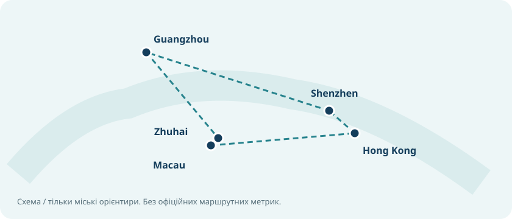
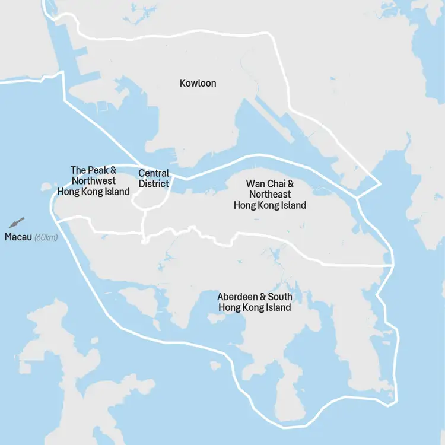
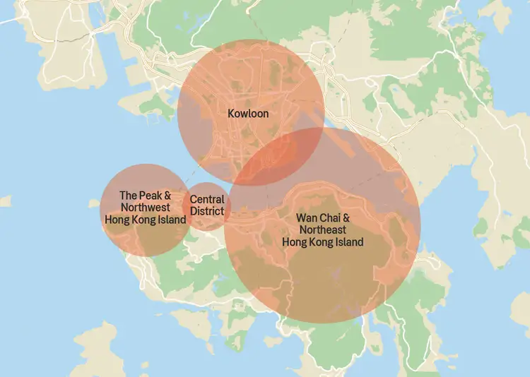
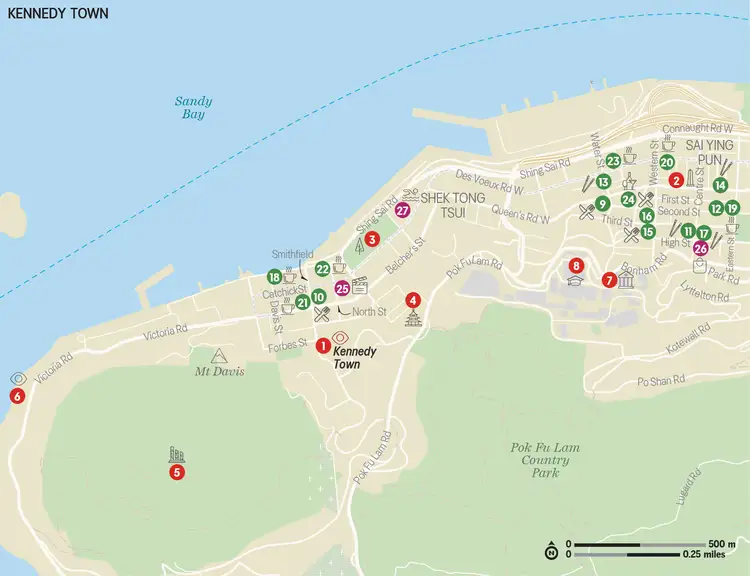
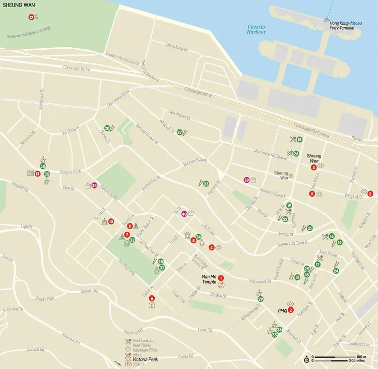
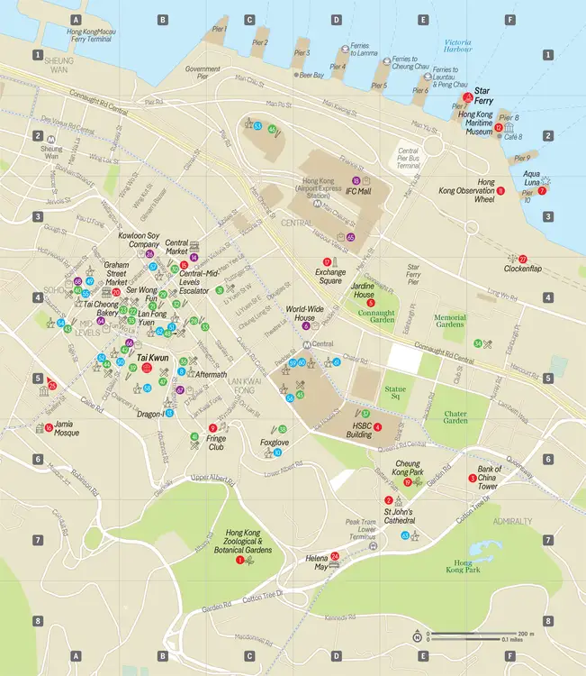
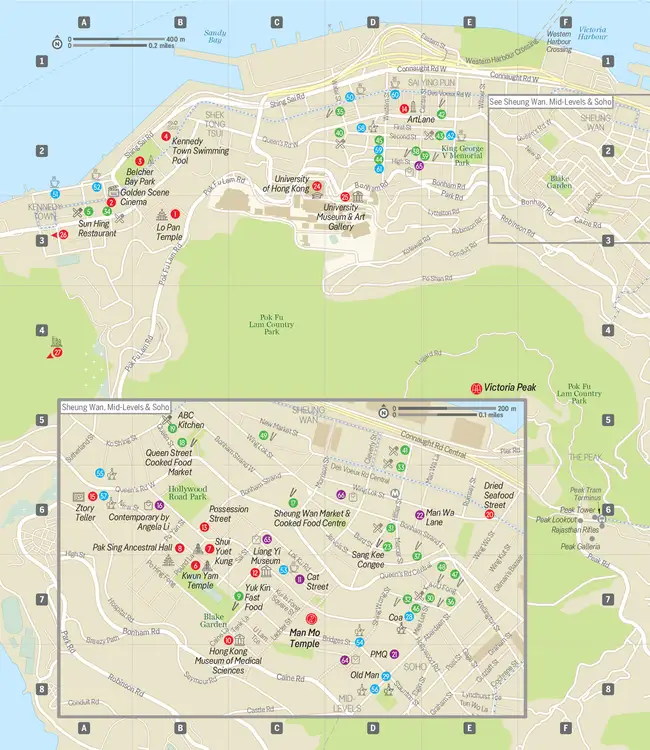
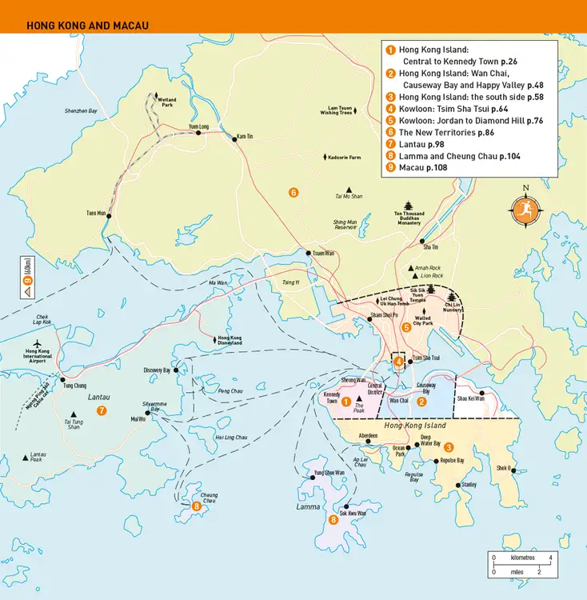
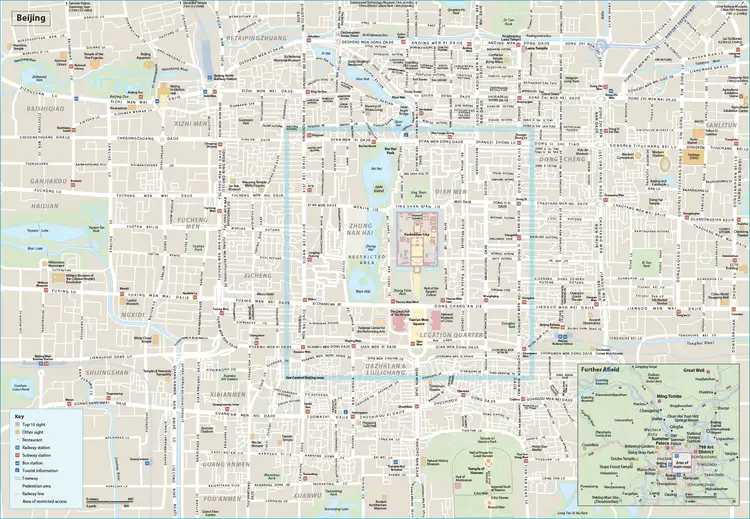
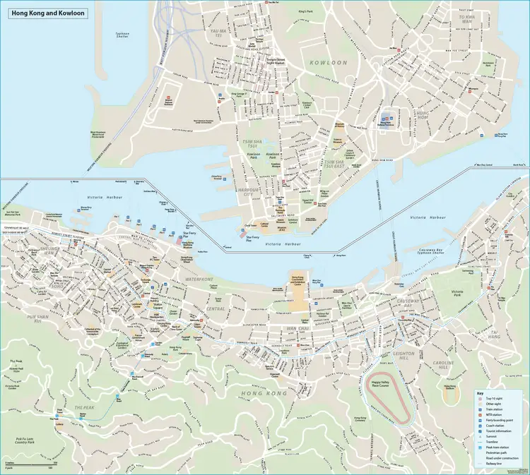

Перші 24 години
P0 · сьогодні
Прапорці і нотатки зберігаються тільки локально у браузері цього пристрою; експорт у JSON потрібен для перенесення.
Згода матері на подорож Саші: окремий PDF (англійська, українська, китайський підсумок).
| Поле | Значення |
|---|---|
| Entry Transportation Mode | Train |
| Arrival Flight/Train/Vessel Number | G388 |
| City of Entry | Guangdong 广东 → Shenzhen 深圳 |
| Port of Entry | West Kowloon 西九龙站口岸 / 香港西九龙站 |
| Date of Entry | 2026-10-28 |
Не вибирайте Futian 福田 як порт: це кінцева станція поїзда, а імміграційний контроль КНР проходять на West Kowloon. Вибір Guangdong → Shenzhen → West Kowloon підтверджений незалежним досвідом заповнення інтерфейсу, а не окремою інструкцією NIA для саме цих меню. На 03.11 потрібна інша картка: Air, CZ356, Beijing, Beijing Daxing International Airport. У кожного пасажира мають бути коректні особисті дані; QR не є транзитним дозволом.
Відкрити офіційний портал NIA · Підтвердження вибору в меню (неофіційне)
Macau → Hong Kong без SMS: квиток HZMB Shuttle Bus можна придбати після прикордонного контролю в касі чи автоматі Macau Port без онлайн-акаунта. День MOP65, ніч MOP70 за особу. Офіційна інструкція й тарифи.
Маршрути: 21 прив'язаний до адреси сегмент Atlas v2.8/2.9 не означає 21 перевірений розклад - точність хвилин від дверей до дверей не підтверджено. Для материкового Китаю користуйтеся поточними даними AMap/高德地图, а посилання Google Maps розглядайте як стартові пошукові підказки.
Нові дані 2.8 мають пріоритет над старими припущеннями про ¥18 пором, офіційні автобуси 101X, усі старі заплановані готелі й поїзди. Дійсні бронювання - в приватному блоці v2.6.
26.10 PKX: раніше створені QR, чинність залежить від реальних даних і факту виходу з контрольованої транзитної зони. 28.10 West Kowloon / 香港西九龙: заповнити нову картку (G388 07:20; Pengda 28/29, Four Seasons 29/30, Chengxin 30/31; планований вихід Gongbei 31.10). 03.11 PKX: нова картка (CZ356, Dongmen Inn 03/04, CZ673 London 04.11). Hong Kong та Macau: місцеві Arrival Cards не вимагаються; Macau видає slip з дозволеним періодом перебування. QR не дає право на 240h TWOV автоматично.
NIA - оформити Arrival Card · Macau офіційні FAQ · Hong Kong офіційний посібник
Gongbei / 拱北口岸: пішохідний перехід у Макао, без транспортного квитка. Альтернативний пором: Wanzai 湾仔口岸 → Macau Inner Harbour 澳門內港客運碼頭 - ¥30 за дорослого-туриста, ¥60 за двох. Не плутати з пільговими ¥18 для жителів Zhuhai/Macao. Купівля: Wanzai каса; WeChat «澳门粤通船务» (для паспорта і оплати іноземною Visa онлайн-придатність не доведена). Від Chengxin це ІНШИЙ район: готель підібраний для Gongbei, не Wanzai; додаткова поїздка таксі/автобусом (довідково ≈7 км / 15 хв автомобілем від самого Gongbei Port, НЕ від Chengxin; точні км/хв від дверей не перевірені). Тарифний довідник указує, що денний квиток може діяти на будь-який рейс у дату придбання, тобто призначене місце й точний час НЕ гарантовані.
TWOV: лише справжній квиток на 31.10 допомагає як доказ exit mainland→Macau; поромний квиток без резервованого місця НЕ гарантує автоматичного прийняття West Kowloon імміграцією. Macau→Hong Kong на 01.11 не замінює цей документ і суперечить вже підтвердженому Days Hostel з 31.10.
Державне підтвердження порома · Оператор водної лінії · Тарифна таблиця (неофіційна, підлягає контрольній звірці)
Купіть на місці у Macau HZMB Port / 港珠澳大橋澳門口岸: у квиткових автоматах або касах після прикордонних формальностей. Реєстрація сайту та SMS не потрібні. MOP65 на особу вдень 06:00-23:59, MOP70 уночі 00:00-05:59 (за двох MOP130/MOP140). На офіційному сайті: Mpay, Alipay, WeChat, Macau Pass, Octopus, UnionPay, POS, готівка MOP. Автобуси 24h, частіше вдень. Від історичного центру до Macau Port міський автобус 101 (101X перейменований у 2026), але конкретні зупинки/розклад для вашого виходу мають перевірятися за DSAT. Після прибуття на Hong Kong Port потрібний ОКРЕМИЙ міський автобус до Days Hostel.
Конкуренти: One Bus HK$180 на особу в суботу → Jordan (пряма міська доставка, але сувора норма багажу 56×36×22); TurboJET HK$212 денний вихідний / HK$242 нічний на особу до Sheung Wan + додатковий MTR. З огляду на бюджет і готель TST основний HZMB Gold Bus вигідніший.
Gold Bus тариф та POS · Офіційна наявність автоматів · DSAT перейменування 101X→101 · One Bus · TurboJET
03.11 PKX 大兴机场 → Caoqiao 草桥: Daxing Airport Express / 大兴机场线, стандартний вагон, ¥35 з людини = ¥70 за двох; Business ¥50 за особу. В аеропорту шукайте знаки Subway / 大兴机场线, спускайтеся до станції; на вході контроль та турнікети; після цього їхати до Caoqiao ~20 хв. Оплата: одна безконтактна іноземна Visa/Mastercard на кожного (у Пекіні підтверджено), або білетний автомат/каса (готівка, QR, картка відповідно до обладнання). Далі Line 10 → Zhichunlu → Line 13 → Qinghe; з PKX всього 2 пересадки. Не плутати Arrival QR з транспортним квитком.
Увага: виліт із HKG прибуває PKX 17:25, G7849 Qinghe вирушає 20:52. Імміграція + багаж + платформа + метро залишають дуже малий запас. Метро-експрес не вирішує ризик запізнення. Оператор: квитки й тариф · Офіційні перші/останні поїзди · Visa/Mastercard для метро
У v2.7 було лише 6 старих пішохідних маршрутів; їх недостатньо. Тут додано 21 сегментів із назвами зупинок, бронюваннями і посиланнями на навігацію, але НЕ створено фальшивих «перевірених хвилин». Для повного аудиту потрібні доступ до живих розкладів/навігації та маршрутна валідація кожної ділянки.
| Дата | Етап | Початок → кінець EN / 中文 | Рекомендований режим | Маршрут | Невизначеність |
|---|---|---|---|---|---|
| 10-27 | HKG→Days Hostel | Hong Kong International Airport 香港國際機場 → Days Hostel 戴斯賓館 | A21 bus or Airport Express; walk to reception in Block D, Flat D6 | Побудувати шлях | Не підтверджено / Stop names only; door-to-door duration not independently verified |
| 10-28 | Days Hostel→West Kowloon G388 07:20 | Days Hostel 戴斯賓館 → West Kowloon HSR 香港西九龍站 | Walk; HSR station opens 06:00; B1 verification ceases 06:50 | Побудувати шлях | Не підтверджено / Early walking time and actual access to West Kowloon entrance not turn-by-turn verified |
| 10-28 | Futian→Pengda Luohu | Futian Railway Station 福田站 → Shenzhen Pengda 深圳鹏达宾馆 | Metro plus walk; metro-line combination requires day-specific routing | Побудувати шлях | Не підтверджено / Detailed metro transfer chain not fully certified |
| 10-29 | Pengda→Shenzhen train C8004 08:00 | Shenzhen Pengda 深圳鹏达宾馆 → Shenzhen Railway Station 深圳站 | Walk to Shenzhen Railway Station at Luohu | Побудувати шлях | Не підтверджено / Hotel floor/entrance may add minutes; exact walking path not verified |
| 10-29 | Guangzhou East→Haizhu centre | Guangzhou East 广州东站 → Haizhu Square 海珠广场 | Metro L1 to Gongyuanqian, transfer L2 to Haizhu Square | Побудувати шлях | Не підтверджено / Door-to-door duration not dynamically queried |
| 10-29 | Guangzhou centre→Four Seasons South | Haizhu Square 海珠广场 → Four Seasons Flower Apartment 四季花公寓 | Metro Line 2 southbound, final walk from Guangzhou South area | Побудувати шлях | Не підтверджено / Actual apartment entrance route and late reception not verified |
| 10-30 | Four Seasons→historical centre | Four Seasons Flower Apartment 四季花公寓 → Beijing Road 北京路 | Walk/metro Line 2 + walk; city sightseeing | Побудувати шлях | Не підтверджено / Transport chain from apartment entrance not verified |
| 10-30 | Haizhu→Guangzhou South D1899 21:59 | Haizhu Square 海珠广场 → Guangzhou South 广州南站 | Metro Line 2 direct + station/security | Побудувати шлях | Не підтверджено / In-train travel estimate ≈29 min; total not independently routed |
| 10-30 | Zhuhai station→Chengxin late check-in | Zhuhai Railway Station 珠海站 → Chengxin Apartment 诚信公寓 | Walk / taxi; train D1899 scheduled arrival 22:56 | Побудувати шлях | Не підтверджено / Late acceptance at apartment not confirmed, route not measured |
| 10-31 | Chengxin→Gongbei walking border | Chengxin Apartment 诚信公寓 → Gongbei Port 拱北口岸 | Walk (no onward transport ticket) | Побудувати шлях | Не підтверджено / Walking time and border queues variable |
| 10-31 | Gongbei→Senado Square | Macau Border Gate 關閘 → Senado Square 議事亭前地 | Macau bus 3/3X or other official bus route; validate stop route | Побудувати шлях | Не підтверджено / Specific bus stop and service time not verified |
| 10-31 | Senado→Macau HZMB Port | Senado Square 議事亭前地 → Macau HZMB Port 港珠澳大橋澳門口岸 | Macau bus 101 (former 101X), confirm nearest boarding stop | Побудувати шлях | Не підтверджено / Station-level timetable not integrated |
| 10-31 | Macau Port→Hong Kong Port | Macau HZMB Port 港珠澳大橋澳門口岸 → Hong Kong HZMB Port 港珠澳大橋香港口岸 | HZMB Gold Shuttle Macau-Hong Kong; port vending/counter no account | Побудувати шлях | Не підтверджено / Border queue and departure subject to real operation |
| 10-31 | Hong Kong HZMB→Days Hostel | Hong Kong HZMB Port 港珠澳大橋香港口岸 → Days Hostel 戴斯賓館 | Cityflyer A21 or another port bus; walk to Block D | Побудувати шлях | Не підтверджено / Check exact stop and last bus timetable; duration not verified |
| 11-03 | Days Hostel→HKG for CZ356 | Days Hostel 戴斯賓館 → Hong Kong International Airport 香港國際機場 | Airport bus A21 or MTR Airport Express | Побудувати шлях | Не підтверджено / Specific date service and door-to-door not verified |
| 11-03 | PKX→Caoqiao Airport Express | Beijing Daxing Airport 北京大兴国际机场 → Caoqiao 草桥 | Daxing Airport Express, standard carriage CNY35 per person | Побудувати шлях | Не підтверджено / Arrival security/immigration and platform walking excluded |
| 11-03 | Caoqiao→Qinghe G7849 20:52 | Caoqiao 草桥 → Qinghe 清河站 | Metro 10 → Zhichunlu; Metro 13 → Qinghe, or DiDi | Побудувати шлях | Не підтверджено / Tight margin, arrival after 20:20 risky; needs dynamic routing |
| 11-03 | Badaling HSR→Dongmen Inn | Badaling Great Wall 八达岭长城站 → Dongmen Inn 东门客栈 | Walk if feasible or local taxi; arrival G7849 21:11 | Побудувати шлях | Не підтверджено / No verified 21:00 safe walking route/lighting/reception |
| 11-04 | Dongmen Inn→Badaling Great Wall | Dongmen Inn 东门客栈 → Badaling Great Wall 八达岭长城 | Walk or road transfer to entrance before 07:30 opening | Побудувати шлях | Не підтверджено / Entrance and HSR exit are different; timing not certified |
| 11-04 | Great Wall→Badaling HSR D6704 10:44 | Badaling Great Wall 八达岭长城 → Badaling Great Wall 八达岭长城站 | Walk to station and underground security | Побудувати шлях | Не підтверджено / Significant risk if too far from specific gate |
| 11-04 | Qinghe→PKX for CZ673 15:15 | Qinghe 清河站 → Beijing Daxing Airport 北京大兴国际机场 | Direct car or metro 13+10+Airport Express | Побудувати шлях | Не підтверджено / Crowded traffic and check-in; no reserved transfer |
Пріоритет над старими плановими порадами: фактичні бронювання в блоці v2.6 збережені без змін. Тут - виправлений правовий аналіз Gongbei, пересадка PKX→Qinghe та рішення щодо готелю в Гуанчжоу.
Підтверджено: громадяни України входять до програми 240h; Макао є третім регіоном відносно Гонконгу; West Kowloon - дозволений пункт входу; інші відкриті міжнародні порти Гуандуну можуть використовуватися для виїзду.
Пакет документів: G388 28.10; підтвердження Chengxin Apartment 30-31.10; Days Hostel Hong Kong 31.10-03.11; CZ356 03.11; короткий опис «Zhuhai Gongbei 拱北口岸 → Macau Border Gate 關閘, on foot, 31 Oct». Якщо купується справжній іменний квиток на міжнародний пором або автобус - додати його, не підміняти фіктивною бронею.
Сильніша резервна доказова база: пором Zhuhai Wanzai Pier 珠海湾仔口岸 → Macau Inner Harbour 澳門內港 (існування маршруту підтверджено урядом Макао; можливість іменного бронювання на 31.10 не встановлено). Якщо змінювати перехід, потрібна справжня доступність рейсу і квитки для двох.
Джерела: NIA 2026 · NIA інші документи · ГУ Гуандун - можливий виїзд · MTR TWOV FAQ · Туристичне відомство Макао| Варіант | Зупинки та лінії (EN / 中文) | Пересадки | Орієнтир часу | На двох |
|---|---|---|---|---|
| A · метро, мінімум пересадок | Daxing Airport 大兴机场 → Caoqiao 草桥 (Daxing Airport Express); → Zhichunlu 知春路 (Line 10); → Qinghe 清河 (Line 13) | 2 | ~78-105 хв | ¥80-90 |
| B · метро через L19 | 大兴机场 → 草桥 (Airport Express); → 牡丹园 (19); → 知春路 (10); → 清河 (13) | 3 | ~80-110 хв | ¥80-90 |
| C · експрес + DiDi | 大兴机场 → 草桥 (~20 хв); авто Caoqiao 草桥 → Qinghe 清河 (~24.6 км) | 1 | ~55-100 хв | ¥145-165 |
| D · пряме таксі | Beijing Daxing Airport 北京大兴国际机场 → Qinghe Railway Station 清河站 (~67-71 км) | 0 | ~50-110 хв | ¥220-300 |
Бюджетний вибір: A (метро 2 пересадки). Компроміс із часом: C, але лише якщо затори на дорогах дозволяють. Перед тим як виходити на платформу Airport Express, порівняти орієнтовне прибуття в AMap / 高德地图 (посилання для довідки: PKX→Qinghe транспорт).
Caoqiao→Qinghe авто · PKX→Qinghe альтернативи · Airport ExpressФакт: куплений C8004 прибуває на Guangzhou East 广州东 29.10 о 08:57, а D1899 відправляється з Guangzhou South 广州南 30.10 о 21:59. Оплачений Four Seasons Flower Apartment (14-1 Toumiao Road, Shibi Street, Panyu) розташований біля станції відправлення, але далеко від Beijing Road, Shamian та історичного центру. Бронювання ¥58.84 без можливості скасування.
| Рішення | Час і логістика | Додаткові витрати | Оцінка |
|---|---|---|---|
| Залишити оплачений South | Guangzhou East → центр: ~25-40 хв; центр → South hotel увечері, South hotel → центр вранці, центр → South на D1899: три поперечні переїзди сумарно ~1.5-2.5 год плюс підходи | Приблизно ¥16-28 на двох за додаткові поїздки метро | Найдешевше грошима |
| Новий готель біля Haizhu Square 海珠广场 / Line 2 | 29-го з Guangzhou East одразу до центрального готелю; 30-го пам'ятки пішки; 30-го ~20:00 метро Line 2 до Guangzhou South (29 хв у поїзді) | Втрачений аванс ¥58.84 + нова невідома вартість; економія частини метропоїздок ≈¥12-24 | Краще для часу, не для бюджету |
Де шукати заміну: Haizhu Square 海珠广场站, ≤10 хв до входу лінії 2. Дійсні кандидати - Yimi Hotel (202 Yide Road 一德路202号), Tenwood (293 Huifu West Road 惠福西路293号), CityNote Beijing Road (81 Xihu Road 西湖路81号). Поточна ціна на правильну ніч не перевірена; ці назви не означають уже вигідне бронювання.
Мій бюджетний вибір: залишити Four Seasons Flower, не втрачати ¥58.84. Оптимізувати переміщення без зайвого повернення на станцію South удень. Із центру 30.10 виходити ~20:00-20:15, ціль бути на Guangzhou South до 21:00-21:15.
Guangzhou East→South · Haizhu→South · Останні поїзди Metro 2Актуально: цей оперативний реєстр із листів Agoda / China Railway має пріоритет перед старими сценаріями v2.5 та непідтвердженими списками готелів. Приватні дані: не публікувати цей пакет.
Beijing · Hong Kong · Shenzhen · Guangzhou · Zhuhai · Macau · Beijing
Джерельний зріз оператора NLB. Ці хвилини - відправлення з кінцевої зупинки, не прибуття до проміжних зупинок. Не означають наявність місць або відсутність затримок.
07:30, 10:35, 11:20, 12:20, 13:20, 13:50, 14:20, 14:50, 15:20, 15:50, 16:20, 16:45, 17:15, 17:45, 18:30. Опублікована тривалість 18 хв, святковий тариф HK$19.2 на початку маршруту. NLB офіційно.
15:00, 15:15, 15:30, 15:40, 15:50, 16:00, 16:10, 16:20, 16:30, 16:40, 16:50, 17:00, 17:10, 17:20, 17:30, 17:40, 17:50, 18:00, 18:10, 18:20, 18:30, 18:40, 18:50, 19:00, 19:15, 19:30, 19:45, 20:00, 20:15, 20:30, 20:45, 21:00, 21:20, 21:45, 22:20, 22:55, 23:30, 00:15 (наступного дня). Опублікована тривалість 52 хв, недільний тариф HK$23.3 для повного маршруту. NLB офіційно.
Після 16:00: 16:10, 16:25, 16:40, 16:55, 17:10, 17:25, 17:40, 17:55, 18:10, 18:40, 19:10. Опублікована тривалість 50 хв, недільний тариф HK$37.0. Цей розклад у напрямку з Ngong Ping, не до Ngong Ping. NLB офіційно.
Китайські потяги: G388 28.10 07:20; C8004 29.10 08:00; D1899 30.10 21:59; G7849 03.11 20:52; D6704 04.11 10:44 (джерело - особисті підтвердження 12306, PRIVATE). Пороми: останній TurboJET Outer Harbour→Sheung Wan 23:00 (розклад від 16.10.2026); останній Cotai Taipa→Sheung Wan 23:59; автобус HZMB Macau→HK цілодобово, MOP65/70. Усі інші точні часи зупинок і пішохідні хвилини, для яких немає первинного джерела, залишаються НЕПІДТВЕРДЖЕНИМИ.
Пріоритет: оплачувані поїзди з квитків 12306 і адреси підтверджених готелів. Нижче не вигадані точні хвилини там, де немає прокладеного пішохідного треку або відповіді транспортного оператора. Офлайн доступний текст, а не автоматичні повороти GPS.
Entry mode: Flight; Arrival number: CZ356; City: Beijing 北京; Port: Beijing Daxing International Airport 北京大兴国际机场; exit flight: CZ673 04.11; готель: Dongmen Inn / 东门客栈, 北京市延庆区八达岭镇岔道村25号. Офіційна NIA картка. Заповнення не гарантує допуску.
| Спосіб | 1 дорослий | Останній рейс | Джерело |
|---|---|---|---|
| HZMB Gold Bus (найдешевший) | MOP65 06:00-23:59 / MOP70 00:00-05:59 | Цілодобово; інтервали 5-30 хв | HZMBus |
| TurboJET · Outer Harbour→Sheung Wan | HK$212 weekend day / HK$242 night | 23:00 (розклад від 16.10.2026) | TurboJET |
| Cotai Water Jet · Taipa→Sheung Wan | MOP209 weekend day / MOP242 night | 23:59 | Cotai |
TurboJET Early Bird HKD175/200 заявлений, але на офіційній сторінці суперечливі дати - не вважати тариф гарантованим. Пором і шатл мають різні місця посадки, не плутати Outer Harbour та Taipa.
Автобус NLB 21 Ngong Ping 昂坪 → Tai O 大澳: 07:30, 10:35, 11:20, 12:20, 13:20, 13:50, 14:20, 14:50, 15:20, 15:50, 16:20, 16:45, 17:15, 17:45, 18:30. Первинне джерело.
Звідки: Hong Kong International Airport 香港國際機場
Куди: Days Hostel 戴斯賓館
Спосіб: transit ·
Офлайн-підказка: Cityflyer A21; confirm actual alighting point
Точні хвилини зупинок / час пішки: НЕ ВИМІРЯНО; дивіться маршрут і розклад оператора онлайн.
Точний пішохідний трек: не доступний офлайн без локальної маршрутизованої карти. Відкрити онлайн-карту
Звідки: Days Hostel 戴斯賓館
Куди: West Kowloon HSR 香港西九龍站
Спосіб: walking ·
Офлайн-підказка: Leave hotel ~05:20-05:30; HSR opens 06:00
Точні хвилини зупинок / час пішки: НЕ ВИМІРЯНО; дивіться маршрут і розклад оператора онлайн.
Точний пішохідний трек: не доступний офлайн без локальної маршрутизованої карти. Відкрити онлайн-карту
Звідки: Futian Railway Station 福田站
Куди: Shenzhen Pengda 深圳鹏达宾馆
Спосіб: transit ·
Офлайн-підказка: Destination Luohu/Renmin South Rd
Точні хвилини зупинок / час пішки: НЕ ВИМІРЯНО; дивіться маршрут і розклад оператора онлайн.
Точний пішохідний трек: не доступний офлайн без локальної маршрутизованої карти. Відкрити онлайн-карту
Звідки: Shenzhen Pengda 深圳鹏达宾馆
Куди: Shenzhen Railway Station 深圳站
Спосіб: walking ·
Офлайн-підказка: Target railway station 07:15-07:25
Точні хвилини зупинок / час пішки: НЕ ВИМІРЯНО; дивіться маршрут і розклад оператора онлайн.
Точний пішохідний трек: не доступний офлайн без локальної маршрутизованої карти. Відкрити онлайн-карту
Звідки: Guangzhou East 广州东站
Куди: Haizhu Square 海珠广场
Спосіб: transit ·
Офлайн-підказка: 2 metro lines; daytime city sightseeing
Точні хвилини зупинок / час пішки: НЕ ВИМІРЯНО; дивіться маршрут і розклад оператора онлайн.
Точний пішохідний трек: не доступний офлайн без локальної маршрутизованої карти. Відкрити онлайн-карту
Звідки: Haizhu Square 海珠广场
Куди: Four Seasons Flower Apartment 四季花公寓
Спосіб: transit ·
Офлайн-підказка: Late evening check-in at booked apartment
Точні хвилини зупинок / час пішки: НЕ ВИМІРЯНО; дивіться маршрут і розклад оператора онлайн.
Точний пішохідний трек: не доступний офлайн без локальної маршрутизованої карти. Відкрити онлайн-карту
Звідки: Four Seasons Flower Apartment 四季花公寓
Куди: Beijing Road 北京路
Спосіб: transit ·
Офлайн-підказка: Do not carry large suitcases for excursions
Точні хвилини зупинок / час пішки: НЕ ВИМІРЯНО; дивіться маршрут і розклад оператора онлайн.
Точний пішохідний трек: не доступний офлайн без локальної маршрутизованої карти. Відкрити онлайн-карту
Звідки: Haizhu Square 海珠广场
Куди: Guangzhou South 广州南站
Спосіб: transit ·
Офлайн-підказка: Leave Haizhu around 20:00-20:15; target station <=21:15
Точні хвилини зупинок / час пішки: НЕ ВИМІРЯНО; дивіться маршрут і розклад оператора онлайн.
Точний пішохідний трек: не доступний офлайн без локальної маршрутизованої карти. Відкрити онлайн-карту
Звідки: Zhuhai Railway Station 珠海站
Куди: Chengxin Apartment 诚信公寓
Спосіб: walking ·
Офлайн-підказка: Hotel address Building 23, Block H, 7F
Точні хвилини зупинок / час пішки: НЕ ВИМІРЯНО; дивіться маршрут і розклад оператора онлайн.
Точний пішохідний трек: не доступний офлайн без локальної маршрутизованої карти. Відкрити онлайн-карту
Звідки: Chengxin Apartment 诚信公寓
Куди: Gongbei Port 拱北口岸
Спосіб: walking ·
Офлайн-підказка: Exit PRC via Gongbei, Macau Border Gate
Точні хвилини зупинок / час пішки: НЕ ВИМІРЯНО; дивіться маршрут і розклад оператора онлайн.
Точний пішохідний трек: не доступний офлайн без локальної маршрутизованої карти. Відкрити онлайн-карту
Звідки: Macau Border Gate 關閘
Куди: Senado Square 議事亭前地
Спосіб: transit ·
Офлайн-підказка: Macau city excursion
Точні хвилини зупинок / час пішки: НЕ ВИМІРЯНО; дивіться маршрут і розклад оператора онлайн.
Точний пішохідний трек: не доступний офлайн без локальної маршрутизованої карти. Відкрити онлайн-карту
Звідки: Senado Square 議事亭前地
Куди: Macau HZMB Port 港珠澳大橋澳門口岸
Спосіб: transit ·
Офлайн-підказка: Macau DSAT route renamed February 2026
Точні хвилини зупинок / час пішки: НЕ ВИМІРЯНО; дивіться маршрут і розклад оператора онлайн.
Точний пішохідний трек: не доступний офлайн без локальної маршрутизованої карти. Відкрити онлайн-карту
Звідки: Macau HZMB Port 港珠澳大橋澳門口岸
Куди: Hong Kong HZMB Port 港珠澳大橋香港口岸
Спосіб: transit ·
Офлайн-підказка: MOP65 day/MOP70 00:00-05:59 per person
Точні хвилини зупинок / час пішки: НЕ ВИМІРЯНО; дивіться маршрут і розклад оператора онлайн.
Точний пішохідний трек: не доступний офлайн без локальної маршрутизованої карти. Відкрити онлайн-карту
Звідки: Hong Kong HZMB Port 港珠澳大橋香港口岸
Куди: Days Hostel 戴斯賓館
Спосіб: transit ·
Офлайн-підказка: Return to 36-44 Nathan Rd
Точні хвилини зупинок / час пішки: НЕ ВИМІРЯНО; дивіться маршрут і розклад оператора онлайн.
Точний пішохідний трек: не доступний офлайн без локальної маршрутизованої карти. Відкрити онлайн-карту
Звідки: Days Hostel 戴斯賓館
Куди: Hong Kong International Airport 香港國際機場
Спосіб: transit ·
Офлайн-підказка: Arrive for 14:05 flight with international check-in buffer
Точні хвилини зупинок / час пішки: НЕ ВИМІРЯНО; дивіться маршрут і розклад оператора онлайн.
Точний пішохідний трек: не доступний офлайн без локальної маршрутизованої карти. Відкрити онлайн-карту
Звідки: Beijing Daxing Airport 北京大兴国际机场
Куди: Caoqiao 草桥
Спосіб: transit ·
Офлайн-підказка: ≈19-20 min train; standard fare ¥35, bank-card tap or ticket vending
Точні хвилини зупинок / час пішки: НЕ ВИМІРЯНО; дивіться маршрут і розклад оператора онлайн.
Точний пішохідний трек: не доступний офлайн без локальної маршрутизованої карти. Відкрити онлайн-карту
Звідки: Caoqiao 草桥
Куди: Qinghe 清河站
Спосіб: transit ·
Офлайн-підказка: Two metro transfers over entire PKX→Qinghe
Точні хвилини зупинок / час пішки: НЕ ВИМІРЯНО; дивіться маршрут і розклад оператора онлайн.
Точний пішохідний трек: не доступний офлайн без локальної маршрутизованої карти. Відкрити онлайн-карту
Звідки: Badaling Great Wall 八达岭长城站
Куди: Dongmen Inn 东门客栈
Спосіб: walking ·
Офлайн-підказка: Destination No.25 Chadao Village
Точні хвилини зупинок / час пішки: НЕ ВИМІРЯНО; дивіться маршрут і розклад оператора онлайн.
Точний пішохідний трек: не доступний офлайн без локальної маршрутизованої карти. Відкрити онлайн-карту
Звідки: Dongmen Inn 东门客栈
Куди: Badaling Great Wall 八达岭长城
Спосіб: walking ·
Офлайн-підказка: Have to return to HSR by ~10:10-10:15
Точні хвилини зупинок / час пішки: НЕ ВИМІРЯНО; дивіться маршрут і розклад оператора онлайн.
Точний пішохідний трек: не доступний офлайн без локальної маршрутизованої карти. Відкрити онлайн-карту
Звідки: Badaling Great Wall 八达岭长城
Куди: Badaling Great Wall 八达岭长城站
Спосіб: walking ·
Офлайн-підказка: Target station by 10:10-10:15, train 10:44
Точні хвилини зупинок / час пішки: НЕ ВИМІРЯНО; дивіться маршрут і розклад оператора онлайн.
Точний пішохідний трек: не доступний офлайн без локальної маршрутизованої карти. Відкрити онлайн-карту
Звідки: Qinghe 清河站
Куди: Beijing Daxing Airport 北京大兴国际机场
Спосіб: transit ·
Офлайн-підказка: Target airport by ~12:30-13:00; D6704 arrives Qinghe 11:04
Точні хвилини зупинок / час пішки: НЕ ВИМІРЯНО; дивіться маршрут і розклад оператора онлайн.
Точний пішохідний трек: не доступний офлайн без локальної маршрутизованої карти. Відкрити онлайн-карту
Звідки: Hong Kong International Airport / 香港國際機場
Куди: Days Hostel / 戴斯賓館, Flat D6 Reception, Block D, 10/F, 36-44 Nathan Road, Tsim Sha Tsui, Hong Kong
Спосіб: transit · Citybus A21 / 城巴A21
Офлайн-підказка: Arrival bus to Tsim Sha Tsui; walk from Nathan Rd alighting stop to Block D; HK$34.60/person (published route standard)
Точні хвилини зупинок / час пішки: НЕ ВИМІРЯНО; дивіться маршрут і розклад оператора онлайн.
Точний пішохідний трек: не доступний офлайн без локальної маршрутизованої карти. Відкрити онлайн-карту Джерело
Звідки: Days Hostel / 戴斯賓館, Flat D6 Reception, Block D, 10/F, 36-44 Nathan Road, Tsim Sha Tsui, Hong Kong
Куди: Star Ferry Tsim Sha Tsui Pier / 天星碼頭
Спосіб: walking ·
Офлайн-підказка: Optional HK waterfront / Star Ferry outing after check-in
Точні хвилини зупинок / час пішки: НЕ ВИМІРЯНО; дивіться маршрут і розклад оператора онлайн.
Точний пішохідний трек: не доступний офлайн без локальної маршрутизованої карти. Відкрити онлайн-карту
Звідки: Star Ferry Tsim Sha Tsui Pier / 天星碼頭
Куди: Victoria Peak / 太平山頂
Спосіб: transit ·
Офлайн-підказка: Optional Peak trip with interchange; not same as direct walk; check Peak Tram hours
Точні хвилини зупинок / час пішки: НЕ ВИМІРЯНО; дивіться маршрут і розклад оператора онлайн.
Точний пішохідний трек: не доступний офлайн без локальної маршрутизованої карти. Відкрити онлайн-карту
Звідки: Victoria Peak / 太平山頂
Куди: Days Hostel / 戴斯賓館, Flat D6 Reception, Block D, 10/F, 36-44 Nathan Road, Tsim Sha Tsui, Hong Kong
Спосіб: transit ·
Офлайн-підказка: Return to Days Hostel before early G388 day
Точні хвилини зупинок / час пішки: НЕ ВИМІРЯНО; дивіться маршрут і розклад оператора онлайн.
Точний пішохідний трек: не доступний офлайн без локальної маршрутизованої карти. Відкрити онлайн-карту
Звідки: Futian Railway Station / 福田站
Куди: Huaqiangbei / 华强北
Спосіб: transit · Shenzhen Metro lines 2/8 toward Huaqiang North / 华强北
Офлайн-підказка: Futian station / 福田; board metro L2/8 to Huaqiang North; no advance tickets
Точні хвилини зупинок / час пішки: НЕ ВИМІРЯНО; дивіться маршрут і розклад оператора онлайн.
Точний пішохідний трек: не доступний офлайн без локальної маршрутизованої карти. Відкрити онлайн-карту Джерело
Звідки: Huaqiangbei / 华强北
Куди: Lianhuashan Park / 莲花山公园
Спосіб: transit ·
Офлайн-підказка: Optional Lianhuashan park before hotel; extra travel
Точні хвилини зупинок / час пішки: НЕ ВИМІРЯНО; дивіться маршрут і розклад оператора онлайн.
Точний пішохідний трек: не доступний офлайн без локальної маршрутизованої карти. Відкрити онлайн-карту
Звідки: Lianhuashan Park / 莲花山公园
Куди: Shenzhen Pengda Hotel / 深圳鹏达宾馆, 12F, Real Estate Building, No. 1007 Renmin South Road, Luohu, Shenzhen
Спосіб: transit ·
Офлайн-підказка: Optional: reach Luohu hotel before next morning 08:00 departure
Точні хвилини зупинок / час пішки: НЕ ВИМІРЯНО; дивіться маршрут і розклад оператора онлайн.
Точний пішохідний трек: не доступний офлайн без локальної маршрутизованої карти. Відкрити онлайн-карту
Звідки: Huaqiangbei / 华强北
Куди: Shenzhen Pengda Hotel / 深圳鹏达宾馆, 12F, Real Estate Building, No. 1007 Renmin South Road, Luohu, Shenzhen
Спосіб: transit · Shenzhen metro Line 1 via Huaqiang Road → Luohu
Офлайн-підказка: From Huaqiang North area walk to Huaqiang Road Line 1; train toward Luohu; exit and walk Renmin South Road. Local entrance not verified.
Точні хвилини зупинок / час пішки: НЕ ВИМІРЯНО; дивіться маршрут і розклад оператора онлайн.
Точний пішохідний трек: не доступний офлайн без локальної маршрутизованої карти. Відкрити онлайн-карту Джерело
Звідки: Guangzhou East Railway Station / 广州东站
Куди: Nanyue King Museum / 南越王博物院
Спосіб: transit ·
Офлайн-підказка: Historical sightseeing optional: Guangzhou East to old town via Metro/transfer
Точні хвилини зупинок / час пішки: НЕ ВИМІРЯНО; дивіться маршрут і розклад оператора онлайн.
Точний пішохідний трек: не доступний офлайн без локальної маршрутизованої карти. Відкрити онлайн-карту
Звідки: Nanyue King Museum / 南越王博物院
Куди: Chen Clan Ancestral Hall / 陈家祠
Спосіб: transit ·
Офлайн-підказка: Sightseeing chain, check attraction entrance hours
Точні хвилини зупинок / час пішки: НЕ ВИМІРЯНО; дивіться маршрут і розклад оператора онлайн.
Точний пішохідний трек: не доступний офлайн без локальної маршрутизованої карти. Відкрити онлайн-карту
Звідки: Chen Clan Ancestral Hall / 陈家祠
Куди: Shamian Island / 沙面岛
Спосіб: transit ·
Офлайн-підказка: Old town to Shamian; metro/walk, check actual station entry
Точні хвилини зупинок / час пішки: НЕ ВИМІРЯНО; дивіться маршрут і розклад оператора онлайн.
Точний пішохідний трек: не доступний офлайн без локальної маршрутизованої карти. Відкрити онлайн-карту
Звідки: Shamian Island / 沙面岛
Куди: Canton Tower / 广州塔
Спосіб: transit ·
Офлайн-підказка: Optional evening Canton Tower, lengthy return to South area
Точні хвилини зупинок / час пішки: НЕ ВИМІРЯНО; дивіться маршрут і розклад оператора онлайн.
Точний пішохідний трек: не доступний офлайн без локальної маршрутизованої карти. Відкрити онлайн-карту
Звідки: Shamian Island / 沙面岛
Куди: Four Seasons Flower Apartment, No. 14-1 Toumiao Road, Shibi Street, Panyu, Guangzhou
Спосіб: transit · Metro to Guangzhou South + walk/taxi
Офлайн-підказка: Apartment in Shibi near Guangzhou South, not Guangzhou East; confirm exact building entrance.
Точні хвилини зупинок / час пішки: НЕ ВИМІРЯНО; дивіться маршрут і розклад оператора онлайн.
Точний пішохідний трек: не доступний офлайн без локальної маршрутизованої карти. Відкрити онлайн-карту
Звідки: Four Seasons Flower Apartment, No. 14-1 Toumiao Road, Shibi Street, Panyu, Guangzhou
Куди: Sacred Heart Cathedral / 石室圣心大教堂
Спосіб: transit · Guangzhou metro Line 2 to central Guangzhou
Офлайн-підказка: From apartment to Guangzhou South station and Line 2 northbound; city sightseeing
Точні хвилини зупинок / час пішки: НЕ ВИМІРЯНО; дивіться маршрут і розклад оператора онлайн.
Точний пішохідний трек: не доступний офлайн без локальної маршрутизованої карти. Відкрити онлайн-карту
Звідки: Sacred Heart Cathedral / 石室圣心大教堂
Куди: Beijing Road Pedestrian Street / 北京路步行街
Спосіб: walking ·
Офлайн-підказка: Walk in city centre; street-level entrance and actual path still unmeasured
Точні хвилини зупинок / час пішки: НЕ ВИМІРЯНО; дивіться маршрут і розклад оператора онлайн.
Точний пішохідний трек: не доступний офлайн без локальної маршрутизованої карти. Відкрити онлайн-карту
Звідки: Beijing Road Pedestrian Street / 北京路步行街
Куди: Haizhu Square / 海珠广场
Спосіб: walking ·
Офлайн-підказка: Reach Haizhu Square station before D1899 21:59. Recommended leave core central area by 20:00-20:15, not verified minute-to-minute.
Точні хвилини зупинок / час пішки: НЕ ВИМІРЯНО; дивіться маршрут і розклад оператора онлайн.
Точний пішохідний трек: не доступний офлайн без локальної маршрутизованої карти. Відкрити онлайн-карту
Звідки: Haizhu Square / 海珠广场
Куди: Guangzhou South Railway Station / 广州南站
Спосіб: transit · Guangzhou Metro Line 2 / 广州地铁2号线
Офлайн-підказка: Direct train from Haizhu Square to Guangzhou South; train ride roughly half hour, allow station entry and rail security.
Точні хвилини зупинок / час пішки: НЕ ВИМІРЯНО; дивіться маршрут і розклад оператора онлайн.
Точний пішохідний трек: не доступний офлайн без локальної маршрутизованої карти. Відкрити онлайн-карту
Звідки: Four Seasons Flower Apartment, No. 14-1 Toumiao Road, Shibi Street, Panyu, Guangzhou
Куди: Guangzhou South Railway Station / 广州南站
Спосіб: walking ·
Офлайн-підказка: Return to hotel for belongings if stored; apartment entrance vs station entrance exact geometry unverified
Точні хвилини зупинок / час пішки: НЕ ВИМІРЯНО; дивіться маршрут і розклад оператора онлайн.
Точний пішохідний трек: не доступний офлайн без локальної маршрутизованої карти. Відкрити онлайн-карту
Звідки: Portas do Cerco / 關閘
Куди: A-Ma Temple / 媽閣廟
Спосіб: transit ·
Офлайн-підказка: Alternative local route before Senado; Macau city buses charge MOP6 cash / MOP3 via eligible transport card; check exact stop.
Точні хвилини зупинок / час пішки: НЕ ВИМІРЯНО; дивіться маршрут і розклад оператора онлайн.
Точний пішохідний трек: не доступний офлайн без локальної маршрутизованої карти. Відкрити онлайн-карту Джерело
Звідки: A-Ma Temple / 媽閣廟
Куди: Senado Square / 議事亭前地
Спосіб: transit ·
Офлайн-підказка: A-Ma to Senado optional; preserve buffer for HK port return
Точні хвилини зупинок / час пішки: НЕ ВИМІРЯНО; дивіться маршрут і розклад оператора онлайн.
Точний пішохідний трек: не доступний офлайн без локальної маршрутизованої карти. Відкрити онлайн-карту
Звідки: Senado Square / 議事亭前地
Куди: Ruins of St Paul’s / 大三巴牌坊
Спосіб: walking ·
Офлайн-підказка: Historical center uphill; step-free path not confirmed
Точні хвилини зупинок / час пішки: НЕ ВИМІРЯНО; дивіться маршрут і розклад оператора онлайн.
Точний пішохідний трек: не доступний офлайн без локальної маршрутизованої карти. Відкрити онлайн-карту
Звідки: Ruins of St Paul’s / 大三巴牌坊
Куди: HZMB Macau Port / 港珠澳大橋澳門口岸
Спосіб: transit · Macau city buses 101/102/103, depending on origin
Офлайн-підказка: Not every route serves St Pauls directly; use actual nearest stop to 101 etc. Route 101 runs all day; 102 until 24:00, 103 until 23:30 (operator data).
Точні хвилини зупинок / час пішки: НЕ ВИМІРЯНО; дивіться маршрут і розклад оператора онлайн.
Точний пішохідний трек: не доступний офлайн без локальної маршрутизованої карти. Відкрити онлайн-карту Джерело
Звідки: Macau Taipa Ferry Terminal / 澳門氹仔客運碼頭
Куди: HZMB Macau Port / 港珠澳大橋澳門口岸
Спосіб: transit ·
Офлайн-підказка: Optional Taipa-side route with local transport; avoid assuming short foot crossing
Точні хвилини зупинок / час пішки: НЕ ВИМІРЯНО; дивіться маршрут і розклад оператора онлайн.
Точний пішохідний трек: не доступний офлайн без локальної маршрутизованої карти. Відкрити онлайн-карту Джерело
Звідки: Macau Outer Harbour Ferry Terminal / 外港客運碼頭
Куди: Hong Kong Macau Ferry Terminal / 港澳客輪碼頭, Sheung Wan
Спосіб: transit · TurboJET / 噴射飛航
Офлайн-підказка: Optional expensive ferry; latest schedule valid from 16 Oct 2026 has last Macau Outer Harbour→HK Sheung Wan 23:00; Economy weekend day ~HK$212, night ~HK$242, check charge currency.
Опублікований розклад / підтверджений рейс: {"date": "2026-10-31", "last": "23:00", "scheduled_night_departures": ["19:00", "21:00", "22:00", "23:00"]}
Точний пішохідний трек: не доступний офлайн без локальної маршрутизованої карти. Відкрити онлайн-карту Джерело Джерело
Звідки: Macau Taipa Ferry Terminal / 澳門氹仔客運碼頭
Куди: Hong Kong Macau Ferry Terminal / 港澳客輪碼頭, Sheung Wan
Спосіб: transit · Cotai Water Jet / 金光飛航
Офлайн-підказка: Optional expensive ferry; 31 Oct is Saturday; last 23:59 (Taipa→HK); weekends day MOP209, night MOP242.
Опублікований розклад / підтверджений рейс: {"date": "2026-10-31", "last": "23:59", "scheduled_evening_departures": ["19:00", "20:00", "21:00", "22:00", "23:00", "23:59"]}
Точний пішохідний трек: не доступний офлайн без локальної маршрутизованої карти. Відкрити онлайн-карту Джерело
Звідки: HZMB Macau Port / 港珠澳大橋澳門口岸
Куди: HZMB Hong Kong Port / 港珠澳大橋香港口岸
Спосіб: transit · HZMB Gold Bus / 港珠澳大橋穿梭巴士
Офлайн-підказка: 24h; MOP65 06:00-23:59, MOP70 00:00-05:59; purchase at terminal without SMS registration; overnight interval 15-30 min.
Опублікований розклад / підтверджений рейс: {"frequency_day": "5-15 min", "frequency_night": "15-30 min", "service": "24 h"}
Точний пішохідний трек: не доступний офлайн без локальної маршрутизованої карти. Відкрити онлайн-карту Джерело
Звідки: Days Hostel / 戴斯賓館, Flat D6 Reception, Block D, 10/F, 36-44 Nathan Road, Tsim Sha Tsui, Hong Kong
Куди: Tung Chung Station / 東涌站
Спосіб: transit · MTR Tsuen Wan + Tung Chung lines
Офлайн-підказка: Transfer at Lai King; use Octopus/bank card where accepted.
Точні хвилини зупинок / час пішки: НЕ ВИМІРЯНО; дивіться маршрут і розклад оператора онлайн.
Точний пішохідний трек: не доступний офлайн без локальної маршрутизованої карти. Відкрити онлайн-карту
Звідки: Tung Chung Station / 東涌站
Куди: Ngong Ping Village / 昂坪
Спосіб: transit · Ngong Ping 360 / 昂坪360 or bus 23
Офлайн-підказка: Cable car requires ticket; budget alternative NLB bus 23 (operator current timetable not independently captured).
Точні хвилини зупинок / час пішки: НЕ ВИМІРЯНО; дивіться маршрут і розклад оператора онлайн.
Точний пішохідний трек: не доступний офлайн без локальної маршрутизованої карти. Відкрити онлайн-карту
Звідки: Ngong Ping Village / 昂坪
Куди: Po Lin Monastery / 寶蓮禪寺
Спосіб: walking ·
Офлайн-підказка: Walking within Ngong Ping; short local path but exact accessibility unverified
Точні хвилини зупинок / час пішки: НЕ ВИМІРЯНО; дивіться маршрут і розклад оператора онлайн.
Точний пішохідний трек: не доступний офлайн без локальної маршрутизованої карти. Відкрити онлайн-карту
Звідки: Po Lin Monastery / 寶蓮禪寺
Куди: Tian Tan Buddha / 天壇大佛
Спосіб: walking ·
Офлайн-підказка: Tian Tan Buddha staircase; accessibility and stair count need source-check, do not treat as level walk
Точні хвилини зупинок / час пішки: НЕ ВИМІРЯНО; дивіться маршрут і розклад оператора онлайн.
Точний пішохідний трек: не доступний офлайн без локальної маршрутизованої карти. Відкрити онлайн-карту
Звідки: Tian Tan Buddha / 天壇大佛
Куди: Ngong Ping Village / 昂坪
Спосіб: walking ·
Офлайн-підказка: Return from Buddha to bus route 21 start; allow stairs and queues
Точні хвилини зупинок / час пішки: НЕ ВИМІРЯНО; дивіться маршрут і розклад оператора онлайн.
Точний пішохідний трек: не доступний офлайн без локальної маршрутизованої карти. Відкрити онлайн-карту
Звідки: Ngong Ping Village / 昂坪
Куди: Tai O Village Bus Terminus / 大澳巴士總站
Спосіб: transit · New Lantao Bus 21 / 新大嶼山巴士21
Офлайн-підказка: Sunday 1 Nov: OFFICIAL departures 07:30,10:35,11:20,12:20,13:20,13:50,14:20,14:50,15:20,15:50,16:20,16:45,17:15,17:45,18:30. Do not rely on generic 13:30.
Опублікований розклад / підтверджений рейс: {"date": "2026-11-01", "departures": ["07:30", "10:35", "11:20", "12:20", "13:20", "13:50", "14:20", "14:50", "15:20", "15:50", "16:20", "16:45", "17:15", "17:45", "18:30"]}
Точний пішохідний трек: не доступний офлайн без локальної маршрутизованої карти. Відкрити онлайн-карту Джерело
Звідки: Tai O Village Bus Terminus / 大澳巴士總站
Куди: Tung Chung Station / 東涌站
Спосіб: transit · New Lantao Bus 11 / 新大嶼山巴士11
Офлайн-підказка: Return to Tung Chung by bus 11; exact 1 Nov per-stop last departure not established; do not invent fixed return time
Точні хвилини зупинок / час пішки: НЕ ВИМІРЯНО; дивіться маршрут і розклад оператора онлайн.
Точний пішохідний трек: не доступний офлайн без локальної маршрутизованої карти. Відкрити онлайн-карту
Звідки: Tung Chung Station / 東涌站
Куди: Days Hostel / 戴斯賓館, Flat D6 Reception, Block D, 10/F, 36-44 Nathan Road, Tsim Sha Tsui, Hong Kong
Спосіб: transit · MTR Tung Chung + Tsuen Wan lines
Офлайн-підказка: Return via Lai King; confirm last services at station.
Точні хвилини зупинок / час пішки: НЕ ВИМІРЯНО; дивіться маршрут і розклад оператора онлайн.
Точний пішохідний трек: не доступний офлайн без локальної маршрутизованої карти. Відкрити онлайн-карту
Звідки: Days Hostel / 戴斯賓館, Flat D6 Reception, Block D, 10/F, 36-44 Nathan Road, Tsim Sha Tsui, Hong Kong
Куди: Nan Lian Garden / 南蓮園池
Спосіб: transit · MTR via Diamond Hill / 鑽石山
Офлайн-підказка: Optional city day: indoor/outdoor routing, garden admission timetable not verified
Точні хвилини зупинок / час пішки: НЕ ВИМІРЯНО; дивіться маршрут і розклад оператора онлайн.
Точний пішохідний трек: не доступний офлайн без локальної маршрутизованої карти. Відкрити онлайн-карту
Звідки: Nan Lian Garden / 南蓮園池
Куди: Sham Shui Po / 深水埗
Спосіб: transit ·
Офлайн-підказка: Optional market visit; not a committed booking
Точні хвилини зупинок / час пішки: НЕ ВИМІРЯНО; дивіться маршрут і розклад оператора онлайн.
Точний пішохідний трек: не доступний офлайн без локальної маршрутизованої карти. Відкрити онлайн-карту
Звідки: Sham Shui Po / 深水埗
Куди: Stanley Market / 赤柱市集
Спосіб: transit ·
Офлайн-підказка: Optional distant Stanley. Very long cross-city transit; do not chain without evaluating available time
Точні хвилини зупинок / час пішки: НЕ ВИМІРЯНО; дивіться маршрут і розклад оператора онлайн.
Точний пішохідний трек: не доступний офлайн без локальної маршрутизованої карти. Відкрити онлайн-карту
Звідки: Stanley Market / 赤柱市集
Куди: Days Hostel / 戴斯賓館, Flat D6 Reception, Block D, 10/F, 36-44 Nathan Road, Tsim Sha Tsui, Hong Kong
Спосіб: transit ·
Офлайн-підказка: Optional return to TST, verify evening bus schedule
Точні хвилини зупинок / час пішки: НЕ ВИМІРЯНО; дивіться маршрут і розклад оператора онлайн.
Точний пішохідний трек: не доступний офлайн без локальної маршрутизованої карти. Відкрити онлайн-карту
Звідки: Beijing Daxing International Airport / 北京大兴国际机场
Куди: Caoqiao Metro Station / 草桥
Спосіб: transit · Daxing Airport Express / 大兴机场线
Офлайн-підказка: Daxing Airport to Caoqiao, ~19-20 min in train, CNY35 standard per adult; add platform and arrival time, not a flight-to-train connection guarantee.
Опублікований розклад / підтверджений рейс: {"ride_minutes_range": [19, 20], "fare_cny_per_person": 35}
Точний пішохідний трек: не доступний офлайн без локальної маршрутизованої карти. Відкрити онлайн-карту
Звідки: Caoqiao Metro Station / 草桥
Куди: Zhichunlu Metro Station / 知春路
Спосіб: transit · Beijing Metro Line 10 / 北京地铁10号线
Офлайн-підказка: Confirm direction of Line 10 toward Zhichunlu; station walking & platform levels not surveyed
Точні хвилини зупинок / час пішки: НЕ ВИМІРЯНО; дивіться маршрут і розклад оператора онлайн.
Точний пішохідний трек: не доступний офлайн без локальної маршрутизованої карти. Відкрити онлайн-карту
Звідки: Zhichunlu Metro Station / 知春路
Куди: Qinghe Railway Station / 清河站
Спосіб: transit · Beijing Metro Line 13 / 北京地铁13号线
Офлайн-підказка: Check service status: temporary closure notices may invalidate connection, 2026 public operator data has suspended segments
Точні хвилини зупинок / час пішки: НЕ ВИМІРЯНО; дивіться маршрут і розклад оператора онлайн.
Точний пішохідний трек: не доступний офлайн без локальної маршрутизованої карти. Відкрити онлайн-карту Джерело
Звідки: Qinghe Railway Station / 清河站
Куди: Badaling Great Wall Railway Station / 八达岭长城站
Спосіб: transit · 12306 booked G7849
Офлайн-підказка: Confirmed 20:52→21:11; Qinghe check-in buffer; boarding gate G7849 from actual ticket.
Опублікований розклад / підтверджений рейс: {"date": "2026-11-03", "train": "G7849", "departure": "20:52", "arrival": "21:11"}
Точний пішохідний трек: не доступний офлайн без локальної маршрутизованої карти. Відкрити онлайн-карту
Звідки: Badaling Great Wall Railway Station / 八达岭长城站
Куди: Dongmen Inn / 东门客栈, No. 25 Chadao Village, Badaling Town, Yanqing, Beijing
Спосіб: walking ·
Офлайн-підказка: After 21:11 darkness; entrance to Chadao village and lodging reception not verified; taxi if path unsafe.
Точні хвилини зупинок / час пішки: НЕ ВИМІРЯНО; дивіться маршрут і розклад оператора онлайн.
Точний пішохідний трек: не доступний офлайн без локальної маршрутизованої карти. Відкрити онлайн-карту
Звідки: Dongmen Inn / 东门客栈, No. 25 Chadao Village, Badaling Town, Yanqing, Beijing
Куди: Badaling Great Wall / 八达岭长城
Спосіб: walking ·
Офлайн-підказка: Attraction opens 07:30 in winter; entrance/route and required walk to railway are distinct.
Точні хвилини зупинок / час пішки: НЕ ВИМІРЯНО; дивіться маршрут і розклад оператора онлайн.
Точний пішохідний трек: не доступний офлайн без локальної маршрутизованої карти. Відкрити онлайн-карту
Звідки: Badaling Great Wall Railway Station / 八达岭长城站
Куди: Qinghe Railway Station / 清河站
Спосіб: transit · 12306 booked D6704
Офлайн-підказка: Confirmed 10:44→11:04, target arriving at HSR station by 10:10-10:15.
Опублікований розклад / підтверджений рейс: {"date": "2026-11-04", "train": "D6704", "departure": "10:44", "arrival": "11:04"}
Точний пішохідний трек: не доступний офлайн без локальної маршрутизованої карти. Відкрити онлайн-карту
Звідки: Qinghe Railway Station / 清河站
Куди: Beijing Daxing International Airport / 北京大兴国际机场
Спосіб: transit · Metro/express or taxi
Офлайн-підказка: Target PKX ~12:30-13:00 for 15:15 CZ673; not a guaranteed ETA. Traffic and airport security/checked luggage risks.
Точні хвилини зупинок / час пішки: НЕ ВИМІРЯНО; дивіться маршрут і розклад оператора онлайн.
Точний пішохідний трек: не доступний офлайн без локальної маршрутизованої карти. Відкрити онлайн-карту
Звідки: Chengxin Apartment, Bldg 23, 7F, Block H, 225 Yuehua Road, Gongbei, Zhuhai
Куди: Zhuhai Wanzai Port / 珠海湾仔口岸
Спосіб: driving · Taxi / DiDi to Wanzai Port
Офлайн-підказка: Genuine alternative to Gongbei: ferry Wanzai→Macau Inner Harbour, changes border checkpoint. Ordinary adult ferry reportedly ¥30/person; named/date ticket may not guarantee TWOV acceptance.
Точні хвилини зупинок / час пішки: НЕ ВИМІРЯНО; дивіться маршрут і розклад оператора онлайн.
Точний пішохідний трек: не доступний офлайн без локальної маршрутизованої карти. Відкрити онлайн-карту
Звідки: Zhuhai Wanzai Port / 珠海湾仔口岸
Куди: Macau Inner Harbour / 澳門內港客運碼頭
Спосіб: transit · Wanzai ferry / 湾仔轮渡
Офлайн-підказка: May be ¥30 adult; do not claim seats/reservations. Only use if genuinely intended.
Точні хвилини зупинок / час пішки: НЕ ВИМІРЯНО; дивіться маршрут і розклад оператора онлайн.
Точний пішохідний трек: не доступний офлайн без локальної маршрутизованої карти. Відкрити онлайн-карту
Канонічні бронювання й оперативні маршрути: дивіться блоки v3.1 та v3.0 вище; історичні нотатки нижче архівні
В'їзд Hong Kong West Kowloon → Futian за 240h TWOV підтверджений за правилами NIA, але пішохідний виїзд Zhuhai/Gongbei → Macau і спосіб документального підтвердження onward travel не підтверджені для цього режиму. До отримання відповіді NIA не купувати неповоротних квитків/готелів на цю частину. Альтернативи також потребують перевірки пункту виїзду.
P0 · сьогодні
Прапорці і нотатки зберігаються тільки локально у браузері цього пристрою; експорт у JSON потрібен для перенесення.
Авіаквитки: оформлені через TravelUp; перевірити актуальний рейс напряму в CZ. Транзитні готелі: 26.10 онлайн «fully booked», 03.11 «no hotels meet requirements» - обидва без підтвердженого ваучера. Наземні готелі та HSR: підтверджених бронювань у перевіреній пошті не знайдено.
Первинний маршрутний документ: Вересневий гайд ↗
Ціни автоматично подаються у трьох валютах: місцева валюта (¥ / HK$ / MOP), фунти (£) і гривні (₴). Для цін у GBP/USD/UAH система обирає третю місцеву валюту за розділом. Орієнтири ≠ гарантоване списання ПриватБанку.
Початкові крос-курси приблизні; базовий GBP/UAH з архівного розрахунку Mastercard - 61,2374. Архівний, не верифікований у цьому аудиті картковий орієнтир ПриватБанку станом на 24.10.2026 - 61,3497 UAH/GBP. Фактичне списання може відрізнятися за платіжною системою, днем і комісіями.
Виявлених цін у текстах: …. Курс зберігається в браузері і змінює всі автоматичні відображення. Якщо сума вже наведена як готова трійка, калькулятор відновлює її з першої валюти.
Вікіпедія за натисканням: кожен позначений термін веде лише на реальну статтю за алгоритмом українська → російська → англійська. Для базових міст прямі українські статті вже підтверджені. Для інших назв Atlas спочатку перевіряє англомовний ідентифікатор предмета й його мовні посилання у Wikidata; неіснуючі сторінки не вигадуються.
Розпізнаних сутностей: …. Натисніть підкреслену назву для перевірки й переходу. У материковому Китаї Wikipedia API може бути недоступним: текст Atlas працює офлайн, але відкриття зовнішніх статей потребує інтернету з доступом до Wikimedia.
Про міжмовні зв’язки Wikidata · API мовних посилань · ПриватБанк · Mastercard FX
Три різні імміграційні режими, документ про виїзд і митниця
| Перетин | Режим | Документи | Статус |
|---|---|---|---|
| 26-27.10 PKX | 24-hour visa-free transit; вихід тільки після temporary entry permit | Паспорт, посадкові, e-ticket до HKG, підтвердження готелю/адреса якщо є | Дозвіл дискреційний |
| 27.10 HKG | 14 днів безвізово для українського паспорта | Паспорт, квиток на виїзд, адреса проживання | Офіційно підтверджено |
| 28.10 West Kowloon → Futian | 240-hour transit visa exemption | Паспорт ≥3 міс., китайський прикордонний контроль у West Kowloon перед поїздом, підтверджений виїзд до третього регіону, arrival card / temporary entry процедури | Умовно, залежить від onward proof |
| 31.10 Zhuhai/Gongbei → Macau | Спершу вихід із КНР, потім окрема імміграція Макао | Доказ дозволеного виїзду за 240h TWOV, Macao Entry Permit, зворотний транспорт, кошти | ПОТРІБНА ВІДПОВІДЬ NIA |
| 31.10 Macau → Hong Kong | Новий окремий в'їзд до HK; 14 днів безвізово | Паспорт, доказ квитка додому | Звичайний прикордонний контроль |
| 03-04.11 PKX | 24-hour visa-free transit; дозвіл для готелю | Паспорт, CZ673 до Лондона, UK immigration status | Дозвіл дискреційний |
24h: право на транзит без візи всередині порту, вихід до готелю тільки після дозволу. 240h: інший режим, перелік 57 країн (Україна включена) і 65 дозволених пунктів в’їзду. Не кажіть, що «українцям взагалі не потрібна віза до Китаю».
Сам по собі маршрут Shenzhen → Guangzhou → Zhuhai не є забороненим об’їздом: Guangdong входить до дозволених територій. Потенційна проблема - не відстань, а дотримання entry/exit ports і підтверджений onward transport. Залізничний квиток Guangzhou → Zhuhai є внутрішнім і сам не доводить виїзду з КНР.
Для українського паспорта плануйте Entry Permit upon arrival у візовій кімнаті на КПП: MOP 200 · ≈£18.50 · ≈₴1 133 з особи (разом MOP 400 · ≈£37.00 · ≈₴2 266). Для візиту до 7 днів вимагається доказ наявності коштів щонайменше MOP 5 000 · ≈£462.50 · ≈₴28 322 на особу; це не вимога мати стільки готівки. Паспорт має діяти мінімум 90 днів після запланованого перебування. Потрібен доказ onward / return travel.
Онлайн з листопада 2025: NIA Arrival Card ↗. Можна заповнити до прибуття або на кордоні (QR, термінал, папір). Транзит до 24 годин без виходу з контрольованої зони звільнений, але якщо виходите до готелю, будьте готові до процедури картки/тимчасового в’їзду. У HK arrival/departure card для гостей скасована.
На маршруті HK → материк → Macau → HK ви проходите різні прикордонні й митні режими. Немає проблем від самого відвідування міст; проблеми виникають через недекларовані товари, заборонені речовини/харчі, надмірну готівку, багато нової електроніки для продажу або неправильні транзитні документи. Для ввезення куплених товарів у GB загальний personal allowance: £390.00 · ≈MOP 4 216.22 · ≈₴23 883 на одного, не можна об’єднувати між пасажирами; перевищення декларується.
Готові пояснення англійською/китайською, копіювання кнопкою
| Дата | Рейс | Виліт / прибуття | Критична дія |
|---|---|---|---|
| 25-26.10 | CZ674 LHR T4 → PKX | 21:30 → 15:25 (+1 день) | Бути на Heathrow орієнтовно о 18:30, особиста реєстрація + паспорт |
| 27.10 | CZ355 PKX → HKG | 09:15 → 12:50 | Заздалегідь визначити ранковий трансфер із transit hotel |
| 03.11 | CZ356 HKG → PKX | 14:05 → 17:25 | Виїхати з TST з достатнім запасом |
| 04.11 | CZ673 PKX → LHR T4 | 15:15 → 18:35 | Badaling лише якщо повернення гарантовано до аеропорту вчасно |
Використовуйте номер авіакомпанії з e-ticket у Manage Booking; онлайн-реєстрація можлива не на кожному міжнародному сегменті, тому особиста перевірка документів у Heathrow залишається резервом. На стійці запитайте про наскрізне оформлення багажу LHR→HKG і HKG→LHR, та чи можна одразу видати другі посадкові талони. Електронний квиток показує 1PC, але вагу 23 кг не слід вважати підтвердженою без перевірки тарифу.
У e-ticket вказано «Dinner» для сегментів, але точну кількість і склад харчування не підтверджено. За 24-48 год перегляньте special meals, алергени, воду/перекус у ручній поклажі, USB-C зарядку, навушники та завантажені офлайн-карти. У PKX можлива додаткова перевірка рідин/акумуляторів.
26-27.10: квиток розпізнаний як Free Accommodation, але онлайн-номери вичерпані. 03-04.11: у порталі з’явилося «No hotels on your flight that meet the transfer accommodation requirements»; клас CZ674 = Z, а клас CZ356/673 необхідно уточнити. Обидві ночі не підтверджені. Потрібен телефонний запит CZ і резервний hotel з безкоштовним скасуванням.
PKX: China Southern transit/baggage inquiry, International Baggage Claim (South Hall), floor 1F; спочатку прикордонний дозвіл, далі наземна сторона та стійка; попросити shuttle pickup point і час ранкового трансферу. Без гарантованого дозволу на вихід з аеропорту бронь готелю не допоможе.
Телефон Beijing Transit +86 138 1131 0800
Дати заїзду/виїзду, пріоритет локації, формат порівняння
Оновлено з підтверджень Agoda 24-25 жовтня 2026. Бронювання безкоштовно не скасовуються. Умови на місці, особливо Days Hostel, наведено за отриманими листами.
| Ночівля | Місто / район | Чому саме тут | Кількість | Бюджет |
|---|---|---|---|---|
| 26-27.10 | Beijing PKX - CZ transit hotel | Лише за наявності підтвердженого ваучера | 1 ніч | Бронювання не підтверджене |
| 27-28.10 | Days Hostel - HK / 戴斯賓館 | 36-44 Nathan Road, Block D, 10/F D6. G388 о 07:20 28.10; залишити валізи на 28-31.10 НЕ підтверджено. | 1 ніч | $21.77 + збір на місці $3.88 (за листом) |
| 28-29.10 | Shenzhen Pengda / 深圳鹏达宾馆 | 1007 Renmin South Rd, 12F Luohu; C8004 о 08:00 від Shenzhen 深圳, не Shenzhen North. Shared bathroom. | 1 ніч | CNY65.57 оплачено |
| 29-30.10 | Four Seasons Flower Apartment | 14-1 Toumiao Rd, Shibi, біля Guangzhou South; 29.10 прибуття на Guangzhou East, окремий переїзд; D1899 о 21:59 від Guangzhou South. | 1 ніч | CNY58.84 оплачено |
| 30-31.10 | Chengxin Apartment / 拱北 | 225 Yuehua Rd, Bldg23 / Block H / 7F; D1899 прибуває Zhuhai 22:56; пізнє заселення НЕ підтверджено. Shared bathroom. | 1 ніч | CNY50.55 оплачено |
| 31.10-03.11 | Days Hostel - HK / 戴斯賓館 | Той самий готель; три ночі. Зберігання валіз 28-31.10 НЕ підтверджено. | 3 ночі | $67.26 + 544.06 UAH на місці (за листом) |
| 03-04.11 | Dongmen Inn / 东门客栈 | 25 Chadao Village, Badaling; G7849 прибуття 21:11, D6704 відправлення 10:44; окремо врахувати станцію HSR. | 1 ніч | $13.41 оплачено |
Trip.com - найпрактичніший для mainland, оплата міжнародними картками, англомовна підтримка. Agoda / Booking.com - незалежна перевірка для HK/Macau/материка. Meituan / Fliggy / Qunar - локальні тарифи, але можуть вимагати китайський інтерфейс/номер/гаманець. Порівнюйте лише однаковий тип номера, реальну оплату за двох, збори й cancellation.
Chungking Mansions: ціна може бути за ліжко, а не за приватний номер. У mainland уточнюйте реєстрацію українського паспорта й check-in із 16-річним. China official rules забороняють безпідставне обмеження доступу іноземців, але технічні проблеми реєстрації трапляються. У Zhuhai - тільки refundable до перевірки TWOV.
12306, West Kowloon, Gold Bus, A21, DiDi і режим резерву
| Дата | Маршрут | Тип | Примітка |
|---|---|---|---|
| 28.10 | Hong Kong West Kowloon → Futian | HSR | Паспорт у 12306; китайський прикордонний контроль у West Kowloon ДО поїзда, прибувати ≥75-90 хв до рейсу |
| 29.10 | Shenzhen 深圳 (Luohu, 深圳站) → Guangzhou East 广州东 | HSR C8004 08:00→08:57 (оплачено) | Бути на вокзалі Shenzhen 深圳站 (Luohu) орієнтовно до 07:20; НЕ Shenzhen North 深圳北, прибуття НЕ на Guangzhou South |
| 30.10 | Guangzhou South → Zhuhai | HSR | Тільки після рішення NIA щодо exit port |
| 31.10 | Zhuhai → Macau → HK | Gongbei/HZMB | Гонгбей під питанням за TWOV; Macau entry permit MOP 200 · ≈£18.50 · ≈₴1 133; Gold Bus до HK |
| 04.11 | Qinghe ↔ Badaling Great Wall | HSR | Лише якщо реальний розклад та години відкриття дають запас перед рейсом 15:15 |
Залізничні квитки зазвичай продаються за 15 днів. На West Kowloon китайські й гонконзькі імміграційні формальності проходяться ДО посадки на поїзд; не відкладайте отримання temporary entry permit до Futian. Використайте 12306 ↗ (паспорт кожного мандрівника) або MTR HSR ↗ для Hong Kong West Kowloon. Прізвище, ім’я й паспорт мають збігатися; на West Kowloon офіційні формальності зазвичай 30-45 хв, але власникам іноземних паспортів рекомендують більше часу.
Пасажиру 16 років оформлювати стандартний квиток за відповідними правилами віку, не «дитячий до 12».
Аеропорт HKG ↔ Tsim Sha Tsui: Citybus A21; Octopus (фізична) для метро й автобусів. HK → Macau через міст: Gold Bus Hong Kong-Macau, не плутати з Hong Kong-Zhuhai. На сам міст Gold Bus працюють окремі автобуси, далі потрібен місцевий транспорт від HZMB HK Port.
Найзручніше: Alipay → Transport / Taxi, або DiDi Greater China. Дозволити GPS, вказувати адреси китайською, перевіряти номер авто, тип тарифа, estimated price і платити всередині офіційного застосунку. У Huaqiangbei спершу метро.
Комісія: типові міжнародні картки: 3% для платежів понад ¥200 · ≈£22.40 · ≈₴1 372; конкретні акції/тимчасові звільнення від WeChat залежать від дати, обсягу та вашого акаунта. Перевіряйте суму на підтвердженні.
Рекомендовані резерви, де міняти та як уникати непотрібних обмінів
| Зона | Практичний резерв |
|---|---|
| Mainland | ¥500-¥800 · ≈£56.00-£89.60 · ≈₴3 429-₴5 487 у дрібних купюрах, якщо Alipay і WeChat працюють |
| Hong Kong | HK$300-HK$600 · ≈£28.59-£57.18 · ≈₴1 751-₴3 502 плюс фізична Octopus / поповнення |
| Macau | MOP 400 · ≈£37.00 · ≈₴2 266 на два Entry Permits (підтвердити спосіб оплати з PSP заздалегідь) + MOP 100-MOP 300 · ≈£9.25-£27.75 · ≈₴566-₴1 699 на дрібні витрати |
Рекомендовані суми, не законодавчі вимоги. Якщо один або обидва гаманці не працюють - збільшити CNY-резерв; для доказу коштів у Macau потрібен доступ до значно більшої суми, а не обов’язково готівка.
Порівнюйте реальну вартість отримання готівки (курс + fees) у банкоматах Bank of China/ICBC/ABC/CCB з обмінними пунктами. Для карт із вигідним FX використовуйте ATM з вибором charge in CNY/HKD/MOP, відхиляйте нав’язану конвертацію в GBP (DCC). Тримайте дві картки окремо.
Pixel 8 Pro + Octopus: мобільна Octopus формально вимагає сумісний пристрій, проданий авторизованим гонконзьким продавцем; UK Pixel не вважайте гарантовано сумісним. Купіть фізичну Octopus у HK airport.
Туристична eSIM, dual SIM, офлайн-дані та Android permissions
| App | Сценарій |
|---|---|
| AMap / 高德地图 | Навігація, громадський транспорт, таксі; виставити English |
| Baidu Maps | Резерв китайських назв / POI |
| Google Translate | Фото + офлайн Chinese; голосовий переклад при роботі сервісу |
| Screen Translator overlay | OCR і переклад поверх китайських застосунків |
| 12306 | HSR квитки, паспорти |
| Trip.com | Готелі, поїзди, атракції, підтримка англійською |
| DiDi / AMap Taxi | Таксі з адресами китайською |
| Alipay / WeChat | Платежі / спілкування / mini programs |
| Meituan / 美团 | Їжа й доставка за умови успішної local payment verification |
Pixel 8 Pro може мати Circle to Search, але його доступність залежить від актуального Google app, налаштувань navigation/region та деяких UI станів. Для гарантованого сценарію зображення на екрані → OCR → overlay translation перевірте сторонній Screen Translator ще в Лондоні. Для камерного перекладу завантажте Simplified Chinese, Traditional Chinese та English офлайн; протестуйте в Airplane mode з фото і меню китайською. Для Cantonese голосових розмов сумісність відрізняється від Mandarin.
Screen Translator (open source) ↗ · AMap ↗ · Google Translate ↗
Вересневий таймлайн, не бронювання; мінімум повернень назад
Сравнення поколінь, JD/Tmall/Huaqiangbei, глобальна сумісність
Багато smart glasses використовують open-ear directional speakers, а не справжні bone-conduction transducers. Просіть продавця підтвердити фізичний тип випромінювача та тестувати звук на шумній вулиці; «bone-conduction microphone» не означає bone-conduction audio output.
| Категорія | Модель / орієнтир | Джерело ціни | Перевірка |
|---|---|---|---|
| Audio smart glasses | Huawei Eyewear 2 від ¥1 699 · ≈£190.29 · ≈₴11 653 | Офіційна сторінка Huawei | Open-ear, НЕ заявлено чисту bone conduction; Android/Pixels сумісність функцій |
| Camera AI glasses | Huawei AI Glasses від ¥2 499 · ≈£279.89 · ≈₴17 140 | Офіційна Huawei | Мова ассистента, Mainland account, відео, приватність |
| AI glasses | Xiaomi AI Glasses від ¥1 999 · ≈£223.89 · ≈₴13 710 (архівний старт) | Опублікований китайський прайс | Чи працює XiaoAi поза Китаєм, камера і екосистема |
| Нові AI glasses (жовтень 2026) | Alibaba Qwen Glasses N1 від ¥2 999 · ≈£335.89 · ≈₴20 569, Pro ¥3 499 · ≈£391.89 · ≈₴23 998 (опубліковані ціни) | Новина від 13.10.2026 - перед купівлею перевірити фактичний старт продажу й SKU | AI/окуляри з камерами і датчиками; bone-conduction мікрофон, а не гарантовано аудіовихід кістковою провідністю |
| 5G travel router | ZTE U60 Pro Global ¥2 174 · ≈£243.49 · ≈₴14 911 у згаданому комплекті | Публікація червня 2026 | Snapdragon X75, Wi‑Fi/5G, регіон SIM, UK n78/n28, eSIM, розблокування, 10,000 mAh battery |
JD 京东 ↗ · Tmall 天猫 ↗ · Taobao 淘宝 ↗ · Pinduoduo 拼多多 ↗ · 1688 阿里巴巴 ↗
Спочатку знайдіть точний модельний код/SKU, офіційний flagship/JD self-operated, доставку і return policy. Запишіть screenshot ціни. Потім порівняйте в 深圳 华强北 Huaqiangbei у 2-3 продавців, перевірте серійний номер, статус new/refurbished, гарантію, чек. Онлайн може бути дешевше; швидка локальна покупка виправдана лише якщо перевірена й повна ціна вигідніша.
Для 5G роутера: порівняти точні NR bands із UK operator (n78, n28 etc.), UK LTE fallback, відкриту SIM, підключення зовнішніх антен, Wi‑Fi 6/7, USB tethering, powerbank/airline rules та реальну батарею.
Що друкувати, що зберігати, як відокремити персональні дані
Оригінали паспортів, UK immigration documents, e-tickets, hotel vouchers, підтверджені HSR, згода на виїзд неповнолітнього, свідоцтво про народження/доказ батьківства, сторінка NIA з переліком країн та умовами.
Travel/00_Passports_privateTravel/01_FlightsTravel/02_HotelsTravel/03_HSR_and_BordersTravel/04_Maps_CNTravel/05_ReceiptsTravel/06_Emergency
Не залишайте відкриті скани паспортів, OTP, картки чи коди доступу в самому HTML: він не зашифрований. Зберігайте приватні документи у захищеній папці телефона/хмарному сховищі, а до HTML - тільки несекретні нотатки.
Для неповнолітнього пасажира варто мати письмову згоду всіх осіб із parental responsibility (де застосовно), контакт іншого батька/матері, копію birth certificate та переклад англійською. GOV.UK зазначає, що звичайного листа часто достатньо, але службовець за кордоном може вимагати більше. Перед поїздкою перевірте дійсність UK eVisa/дозволу на проживання й правильність прив’язки паспорта через UKVI; візьміть доказ права повернутися до UK.
Що робити, якщо відмовили в готелі, оплаті, квитку чи в’їзді
China Southern Beijing transit desk: +86 138 1131 0800. При «fully booked» перевіряйте можливість walk-in accommodation після дозволу на temporary entry, але наявність номера не гарантовано. Якщо дозвіл не видали - залишатися у відповідній транзитній зоні та виконувати інструкції співробітників.
NIA: 12367 / з-за кордону +86 10 12367 (перевірити доступність каналу). Macau Immigration: +853 2872 5488; email sminfo@fsm.gov.mo. За непідтвердженого Gongbei exit - не розраховувати на спонтанне схвалення; звірити альтернативу офіційно.
Якщо Alipay не працює: WeChat Pay іншою карткою → фізична банківська картка → банкомат / CNY reserve. Якщо обидва гаманці не відкриваються: travel eSIM → Wi‑Fi готелю → телефон готелю/допомога. Якщо не проходить HSR ID verification - до staffed ticket counter з оригінальним паспортом.
Заплановано на 4 листопада, але висока небезпека втрати рейсу. Автоматичне правило скасування: немає підтвердженого ранкового HSR туди/назад, фактичні години відкриття не збігаються або немає великого запасу до CZ673 → відмовитися від Great Wall.
Усі посилання відкриваються онлайн; сам HTML - автономний
Стан дослідження - 23.10.2026. Збережені тарифи вересня не є поточними офертами. Оновлюйте юридично важливі твердження за офіційними сторінками перед перетином кордону.
Нова перевірка офіційних джерел і практичних цін. Цей розділ уточнює попередні припущення, не створюючи бронювань.
| Питання | Висновок |
|---|---|
| West Kowloon → Guangdong | Дозволено для відповідного 240h TWOV, Україна серед 57 держав. |
| Виїзд через Gongbei | Підтверджено загальне правило: вихід дозволений через всі відкриті міжнародні пункти Guangdong (джерело Shenzhen Ports Office/Guangdong Immigration). |
| Документи на виїзд до Macau | Непідтверджено, що пішохідна декларація + квиток до Zhuhai достатні для первинного TWOV. Потрібен прийнятний доказ датованого виїзду до третього регіону; бронювання порома із місцем юридично сильніше. |
| China Southern PKX hotel | Перший показав «fully booked», другий «no eligible hotels». На місці можливий запит, кімната не гарантована. |
| Багаж через PKX | Просити наскрізну бирку LHR→HKG / HKG→LHR; перевірити надрукований код пункту призначення. Не гарантувати видачу без переоформлення. |
| Visa Infinite insurance | Може включати дитину, але потрібна оплата квитка чи готелю преміальною карткою і сертифікат; звірити власника. |
NIA: правила 240h ↗ · Shenzhen Ports: додаткові пункти виїзду Guangdong ↗ · Консульство КНР: з Guangdong можна виїжджати через всі відкриті пункти ↗
Це не спеціальний дозвіл від NIA, який ви повинні десь отримати заздалегідь. Це будь-який документ, який задовольнить прикордонника щодо справжнього подальшого маршруту до третього регіону. Найсильніший доказ - датований підтверджений квиток порома з посадковим місцем Shekou→Macau або іншого підтвердженого міжнародного перевезення. Квиток внутрішнього поїзда Guangzhou→Zhuhai + бронь Макао/Гонконгу + HZMB можуть пояснити намір, але не еквівалентні міжнародному квитку із місцем.
Якщо зберігаєте Gongbei: покажіть графік виходу через Gongbei 31.10, адресу готелю Hong Kong на вечір, підтвердження міжнародної поїздки Macau→Hong Kong (Gold Bus - відкритий рейс без фіксованого місця), паспорти й тариф. Це набір пояснювальних доказів, а не гарантія первинного TWOV.
Що робити на West Kowloon: прийти завчасно (планувати 90-120 хв), вручну звернутися до China Immigration/240-hour transit, показати квиток виходу/пакет доказів і схему подорожі. Не називати дозвіл «автоматичним».
我们持乌克兰普通护照，计划按照240小时过境免签政策从香港西九龙站入境中国内地，在深圳、广州及珠海旅游，并于10月31日经珠海拱北口岸离境进入澳门特别行政区，随后返回香港。请确认我们需要提供哪些已确定的后续行程证明。谢谢。
Ми маємо українські звичайні паспорти, плануємо по 240h transit в'їхати через West Kowloon, відвідати Shenzhen/Guangzhou/Zhuhai і 31.10 вийти через Gongbei до Macau. Який доказ подальшого маршруту потрібен?
До 18 років неповнолітній. Вік на конкретну дату перевірте за паспортом; статус неповнолітнього не змінюється між 16 і 17. Якщо подорож із батьком, у звичайному паспортному коридорі немає підтвердженої універсальної вимоги «нотаріальна згода + апостиль» Китаю, Hong Kong або Macau.
Британське правило: потрібен дозвіл кожного, хто має parental responsibility, якщо немає відповідної законної підстави/судового рішення. Зазвичай простого листа достатньо для демонстрації згоди. Бажано мати PDF підписаного листа і фото/скан свідоцтва про народження з англійським перекладом, якщо треба доводити спорідненість. Якщо оригінал свідоцтва є - краще мати при собі; Macau прямо вимагає оригінал при спеціальній реєстрації неповнолітнього для automated eChannel; це не загальна вимога для всіх відвідувачів звичайним коридором.
Відсутність листа може призвести до додаткових питань, затримки або відмови в посадці/в'їзді залежно від ситуації; його наявність не замінює перевірку parental responsibility. Приїжджайте до ручної стійки, не плануйте fast lane.
GOV.UK: Child travel permission ↗ · Macau PSP FAQ: оригінал свідоцтва для eChannel ↗
Parental Consent for International Travel I, [full name], [relationship to child], holder of [passport/ID], confirm that I have parental responsibility for [child's full name, date of birth, passport number] and consent to his travel with his father, Oles Rupinskyi, from the United Kingdom to Beijing, Hong Kong, Shenzhen, Guangzhou, Zhuhai and Macao between 25 October and 4 November 2026, returning to the United Kingdom. I can be contacted on [phone including country code] and [email]. Signature: __________ Date: __________ Attach: copy of signer's passport/ID; child's birth certificate when available.
Лист підписує той з осіб із parental responsibility, чия згода потрібна. Не підробляйте підпис; при відсутності згоди розв’язання залежить від законних повноважень/судових документів.
| Alipay (CN) | AlipayHK | |
|---|---|---|
| Реєстрація +44 | Так | Переважно потрібен +852 |
| Паспорт України | Підтримує міжнародні документи | Перевага HKID для повного KYC |
| Оплата на материку | Так, з підтримуваною іноземною карткою | Підтримує cross-border через Alipay+ |
| Ваша рекомендація | Основний | Не створювати окремо тільки заради короткої поїздки |
AlipayHK cross-border ↗ · Офіційна інструкція КНР про QR-платежі ↗
На вашому скриншоті магазин eSIM.dog пропонує додаткову функцію Global backup/Sidekick: резервну data-only eSIM, доступ до 500+ вибраних застосунків, перемикання на інші мережі у Великій Британії та заявлений роумінг у ~180 країнах. Це НЕ повноцінний тариф з необмеженим інтернетом для будь-яких програм і відео.
На вашому екрані: «Due today $0 · ≈£0.00 · ≈₴0 now»; «After 20GB/30d plan ends $1.1 · ≈£0.83 · ≈₴51/week (billed $57 · ≈£42.75 · ≈₴2 618 yearly)». Тобто це майбутня платна підписка з річним списанням приблизно $57 · ≈£42.75 · ≈₴2 618, якщо вчасно не скасувати. «Cancel anytime» потрібно перевірити до підтвердження оплати. VPN $1.49 · ≈£1.12 · ≈₴68/week - окрема необов'язкова платна опція.
Не покладайтеся на цей «backup» як єдиний зв'язок у China/HK/Macau: потрібен актуальний перелік країн та підтримуваних застосунків (Alipay/WeChat/12306 можуть бути відсутні у списку 500+). Для подорожі - основна звичайна eSIM із повним трафіком + Sidekick тільки якщо свідомо потрібна підписка.
| Питання | Перевірений орієнтир |
|---|---|
| Checked luggage | На електронному квитку 1PC на пасажира на всіх чотирьох сегментах. Офіційні норми для Economy Europe↔HK: 23 кг / сумарно 158 см, але остаточна норма - в квитку і підтвердженні перевізника. |
| Cabin baggage | Офіційна норма China Southern: 1 × до 8 кг, до 55×40×20 см (перевірити перед check-in). |
| PKX outbound | В Heathrow попросити bag tag destination HKG. При отриманні бирки перевірити, що надруковано HKG, а не PKX. |
| PKX return | У Hong Kong попросити bag tag destination LHR, а не PKX. Потрібне окреме підтвердження при оформленні. |
| Вихід до транзитного готелю | Навіть якщо валіза йде до кінцевої точки, майте невеликий нічний комплект у ручній поклажі. Умови розмитнення та ручного контролю багажу можуть залежати від процедури виходу з транзиту. |
Норма ручної поклажі ↗ · Безкоштовні норми ↗
Our tickets have an overnight international connection at Beijing Daxing. Please check our bags through to the final destination, HKG / LHR, and show us the final airport code printed on the baggage tags. We will leave the airport overnight but do not want to reclaim luggage in Beijing. Is through-check possible with this itinerary?
| Варіант | Порядок / орієнтир |
|---|---|
| Той самий готель до та після туру | Найзручніше; деякі guesthouses показують «Free luggage storage», але це не доказ, що дозволять на 3 ночі між бронюваннями. Попросіть письмово. |
| Bounce, TST/Jordan | Доступні підтверджені пропозиції від HK$35 · ≈£3.34 · ≈₴204 за валізу за день; приблизно HK$105 · ≈£10.01 · ≈₴613 за одну валізу / 3 дні, HK$210 · ≈£20.01 · ≈₴1 226 за дві, плюс можливі комісії. |
| MTR Hong Kong Station | HK$87 · ≈£8.29 · ≈₴508 за перші 24 години + HK$133 · ≈£12.67 · ≈₴776 за кожну додаткову 24-годинну добу → 72 години приблизно HK$353 · ≈£33.64 · ≈₴2 060 за валізу. Резерв дорожчий. |
| Hong Kong Airport | HK$165 · ≈£15.72 · ≈₴963 за 24 години → 72 години приблизно HK$495 · ≈£47.17 · ≈₴2 889 за валізу; далеко від вашого маршруту. |
| West Kowloon Station | Локери/камера зберігання офіційно існують, магазин G-2, наземний рівень біля Exit B. Ціну і можливість трьох днів уточнювати безпосередньо. |
Bounce TST ↗ · MTR West Kowloon ↗ · MTR Hong Kong Station тарифи ↗ · Аеропорт тарифи ↗
Hello, we would like to book one night on 27 October and three nights from 31 October to 3 November. We will travel to mainland China between these stays. Could you please confirm in writing whether you can securely store two checked suitcases free of charge between check-out on 28 October and check-in on 31 October, even though we are not staying at the property during those nights? If not, what is your total fee? Thank you.
Офіційно PrivatBank Premium MAX передбачає розширений страховий сервіс для Visa Infinite Premium та членів родини, включно з фінансово залежними дітьми до 18 років. Потрібне виконання умов активації, зокрема оплата транспортних/житлових витрат карткою до подорожі; поїздка повинна починатися та закінчуватися у країні постійного проживання або тимчасового перебування, із квитком назад.
Перевірити перед виїздом: чи саме вашою Visa Infinite оплачено хоча б відповідний готель або квиток; чи входить Саша до сімейного покриття; чи Китай, HK і Macau включено; чи покриваються зимові/екстремальні активності; чи можна завантажити сертифікат на кожного; який телефон assistance. Не приймати рекламу максимального ліміту $2.5 · ≈£1.88 · ≈₴115 млн як підтвердження конкретної виплати.
Visa Ukraine travel insurance і сертифікат ↗ · PrivatBank Premium MAX ↗
Критерії для пошуку: 5G NR n78 обов'язково, бажано n1/n3/n7/n28/n20/n77; 4G fallback B1/B3/B7/B20/B28; SA+NSA; 4×4 MIMO прийому (перевіряти по діапазонах), Carrier Aggregation; Ethernet 2.5GbE; Wi-Fi 6E/7 або сучасний Wi-Fi 6 із mesh; зовнішні антени через SMA/TS9, бажано 4 повноцінних лінії для 4×4 MIMO. Підтверджений unlocked, європейські частоти й прошивка англійською; CE/UKCA, 220-240V/адаптер UK.
Дві різні архітектури: (A) indoor CPE біля вікна + кабель/mesh по квартирі, (B) outdoor 5G CPE із 4×4 MIMO біля вікна або зовні з PoE/ethernet до окремого Wi-Fi AP/mesh. При слабкому 5G варіант B часто сильніший за indoor з довгими коаксіальними кабелями.
| Приклади для порівняння | Примітка |
|---|---|
| TP-Link Deco X80-5G | Wi-Fi 6, 2.5GbE, зовнішні антени (лише 2 порти, не 4), n78 + європейські бенди - перевірити ревізію та обмеження портів. |
| TP-Link Deco BE65-5G | Варіант Wi-Fi 7, сучасніший, перевірити конкретну версію UK та режим зовнішніх антен. |
| Zyxel NR7302 / NR7303 | Outdoor 5G CPE 4×4 MIMO, PoE 2.5GbE; потрібна окрема домашня Wi-Fi система. |
| SUNCOMM SDX62 EA | Підтримка n78/n28/B20; перевірити актуальну ціну, специфікацію портів, прошивку та гарантію. |
Де шукати під час подорожі: Shenzhen Huaqiangbei (华强北), спочатку JD/Tmall/Taobao у смартфоні за exact SKU/revision, потім офлайн перевірка в Huaqiangbei. Не купувати China-only версію без підтверджених n78/n28/B20, відсутності SIM-lock та міжнародних сертифікатів. Важкі стаціонарні CPE збільшать багаж; перевірити UK ввізний поріг £390.00 · ≈HK$4 092.34 · ≈₴23 883/особу.
Розрізняйте bone-conduction audio (звучання через кістку), open-ear speakers (динаміки над вухом), bone-conduction microphone (захоплення вібрацій голосу), AR-дисплей і AI-камеру. Наявність «bone conduction» у рекламі може означати мікрофон, а не спосіб прослуховування.
У Huawei Eyewear 2 - аудіоокуляри, але не підтверджене справжнє bone-conduction відтворення. Нові AI-окуляри (Rokid / RayNeo) цікаві камерою, субтитрами, OCR та AR, але перевірити роботу англійської/української поза Китаєм, застосунок для Pixel, безперервну підтримку та змінні лінзи. Купівля «найновішого» SKU без глобальної прошивки може бути невигідною.
Ще корисні категорії: GaN зарядка 65-100W із британською вилкою, перевірений павербанк із Wh-маркуванням, кишеньковий USB-C PD кабель/тестер, Android-сумісний USB-C USB4 SSD, GaN PD адаптер/подовжувач для подорожі. Перевірити правила авіакомпанії для павербанків, особливо на китайських внутрішніх рейсах (ваших немає).
Офіційний сайт China Southern описує мобільний застосунок і надає QR-посилання для встановлення, але я не зміг надійно перевірити пряме посилання на офіційний APK. У Play є застосунок із назвою China Southern, пакет com.csair.mbp.global, однак видавець у магазині позначений фізичною особою, що не є достатнім доказом автентичності. Не рекомендуємо стороннє APK або Play-копію без перевірки розробника через офіційний csair.com.
Офіційна сторінка встановлення застосунку ↗ · Офіційний мобільний сайт ↗
Для авіаквитків, готелів та більшості квитків HSR достатньо цифрових підтверджень + оригіналу паспорта; персональну посадкову картку може надрукувати авіакомпанія на стійці. Але ніхто не гарантує 100% поїздку без паперу: смартфон може розрядитися, китайські додатки можуть не відкритися, а неповнолітнього можуть попросити документально підтвердити спорідненість.
Мінімально роздрукувати за можливості: 1 аркуш із рейсами + телефонами/адресами; 1 аркуш підтвердження 240h TWOV і списком 57 країн; за потреби підписаний лист-згоду й свідоцтво про народження або оригінал. Паспорти - виключно оригінали. Share code для UK eVisa можна тримати цифровим, але актуальний паспорт ОБОВ'ЯЗКОВО має бути прив'язаний до UKVI.
Файли на Pixel: Files → Documents/China2026, Google Drive «Available offline» тільки як додаткова копія; зберігайте PDF, PNG, адреси офлайн і резерв на другому телефоні.
Що показувати при в’їзді 28.10 та на кордоні Macau 31.10; що відомо, а що не доведено
28.10 ви проходите китайську імміграцію на Level B3 станції Hong Kong West Kowloon до поїзда Futian. Її працівники перевіряють 240h visa-free transit. 31.10 виїжджаєте через Gongbei у Zhuhai і входите до Macau.
Підтверджено: Україна є серед дозволених держав; West Kowloon є 240h entry port; Gongbei - відкритий пункт виходу в Guangdong. Hong Kong → Mainland → Macau є маршрутом до третього регіону.
Не доведено: що бронювання готелю Macau, навіть реальне і з безкоштовним скасуванням, замінює датований квиток із підтвердженим місцем. Офіційна інструкція MTR вимагає air/ferry/train ticket; NIA також згадує other proof documents, але не перелічує готель як гарантовану заміну.
MTR: офіційна інструкція, стор. 1 ↗ · NIA - нормативна основа ↗
| Де | Показати | Статус |
|---|---|---|
| West Kowloon | Паспорти; HSR West Kowloon→Futian; online arrival card; фактичні готелі материком; бронювання Macau; авіаквиток HKG→LHR; найкраще - датований міжнародний транспортний квиток Mainland→Macau | Тільки готель Macau - можливий додатковий документ, не підтверджена достатність |
| Gongbei (вихід КНР) | Паспорти, дозволений 240h статус, дата виїзду, подальший шлях | Пункт допустимий |
| Macau (вхід) | Українські паспорти; Entry Permit on Arrival; кошти; підтверджений onward/return transport до HK; HK hotel; HKG→LHR | Macau окремо може вимагати транспортний квиток |
Не використовуйте скасовану бронь як чинний доказ.
За загальним правилом GOV.UK потрібен дозвіл усіх осіб із parental responsibility (або відповідна судова підстава), якщо дитину вивозять за кордон. Підписана згода може бути збережена в PDF на Pixel 8 Pro, проте офіційної гарантії, що кожен прикордонник прийме тільки скан або цифровий підпис, немає. Найнадійніше - фізичний підписаний оригінал + PDF на двох телефонах. Нотаріат не доведено обов'язковим для типової подорожі дитини з батьком. Якщо дата народження Саші 13 листопада 2009, протягом цієї поїздки (25.10-04.11.2026) йому 16 років, не 17: перевірте вік саме за паспортом.
Що куплено, за що заплатите пізніше, як пересуватися в Hong Kong
20 GB / 30 днів / $9.12 · ≈£6.84 · ≈₴419 - пропозиція на завантаженому вами скриншоті, не підтверджена покупка. Перші три країни: China, Hong Kong, Macau (також Thailand тощо).
Sidekick - необмежений інтернет лише для переліку підтриманих застосунків, без tethering, веб-браузингу, SMS чи голосу. $0 · ≈£0.00 · ≈₴0 сьогодні; реклама каже $57 · ≈£42.75 · ≈₴2 618 за рік після завершення 30d/20GB. Дострокове вичерпання 20GB як тригер не деталізоване.
Скасування: приватна Sidekick page → Billing link → Stripe cancel, до першого списання; перевірте підтвердження. Умови ↗.
Tourist China T-Union: HK$42 · ≈£4.00 · ≈₴245 за пластикову карту, поповнення окремо; приймається на сумісному транспорті Hong Kong, Mainland і Macau. Продаж 7-Eleven, Circle K. On-Loan Adult: HK$200 · ≈£19.06 · ≈₴1 167 = HK$50 · ≈£4.76 · ≈₴292 депозит + HK$150 · ≈£14.29 · ≈₴875 баланс, раннє повернення може стягнути HK$11 · ≈£1.05 · ≈₴64.
Android Octopus офіційно прив'язана до телефонів із HK authorized sales. Для британського Pixel 8 Pro фізична Octopus безпечніша.
Перелік апаратних вимог і готова китайська фраза для Шеньчженя
Вимоги: стаціонарний SIM-router для UK, сильний прийом n78/n28, якісний Wi-Fi для квартири, X75-клас модема, зовнішні RF-антени, реальна глобальна версія і мінімальна ціна в Shenzhen/Guangzhou. Кишеньковий ZTE U60 Pro не відповідає сценарію.
| Модель | Технологічні переваги | Критичний мінус / верифікація |
|---|---|---|
| SUNCOMM SDX75, EA version | n1/n3/n7/n20/n28/n77/n78; Wi-Fi 7; 4×4 MIMO DL; TS9 опційно; 2.5GbE опційно | SDX75 у назві не доводить чип: специфікація позначає SDX72 - перевірити hardware/firmware; лише 2 TS9 опційно |
| ZTE G5 Ultra | 5G-A CA, Wi-Fi 7, 2×2.5GbE, антени до 13 dBi, 2 TS9 | Точно звірити UK/EU SKU й робочі carrier-aggregation combos |
| Zyxel NR7302 outdoor | Зовнішній CPE, PoE 2.5GbE, 4×4 MIMO, водозахист | Потребує кріплення й окремої домашньої Wi-Fi точки |
5G NR n78/n28 · LTE B1/B3/B7/B20/B28/B32 · SA/NSA · NR-CA + LTE-CA · 4×4 MIMO · SINR/RSRP/RSRQ · Band Lock/Cell Lock · IP Passthrough · 2.5GbE · Wi-Fi 7/MLO/mesh · external SMA/TS9 · CE/UKCA · unlocked global firmware.
Правило: антена 13 dBi на неправильному діапазоні не допомагає. Просіть таблицю частотного підсилення, не рекламну максимальну цифру.
Не плутати фізику звуку, AI-функції та регіональні версії
| Параметр | Bone conduction | Open-ear (air conduction) |
|---|---|---|
| Тракт звуку | Вібраційний перетворювач контактує з кістками/тканинами біля вуха | Мініатюрний динамік передає звук повітрям поблизу слухового каналу |
| Вуха відкриті | Так | Так |
| Чутність для оточення | Не нульова; механічні вібрації породжують повітряний шум | Не нульова; спрямовані динаміки мають витік |
| Бас / музика | Часто гірше | Часто краще |
| Відео/переклад перед очима | Жодна звукова технологія цього не дає: потрібен AR-дисплей + optical waveguide | |
RayNeo X3 Pro: кольоровий binocular MicroLED + diffractive waveguide, 640×480, 30° FOV, Snapdragon AR1, 12 MP camera, переклад, автономна AIOS; доступний і у Великій Британії, не є ексклюзивом КНР. UK ↗.
Rokid Glasses: 89 мов online, 6 offline згідно з FAQ, але китайська внутрішня версія може мати геоблокування поза Китаєм. Глобальна FAQ ↗.
Huawei Eyewear / Xiaomi Audio Glasses: переважно open-ear звук, без повноцінного AR-дисплея. INMO / Meizu StarV: перевіряйте конкретний optical SKU: вітринне слово "AR" іноді означає лише віртуальний кіноекран, а не справжню оптику з перекладом на склі.
GaN - напівпровідник нітрид галію: потенційно менший розмір і краща ефективність, але не сам по собі гарантія якості. Вимагайте USB-PD 3.0/3.1, PPS для Pixel, EPR 140W (28V×5A) для швидкої зарядки потужних ноутбуків, 100-240V AC, UK BS 1363 plug, захисти OVP/OCP/OTP, незалежні сертифікації. Перевіряйте розподіл портів, наприклад 100W+45W, а не лише «140W TOTAL».
Цінові приклади: Baseus 140W China близько ¥161-¥239 · ≈£18.03-£26.77 · ≈₴1 104-₴1 639 (довідкові оголошені ціни, перевірити SKU); UGREEN Nexode S 100W 4-port UK £49.99 · ≈¥446.34 · ≈₴3 061; UGREEN 160W UK £89.99 · ≈¥803.48 · ≈₴5 511. Якщо Temu доставляє еквівалентний автентичний пристрій у UK не дорожче, немає сенсу возити зарядку; перевага КНР - локальна ревізія чи суттєво нижча остаточна ціна. UK ціни ↗.
Чип E-marker повідомляє пристроям про підтримуваний струм, потужність і можливості кабелю. Для 100W = 20V × 5A та 240W USB PD EPR потрібен належний 5A/e-marked кабель. Шукайте маркування USB 240W, а окремо для даних USB 20Gbps/40Gbps/80Gbps; «240W» НЕ означає швидкі дані: кабель може працювати лише як USB 2.0 для файлів. USB-IF має офіційний пошук сертифікованих кабелів.
| Порт комп'ютера | Стеля інтерфейсу | Орієнтир корисної швидкості SSD |
|---|---|---|
| USB 3.0 / 3.1 Gen 1 | 5Gbps | ~350-450 MB/s |
| USB 3.1 Gen 2 / USB 3.2 Gen 2 | 10Gbps | ~700-1,050 MB/s |
| USB 3.2 Gen 2×2 | 20Gbps | ~1,500-2,000 MB/s |
| USB4 40Gbps | 40Gbps | ~2,500-3,800 MB/s (залежить від enclosure, SSD, охлаждения) |
USB4 enclosure зазвичай працює назад із USB 3.x лише коли його контролер підтримує відповідний fallback; перевіряйте конкретну модель. Прискорення вище можливостей порту не буде. Перевага USB4 з портом USB3 - майбутня сумісність або продуктивніший корпус, але не швидкість 40Gbps. Google вказує для Pixel 8 Pro USB-C 3.2 без деталізації режиму у відповідному рядку.
Мета: 20,000-25,000mAh, енергомісткість до 100Wh із читабельним маркуванням, USB-C PD 3.1 100-140W на одному порту, PPS, заряджання самого банку ≥65W, захисти/UN38.3; 3C/CCC якщо купуєте й плануєте внутрішні китайські рейси.
Приклади: CUKTECH 20 P23, 25,000mAh, 90Wh, до 140W з USB-C1, 210W сумарно; Anker Prime 27,650mAh/250W, 99.54Wh, UK-прайс на сайті бренду близько £140.00 · ≈¥1 250 · ≈₴8 573 (мінливий). Не брати 40,000mAh/300W без перевірки Wh: може перевищувати авіаліміти. CUKTECH P23 ↗.
China Southern, правила 2026: максимум 2 павербанки на пасажира, тільки ручна поклажа; ≤100Wh без попереднього дозволу; 100-160Wh з дозволом авіакомпанії; використовувати або заряджати павербанк на борту заборонено. Для внутрішніх рейсів КНР додатково вимагається 3C-mark для відповідних внутрішніх авіарейсів КНР. Правила CZ ↗.
| Модель | Зафіксована ціна | Джерело |
|---|---|---|
| UGREEN 100W GaN 2C1A (новинка 07.2026) | ¥189 · ≈£21.17 · ≈₴1 296 оголошено | IT之家, 25.07.2026 |
| Baseus 140W GaN | ¥239 · ≈£26.77 · ≈₴1 639 MSRP; акції від ~¥161 · ≈£18.03 · ≈₴1 104 | PConline |
| CUKTECH 15 Ultra 20,000mAh, 210W | ¥399 · ≈£44.69 · ≈₴2 737 початкова; ¥279 · ≈£31.25 · ≈₴1 914 на акції у червні, пізніші пропозиції змінюються | IT之家 |
| CUKTECH 20 P23 25,000mAh, 210W | ≈¥539 · ≈£60.37 · ≈₴3 697 в одному з останніх оголошень | SMZDM |
Міська влада Shenzhen 17.10.2026 повідомила про новий перелік 8 AI-гаджетів для іноземних покупців у Huaqiangbei: AI glasses, дрони, companion robots, AI health watches, pocket cameras, translation earbuds, AI mice, AI backpacks. Але це не означає, що вони недоступні за кордоном.
Демонстраційні або локальні ревізії INMO, RayNeo, Rokid, Xingji Meizu; перевіряти кольоровий waveguide, FOV, переклад, 6DoF/SLAM і регіональний обліковий запис. Не вірити будь-якій етикетці «AR».
AI SBC зі NPU, комп'ютерні модулі, MIPI CSI, 2.5GbE, UART/GPIO, local ASR/OCR inference, SDK Linux/Python, firmware та міжнародна підтримка.
Промислові тепловізійні модулі, 3D ToF, mmWave 60GHz occupancy radar, портативні аналізатори/сенсорні плати. Вимагати протокол, даташит, калібрування та відповідні сертифікати.
OEM/ODM виробництво, PCB/PCBA, RP2040/ESP32-P4/RISC-V модулі, корпуси SLA/SLS, камери з MIPI, micro-LED engine. Тут місцевий ринок може дати реальну перевагу у доступності зразків.
Заводські SKU SDX75/X75, спрямовані антени, SMA/TS9 адаптери, можливість band/cell lock, тест RSRP/SINR на UK SIM/частотах. Ніколи не купувати China-only radio SKU без частотної таблиці.
Miniature BLDC, harmonic drives, smart servos, robotic hands, vision/gesture modules; перевіряти документацію та інтегрованість, не лише вражаюче демо на прилавку.
Huaqiangbei (华强北), Futian, Shenzhen: найбільш логічний технічний блок дня (~11:45-14:00 за вихідним маршрутом). Перед поїздкою порівнюйте точний SKU на JD, Tmall і Taobao. Шукайте там, де доступний демонстраційний пристрій і детальна документація. Не все, що виставлене в Huaqiangbei, має гарантію на території UK.
| Сфера | Запит | Уточнення |
|---|---|---|
| AR waveguide | 全彩MicroLED光波导AR眼镜 | Кольоровий MicroLED, а не просто дисплей-кінотеатр |
| China-first developer kit | 端侧AI开发板 NPU RISC-V | SDK Linux/Python, RAM, TOPS, робочий upstream |
| Thermal / ToF | 红外热成像模组 深度TOF传感器 | Resolution, NETD, калібрування |
| mmWave occupancy | 60GHz毫米波人体存在传感器 开发板 | EU/UK легальність RF, протокол UART |
| Робототехніка | 无刷电机 灵巧手 谐波减速器 开发套件 | Драйвер, силова напруга, SDK |
| 5G CPE | 5G-A CPE 国际版 X75 n78 n28 Wi-Fi7 | Не China-only firmware/SIM lock |
Маршрутні точки з українськими поясненнями й китайськими назвами. A - основне, B - скоротити за браку часу.
Це структурований польовий набір із вересневого гайду; конкретні години роботи, транспортні інтервали та квитки перевіряйте перед кожним відвідуванням. Не видаємо приблизні години за живий розклад.
Старий торговий коридор поруч зі столичним центром; вечірня прогулянка лише якщо після готелю вистачить часу й сил.
Традиційні магазини та вулична їжа, близько до Qianmen, добре комбінується пішки.
Тільки після перевірки ранкового поїзда, квитка назад і запасу до PKX 15:15. Якщо ризик - скасувати.
Головна панорама Hong Kong Island, початковий маршрут від готелю TST.
Недороге поромне сполучення, одночасно найкраща перспектива на гавань.
Панорама міста; автобус №15 замість платного Peak Tram, якщо зручний час.
Нічна їжа та ринок біля Jordan, повернення до TST.
Рибальське село на палях, прибуття автобусом через Tung Chung.
Сходи й оглядова площа; автобуси замість дорогої канатки.
Поруч із Великим Буддою, без додаткового далекого трансферу.
Старий гонконзький храм у Central/Sheung Wan після Lantau.
Ранковий храм Kowloon, зручно поєднується з Diamond Hill.
Традиційний сад і Chi Lin Nunnery; пріоритет після Wong Tai Sin.
Старий район, електронні магазини й місцева їжа.
Південне узбережжя; перше, що скорочувати, якщо потрібен відпочинок.
Ранкова панорама Futian, статуя Deng Xiaoping та історичний контекст міських реформ.
Швидка історія індустріального розвитку; перевірити день роботи.
Основний блок ринку техніки, 5G CPE, AI окуляри, сенсори; не витрачати весь день на випадкові магазини.
Промислові простори, дизайн, кафе; необов’язковий обхід.
Контраст до сучасного Shenzhen; скоротити за браку часу.
Вечірній waterfront, альтернатива торговим районам.
Традиційні ліннанські декоративні техніки, історичний архітектурний комплекс.
Реставровані старі квартали Liwan, малі вулички.
Європейсько-китайська історична архітектура; прогулянка без квитка.
Давня історія регіону; перевірити квитки та час роботи.
Історичний символ Five Rams та міський парк.
Вечірня торгова вісь і стародавні шари міста, Dafo Temple поблизу.
Зовнішній вид із Pearl River / Huacheng Square, без платної оглядової платформи.
Монументальний католицький собор, відвідати зовні/за доступністю.
Старовинний буддійський храм і пагода.
Додаткова історична зупинка, якщо вистачає часу до HSR.
Шукати готель поруч із кордоном, не в Doumen; ранній вихід наступного дня.
Прибережна алея, швидка вечірня прогулянка.
Міський символ біля берега; опційний фото-стоп.
Історична південна частина півострова, початок пішохідної програми.
Будинок-пам’ятка зі змішаними архітектурними впливами.
Один із головних історичних просторів Макао.
Візитна картка Макао; безплатний зовнішній огляд.
Панорамна висота недалеко від St Paul’s.
Пункт для додаткової панорами, якщо є достатньо часу.
Квартали й локальна їжа, автобус із Macau Peninsula.
Venetian / Parisian / Londoner - зовнішній та публічний огляд без платних атракціонів.
Знайдено старі HTML на Drive; що переносимо, що має окремий еквівалент, що поки не завершено
Джерело: MSC Sinfonia iPhone ATLAS Tarragona Barcelona v3 ↗ та MSC Sinfonia iPhone ENCYLOPEDIA ↗. Перевірені реальні заголовки й структура, а не припущення за назвою.
| Функція старого ATLAS | China v1.2 | Що переносимо / ще бракує |
|---|---|---|
| «Найважливіше за 60 секунд» | Є | Переносимо панель критичних завдань, пріоритет віз/кордонів |
| Живий iPhone-штурман з кроками | Частково | Переносимо безпосередні гіперпосилання й копіювання китайських адрес; потрібні точні платформи/виходи станцій для всіх днів |
| Хронологія 4 днів | 11 днів коротко | Переносимо загальний таймлайн; бракує точних потягів і live delays |
| Зелений/жовтий/червоний сценарії | Частково | Додаємо GO/NO-GO для 240h transit і Badaling; не існує live tracking |
| Покрокова посадка / рейс / буфет | Частково | Нові еквіваленти: China Southern T4/PKX, transit hotel, baggage through-tag |
| Енциклопедія судна / каюти | Не переносимо буквально | Еквіваленти: 5G CPE, гаджети й технічні досьє; готельні й авіа-сервіси |
| Gold статус / апгрейди / hotel service charge | Не застосовується | Еквіваленти: Visa Infinite страхування, free CZ hotel, транзитний дозвіл, HSR refunds |
| Глибокі історії 13 Tarragona + 24 Barcelona | Ще НЕ на паритеті | Потрібні окремі розгорнуті історії для кожного міста; короткі денні картки не рівноцінні |
| Локальна їжа, меню, 35 лайфхаків | Частково | Потрібні інтерактивні зони харчування, китайські назви страв, фільтри бюджету |
| Транспортні типи квитків і валідація | Є базово | Потрібні тарифи та поля actual booking на 12306/MTR/HZMB |
| Калькулятор витрат на двох | Є бюджет, але без повного live калькулятора | Бракує редагованої структурованої економіки маршруту |
| Небезпеки, SOS, права | Є | Матриця ризиків NIA, Macau, UKVI та страхування |
| Польові нотатки, search, export JSON | Є | Збережені локальні нотатки й експорт; сумісність із попереднім JSON |
| Мобільний offline-first HTML | Є | Веббезскриптовий зовнішній набір, локальний HTML і резервні офіційні посилання |
Зберігається на поточному пристрої. Не вставляйте OTP, банківські реквізити, номер паспорта, пароль чи номер електронного квитка.
Збереження у браузері через localStorage; при відкритті у File Viewer або приватному режимі сховище може бути недоступне. Рекомендується експортувати JSON після редагувань. В HTML немає зовнішніх шрифтів, скриптів чи трекерів; онлайн потрібен лише для переходів за посиланнями.
Режими «прибув», «переїжджаю», «ризик»; збереження прогресу й підказки без вигаданих рейсів
Є підтверджений квиток і запас часу понад вибраний резерв. Планувати додаткові пам’ятки можна лише після перевірки зворотного маршруту.
Часу менше, ніж бажано. Скоротити екскурсію, їсти біля вокзалу, використати швидший наземний маршрут.
Резерв не виконується або відправлення минуло. Не покладатися на прогноз: відкрити офіційний квиток і перейти до резервної схеми.
Переїзди за містами, рішення з багажем, умови квитків та прямі офіційні переходи
| Дата | Сегмент | Квиток / прохід | Пріоритет | Що перевірити |
|---|---|---|---|---|
| 25.10 | LHR → PKX | CZ674 (придбано) | Фіксований | Статус, багаж до HKG, 24h temporary entry |
| 27.10 | PKX → HKG | CZ355 (придбано) | Фіксований | Check-in і трансфер із готелю PKX |
| 28.10 | West Kowloon → Futian | HSR / 12306 або MTR | Високий | Час на два прикордонні контролі; вхід через West Kowloon |
| 29.10 | Shenzhen 深圳 (Luohu, 深圳站) → Guangzhou East 广州东 | HSR C8004 / 12306 (оплачено ¥144 за двох) | Високий | Вокзал Shenzhen 深圳站 (Luohu), паспорт той самий, що в квитку |
| 30.10 | Guangzhou South → Zhuhai | HSR / 12306 | Умовний | Фактичний виїзд до Macau 31.10, перевірка 240h |
| 31.10 | Gongbei → Macau → Hong Kong | Пішохідний кордон + HZMB Gold Bus | Критичний доказ | Застосовні документи підтвердження виїзду з материка |
| 03.11 | HKG → PKX | CZ356 (придбано) | Фіксований | Багаж до LHR, 24h temporary entry, готель |
| 04.11 | PKX → LHR | CZ673 (придбано) | Фіксований | Пріоритет повернення, без ризикових від'їздів на Great Wall |
Таблиця показує маршрут та канали придбання, але не підтверджує сьогоднішню наявність конкретних місць. У 12306 дати і поїзди потрібно звірити перед оплатою.
Octopus на MTR, автобуси й невеликі покупки. Airport bus A21 - економний переїзд у TST. West Kowloon: два види контролю до HSR. Час прибуття до вокзалу з великим запасом.
12306 - HSR, Gaode/AMap - міська навігація; Alipay Transport - там, де підтримується місцева транспортна QR-картка; DiDi для таксі. Перевіряти провінційні транспортні правила.
HZMB shuttle працює між прикордонними комплексами, а не від вашого готелю до готелю. Потрібно додати місцеві автобуси з обох боків. Умови й конкретні відправлення перевіряти на сайті оператора.
6 міст, місцеві назви страв, бюджети, безпечні способи вибору та економія
Купіть фрукти, йогурт, булочки чи баоцзи біля готелю. Оцінюйте реальний час відкриття й розміщення до дороги на HSR.
Шукайте «套餐» - set meal; «午市» - lunch special. Важливо порівнювати повну суму до QR-оплати.
Візьміть локальну страву в невеликому ресторані без великих туристичних надбавок. У Макао - закладіть трохи більше.
Пекінські баоцзи 包子, локшина 炸酱面, запіканки 馅饼. Біля PKX не їдьте в місто лише заради вечері, якщо час на кордоні затягнувся. У Qianmen - порівнюйте ціни на вулицях поруч із головною туристичною артерією.
Плановий бюджет: ¥20-¥45 · ≈£2.24-£5.04 · ≈₴137-₴309/особа. Це діапазон для планування, не актуальні пропозиції конкретних закладів.
Пошук на місці: 炸酱面, 包子 у AMap/Meituan; відгуки та години перевіряти на поточний день.
Ча-чан-тен 茶餐廳: молочний чай, локшина, рис із м’ясом, тости. Для економії обирайте lunch set / 套餐 та місцеві cooked food centres; заклади у туристичному TST часто дорожчі. Картка Octopus може бути зручнішою за готівку.
Плановий бюджет: HK$40-HK$85 · ≈£3.81-£8.10 · ≈₴233-₴496/особа. Це діапазон для планування, не актуальні пропозиції конкретних закладів.
Пошук на місці: 茶餐廳, 午市套餐 у AMap/Meituan; відгуки та години перевіряти на поточний день.
У торгових центрах і невеликих їдальнях - локшина 兰州拉面, рис із стравою 盖浇饭, гуандунські страви, дімсами 点心. На ринку обладнання порівнюйте плату за їжу й не замовляйте через QR-посилання невідомих продавців.
Плановий бюджет: ¥18-¥45 · ≈£2.02-£5.04 · ≈₴123-₴309/особа. Це діапазон для планування, не актуальні пропозиції конкретних закладів.
Пошук на місці: 盖浇饭, 点心 у AMap/Meituan; відгуки та години перевіряти на поточний день.
Гуанчжоу - один із ключових центрів кантонської кухні. Шукайте ранкове 饮茶 (yum cha), дімсами, рисові рулети 肠粉, локшину 云吞面 та 煲仔饭. У туристичному центрі порівнюйте меню з цінами до посадки.
Плановий бюджет: ¥25-¥60 · ≈£2.80-£6.72 · ≈₴171-₴412/особа. Це діапазон для планування, не актуальні пропозиції конкретних закладів.
Пошук на місці: 肠粉, 云吞面, 煲仔饭 у AMap/Meituan; відгуки та години перевіряти на поточний день.
Швидка вечеря ввечері 30 жовтня; коротка логістика перед раннім переходом Gongbei. Біля прикордонної зони може бути дорожче; для двох вибирайте прості рисові сети й підтверджуйте години роботи готелю.
Плановий бюджет: ¥18-¥40 · ≈£2.02-£4.48 · ≈₴123-₴274/особа. Це діапазон для планування, не актуальні пропозиції конкретних закладів.
Пошук на місці: 快餐, 米饭 у AMap/Meituan; відгуки та години перевіряти на поточний день.
Поєднання кантонської й португальської кухні. Egg tart 蛋挞 та локальні булочки для перекусу; сідайте на повноцінний обід, якщо день інтенсивний. Гонконзькі долари широко використовуються, але здачу можуть давати MOP.
Плановий бюджет: MOP 45-MOP 100 · ≈£4.16-£9.25 · ≈₴255-₴566/особа. Це діапазон для планування, не актуальні пропозиції конкретних закладів.
Пошук на місці: 葡挞, 猪扒包 у AMap/Meituan; відгуки та години перевіряти на поточний день.
Показати персоналу: 请给我看一下菜单和全部价格。我们两个人，不要太辣。 (Покажіть меню та повні ціни; нас двоє, не дуже гостро.)
Збереження транзакцій, цілі, курсів, категорій, різниці план/факт, експорт CSV
Стартові курси - історичний плановий знімок 03.09.2026, не актуальний обмінний курс. Введіть курси списання банку; перерахунок не враховує додаткових комісій без вашого введення.
| Категорія | Опис | Сума | У GBP | Дія |
|---|
Локальні дані зберігаються під ключем china-v13-expenses. Це незалежне сховище від нотаток v1.2. Перед оновленням браузера або очищенням пам’яті експортуйте JSON.
Ліцензовані фотоджерела online, офлайн-текст і 10 розширених історичних пояснень

Збережіть види Victoria Peak та Star Ferry до заходу сонця; у дощ краще нічна панорама з TST.
Фото: CC0 · Wikimedia Commons
Насичений район ринків електроніки, перевірка апаратної ревізії та ціни JD перед оплатою.
Фото: CC0 · Mx. Granger / Wikimedia Commons
Вечірнє світло на Pearl River і панорама в районі Haixin Bridge.
Фото: CC0 · DvTor8303 / Wikimedia Commons
Головна історична пам’ятка. До неї йти від Senado Square старими вулицями.
Фото: Wikimedia Commons · ліцензію перевірити на сторінці файлуСмуга води між Hong Kong Island і Kowloon десятиліттями визначала економіку та ідентичність міста. З набережної Tsim Sha Tsui легко побачити, як різні покоління хмарочосів формують фінансовий центр; найкраща панорама відкривається без платного оглядового майданчика. Star Ferry є історичною частиною транспортної системи та водночас способом оглянути місто з води. План: прогулянка набережною і пором у сторону Central, без непотрібного Peak Tram.
Рибальське поселення Tai O на острові Lantau показує зовсім інший Гонконг. Більша частина його відома будинками на палях над водою та традиціями рибальства й сушеної риби. На відміну від Central, тут маршрут варто будувати пішки вузькими вуличками; не плануйте всю поїздку лише під фотографії. Логістика з Tung Chung і автобусами на Lantau потребує значно більше часу, ніж здається на карті.
Від електронних компонентів і дрібного ремонту район перетворився на щільну мережу виробників, посередників, демонстраційних залів та роздрібних продавців. Не припускайте, що кожна пропозиція є factory-direct. Перевіряйте модельний код, частотні діапазони 5G, серійний номер, тип прошивки, умови повернення й робочий зразок. Головна цінність для вас - можливість порівняти апаратні ревізії і знайти OEM-продукцію, доступну лише невеликим серіям.
Музей дозволяє побачити трансформацію регіону від невеликих поселень до мегаполіса інженерії й промисловості. Для контрасту варто поєднати його з Huaqiangbei, а не намагатися оглянути десятки залів. У великому музеї завчасно перевіряйте конкретну філію та необхідність безкоштовного онлайн-бронювання.
Комплекс відомий майстерними дерев’яними, кам’яними та керамічними прикрасами, що представляють культуру Ліннань. У сюжетах фасадів поєднано міфологічних персонажів, традиційні сцени та соціальну історію. Найкраще роздивлятися його не тільки як «красиву будівлю», а як демонстрацію ремісничої техніки й міської ідентичності. Виділіть час на деталі покрівель та внутрішні двори.
Невеликий острів із забудовою періоду торговельних концесій XIX-XX століть. У ньому зберігся характер європейської міської архітектури, що контрастує з традиційною забудовою Ліннань та новим CBD. Пішохідна прогулянка найкраща з оглядом фасадів, алей та набережної; окремий дорогий екскурсійний квиток зазвичай не потрібен.
Висока закручена вежа стала візуальною ознакою нового Гуанчжоу. Огляд із набережної Pearl River часто вигідніший за платний підйом на оглядовий майданчик. Вечірня прогулянка Haixin Bridge і ділянками берегових парків створює перспективи міста без спеціального квитка. Не перевантажуйте розклад переїзду у Zhuhai наступного дня.
Gongbei - міський прикордонний вузол між материковим Zhuhai та Macau. Тут потрібна окрема послідовність паспортного контролю: спочатку завершення перебування в материковому Китаї, потім Macau entry. Перевага готелю поруч - ранній вихід без таксі. Але для 240-годинного транзиту окремо зберігайте докази запланованого виїзду до третього регіону.
Площа - серце історичної частини Макао з португальськими міськими мотивами та навколишніми китайськими кварталами. Характерна хвиляста бруківка та вузькі переходи ведуть до Ruins of St Paul. Маршрут приємніше проходити пішки, комбінуючи архітектуру й невеликі гастрономічні зупинки. Витрати на сувеніри легко переоцінити.
Знакова фасадна стіна колишньої церкви, знищеної пожежею XIX століття, стала одним із головних символів Макао. Архітектурні мотиви відображають зустріч європейської місіонерської культури та азійських ремісничих традицій. Основний огляд ззовні безкоштовний; сходи бувають людними. Варто поєднати із сусіднім Monte Fort, а не повертатися сюди вдруге.
| Клас | Чип/модем | 5G приймання | Wi-Fi | Зрілість | Що вирішити |
|---|---|---|---|---|---|
| Найновіша FWA-платформа | MediaTek T930 | До 8Rx, Rel.18, 6CC, 5G-A | Wi-Fi 7/8 залежно від реалізації | Референсні платформи 2026; серійний retail треба перевірити | Чи є реальний SKU з UK n78/n28 і доказом 8Rx |
| Реальний Shenzhen OEM | Jointelli 25T03 / T830 | Заявлено 4×4 MIMO, Rel.16, 4CC | Wi-Fi 7 BE7200; 4×4 на Wi-Fi | Модель на сайті виробника | Європейська версія, UK band combos, антенні порти |
| Додатковий конкурент | Qualcomm X75 / SDX75 | Rel.17, високий рівень агрегації | Wi-Fi 7 залежно від плати | Серійні роутери різних брендів | Чи виробник реалізував LTE anchor, band lock, антени |
| Бюджетна платформа КНР | UNISOC V510 | Rel.15, 2.3Gb/s теоретично | Wi-Fi 5/6 | Зріла, але не high-end | Лише якщо головний пріоритет - ціна |
| Концепт вищого класу | Fibocom FG390 / MediaTek T930 | 5G-A / 8Rx за специфікаціями чипа | Filogic 8800 Wi-Fi 8 | Показаний на MWC 2026 як референс | Не купувати як серійний товар без перевірки |
5G: n78 насамперед, а також n77/n28/n1 - залежно від актуальної комбінації мережі в Лондоні. 4G anchors / fallback: LTE B1/B3/B7/B20/B28 та B32 (додаткова завантажувальна несуча). Уточнюйте NSA EN-DC комбінації, а не лише перелік частот. Вплив об’єднаної мережі VodafoneThree також не можна ігнорувати.
Менш від’ємне за інших рівних - сильніше, але сам RSRP не показує шум.
Критично для високої модуляції та швидкості на завантаженій базовій станції.
Навантаженість стільника, кількість шарів і агрегація важливіші за рекламу dBi.
Дві різні категорії антен: 5G RF 4×4 або 8Rx - для прийому від базової станції; Wi-Fi 4×4 / 6 потоків - для домашніх клієнтів. Шість стирчачих «ріжків» не означають, що всі вони підтримують приймання n78. Фізично великий indoor CPE можна ставити біля вікна й під’єднати до Wi-Fi mesh; якщо будинок екранує 5G, зовнішній CPE може бути технічно ефективнішим, навіть якщо ви не хочете окрему tower-антену.
| Пристрій | Стільникові антени | Wi-Fi антени | Компроміс |
|---|---|---|---|
| GL.iNet Spitz AX GL-X3000 | 4× знімні SMA 5G/LTE | 2× RP-SMA, Wi-Fi 6 | Невисокий настільний корпус, але не Wi-Fi 7; модуль RM520N-GL |
| Cudy P5 2.0 | 4× знімні стільникові SMA | Wi-Fi 6, 4 потоки | Перевірений 5G SA/NSA, але лише 1 GbE; не максимум 2026 |
| SUNCOMM SDX75 CPE | 6 внутрішніх LTE/NR, 2× TS9 опційно | 2 внутрішні, опційно 4 Wi-Fi | Wi-Fi 7, але чип на сторінці зазначений як SDX72 |
Кількість «ріжків» на корпусі сама по собі не дорівнює 5G MIMO 8Rx чи Wi-Fi 6×6. GL-X3000 використовує MediaTek як CPU роутера, але його модем RM520N-GL не є MediaTek T830/T930. Це дві незалежні мікросхеми.
Для мобільного зв’язку існують фізичні й регуляторні межі потужності. Підсилювач, що піднімає EIRP понад норми, не є легальною «оптимізацією».
我需要一台真正高端的室内5G插SIM卡CPE路由器，在英国伦敦只使用Three UK的5G SIM。不是便携MiFi，也不是需要光纤WAN的普通路由器。 第一优先级是弱信号环境下的5G接收质量、信噪比(SINR)、载波聚合和实际吞吐量；第二优先级是大户型Wi-Fi覆盖。 请分别列出： 1. 5G基带芯片准确型号、Release版本；是否有联发科T930 8Rx方案，或T830/X75同级的量产产品？ 2. Three UK相关5G频段n78/n77/n28/n1和LTE B1/B3/B7/B20/B28/B32及真实EN-DC组合；不是只列单独频段。 3. n78的4x4 MIMO或8Rx是否在该硬件版本和国际版固件上实际启用？接收天线数量、增益(dBi)、方向性、外接RF接口数量。 4. 可否显示RSRP、RSRQ、SINR、PCI、Cell ID、频段、CA状态和MIMO层数？是否支持锁频/锁小区？ 5. 家庭Wi-Fi天线有多少？2.4/5/6GHz是否支持Wi-Fi 7、4x4 MIMO、MLO、Mesh及2.5GbE？ 6. 是否无SIM锁、可使用英国APN、支持5G NSA和SA、IPv6及IP Passthrough？是否有英国/欧洲固件？ 7. 请提供官方数据表、实际测试截图、准确的零售含税价格、退货及保修条件。 如果只有概念样机，没有现货，请明确说明。请不要用“超强信号”或“10Gbps峰值”代替实际技术参数。
MediaTek T930 / 8Rx · MediaTek T830 · Jointelli 25T03 · UNISOC V510 · Ofcom UK spectrum.
Shenzhen Jointelli: офіс - Kexing Science Park, Nanshan. Це офіс виробника, не підтверджена роздрібна точка продажу. Huaqiangbei можна використовувати для порівняння й пошуку продавців із правильною міжнародною версією.
Саме запитаний package com.csair.mbp.global; різниця Play, APKCombo і офіційного China Southern e-Travel
APKCombo → ChinaSouthern 1.0.2 (56 MB), сторінка завантаження ↗. Сторінка підтверджує точний package ID com.csair.mbp.global та дату 29.08.2026. Може віддавати APK або XAPK залежно від варіанту.
Надійніший варіант: офіційна китайська сторінка застосунку China Southern та m.csair.com. Офіційний китайський застосунок може мати інший пакет і версію.
Встановіть Atlas з Chrome як застосунок Pixel 8 Pro; він кешує сторінки й зображення для офлайн-відкриття. Погода і курси - сторонні онлайн-сервіси з кешуванням останньої відповіді. Дані про ціни HSR, черги, готелі та правила кордону не оновлюються автоматично.
Джерело: Open-Meteo (CC BY 4.0). Прогноз для приблизного центру міста, не для конкретної пам'ятки.
Джерело: ExchangeRate-API (open endpoint). Довідкові курси, без комісій банку/обмінника.
Транспорт і бронювання перевіряйте через офіційні сайти. Atlas не заявляє, що бачить наявність місць у реальному часі.
12306 · HSRMTR · West KowloonChina SouthernAMap
Живий штурман SOSПриватність: дані введених бронювань і нотаток лишаються лише в цьому браузері; Netlify не є захищеним сховищем документів. Не додавайте до публічного сайту паспорти, share codes, квиткові номери або фото комерційних книг.
Орієнтири шести міст збережено у WGS84; це приблизні міські центри, не входи на вокзали чи перевірена GPS-траса. Для 24 конкретних зупинок користуйтеся пошуком за китайською назвою в модулі нижче; не слід керуватися міською точкою як точним місцем посадки.

Експорт/імпорт зберігає локальні чеклісти, відвідані пам'ятки, нотатки та витрати між версіями. Не містить автоматичного cloud sync.
Імпорт GPX/GeoJSON в Organic Maps підтверджено документацією розробника. Потрібно заздалегідь завантажити карти Hong Kong / Guangdong / Macau / Beijing у самому застосунку; Atlas не містить векторних дорожніх карт.
Поточна версія об’єднує нові локально вбудовані фото з ваших EPUB, гастрономічний довідник, міські геопосилання, історичні карти з книг, автономний голосовий супровід і робочі модулі для транспорту та витрат. Усі попередні розділи v1.5 збережено.
Карти-картинки з книг є історичними довідковими схемами, а не живими навігаторами. Для актуального маршруту натискайте назву пункту в розділі «Мобільні геопосилання» та перевіряйте відкриття в AMap, Organic Maps або OsmAnd.
Завантажити регіони Hong Kong, Macau, Guangdong, Beijing за домашнім Wi-Fi. Працюють векторна карта, пошук нанесених POI, пішохідні маршрути та навігація. OSM у Китаї може мати прогалини.
Офіційна інструкціяПідтримує GPX-треки, власні точки, голосову навігацію, місцеві назви й туристичні шари. Частина додаткових функцій платна; базова автономна навігація працює без мережі.
Офіційний сайтНайкорисніший для метро, пересадок, реальних виходів станцій, таксі та відгуків. Завантажені карти китайської версії не означають, що доступні всі офлайн-функції в англомовній AMap Global.
Офіційний сайтУ безкоштовній версії доступна офлайн-карта однієї країни; функції пошуку й маршрутизації можуть бути менш докладними, ніж у місцевій AMap.
Умови офлайн-картGCJ‑02 проти WGS84: китайські комерційні карти та OpenStreetMap іноді не накладаються один на одного без перетворення координат. Не копіюйте координати з AMap у GPX як WGS84 без контролю. В Atlas публікуються назви китайською та геопосилання пошуку, а не неперевірені точні GPS-координати.

Hong Kong 2024SPP E-Book Hong Kong
Архівне видання. Не використовуйте для точного руху без актуальної карти.Відкрити джерело
Hong Kong 2024WHERE TO STAY
Архівне видання. Не використовуйте для точного руху без актуальної карти.Відкрити джерело
Hong Kong 2024The Peak & Northwest Hong Kong Island
Архівне видання. Не використовуйте для точного руху без актуальної карти.Відкрити джерело
Hong Kong 2024The Peak & Northwest Hong Kong Island
Архівне видання. Не використовуйте для точного руху без актуальної карти.Відкрити джерело
Pocket Hong Kong 2024Explore
Архівне видання. Не використовуйте для точного руху без актуальної карти.Відкрити джерело
Pocket Hong Kong 2024Explore
Архівне видання. Не використовуйте для точного руху без актуальної карти.Відкрити джерело
Hong Kong & Macau 2019Hong Kong and Macau
Архівне видання. Не використовуйте для точного руху без актуальної карти.Відкрити джерело
Top 10 Beijing 2023Maps
Архівне видання. Не використовуйте для точного руху без актуальної карти.Відкрити джерело
Top 10 Hong Kong 2022Maps
Архівне видання. Не використовуйте для точного руху без актуальної карти.Відкрити джерелоВідібрані та стиснуті зображення з ваших EPUB. Кожна фотографія вбудована прямо в HTML: працює без Wi-Fi, eSIM і Google Photos. Це не фотобаза усіх сторінок книги; підпис відображає розділ путівника, а не гарантує точну геолокацію знімка.
Важливо: нижченаведені діапазони цін - орієнтири для бюджетного планування, не перевірені live-меню на 24.10.2026; точну суму визначає конкретне місце, розмір порції й акції. Материк - CNY (¥), Гонконг - HKD, Макао - MOP. Для кожної страви додано смаковий профіль, культурну довідку та текст для показу продавцю.
Це чотири підтверджені тематичні ілюстрації із наданих книг, а не фото кожної з 68 страв. Не слід ототожнювати ілюстративні фотографії із конкретними позиціями меню.
Смак: Ніжно-солоний, шовковиста текстура
Культура / що отримаєте: Кантонські парові рисові листи з яйцем, м’ясом або креветкою; на сніданок.
Склад / алергени: Соя, креветки за начинкою
📱 Карти Android Google OSM 高德 AMapСмак: Легкий прозорий бульйон, хрумка локшина
Культура / що отримаєте: Кантонський суп із креветковими вонтонами; класика Гуанчжоу.
Склад / алергени: Морепродукти, пшениця
📱 Карти Android Google OSM 高德 AMapСмак: М’яка кремова рисова каша
Культура / що отримаєте: Рис повільно розварюють; century egg додає пікантну глибину.
Склад / алергени: Свинина
📱 Карти Android Google OSM 高德 AMapСмак: Солона, підсмажена
Культура / що отримаєте: Пшенична або рисова локшина з овочами, яйцем та м’ясом.
📱 Карти Android Google OSM 高德 AMapСмак: Смажена, насичена
Культура / що отримаєте: Швидка страва з рису, яйця й овочів; зручно на обід.
📱 Карти Android Google OSM 高德 AMapСмак: М’яке тісто, соковита начинка
Культура / що отримаєте: Поширений бюджетний сніданок; бувають з м’ясом і овочами.
📱 Карти Android Google OSM 高德 AMapСмак: Хрусткий, солоний
Культура / що отримаєте: Північнокитайський млинець із яйцем, хрусткою начинкою та соусом.
Склад / алергени: Пшениця, яйце
📱 Карти Android Google OSM 高德 AMapСмак: Нейтрально-солодкий/солоний
Культура / що отримаєте: Соєве молоко з хрустким смаженим тістом; традиційний сніданок.
Склад / алергени: Соя, пшениця
📱 Карти Android Google OSM 高德 AMapСмак: Соковитий, делікатний
Культура / що отримаєте: Парова булочка із гарячим бульйоном усередині; обережно кусати.
📱 Карти Android Google OSM 高德 AMapСмак: М’ясний умамі
Культура / що отримаєте: Парові відкриті пельмені кантонського dim sum.
Склад / алергени: Свинина/креветки
📱 Карти Android Google OSM 高德 AMapСмак: Ніжні креветки
Культура / що отримаєте: Напівпрозорі креветкові пельмені - візитівка dim sum.
Склад / алергени: Креветки
📱 Карти Android Google OSM 高德 AMapСмак: Солодко-солона свинина
Культура / що отримаєте: Біла пухка булочка з глазурованою свининою.
Склад / алергени: Свинина
📱 Карти Android Google OSM 高德 AMapСмак: Смажений солоний умамі
Культура / що отримаєте: Щільний дайконовий пиріг із рисовим борошном; часто має свинину.
Склад / алергени: Свинина можлива
📱 Карти Android Google OSM 高德 AMapСмак: Хрустка шкіра, солодко-солоний соус
Культура / що отримаєте: Порція качки з рисом у закладах siu mei.
📱 Карти Android Google OSM 高德 AMapСмак: Хрустка скоринка, жирне м’ясо
Культура / що отримаєте: Порція кантонської запеченої свинини з рисом.
Склад / алергени: Свинина
📱 Карти Android Google OSM 高德 AMapСмак: Медово-карамельний
Культура / що отримаєте: Червонувата запечена свинина на рисі.
Склад / алергени: Свинина
📱 Карти Android Google OSM 高德 AMapСмак: Ароматний, хрусткий рис знизу
Культура / що отримаєте: Глиняний горщик, у якому рис утворює скоринку; кантонський зимовий фаворит.
📱 Карти Android Google OSM 高德 AMapСмак: Насичений, м’ясний
Культура / що отримаєте: Тушкована яловичина і локшина в бульйоні.
📱 Карти Android Google OSM 高德 AMapСмак: Аромат вок-хей
Культура / що отримаєте: Широка рисова локшина з яловичиною, обпалена у воку.
📱 Карти Android Google OSM 高德 AMapСмак: Тонкий імбирно-соєвий смак
Культура / що отримаєте: Кантонська повага до свіжості риби; ресторанна, не бюджетна страва.
Склад / алергени: Риба, соя
📱 Карти Android Google OSM 高德 AMapСмак: Дуже ніжний молочний десерт
Культура / що отримаєте: Десерт із Шунде, перлина кулінарної культури Guangdong.
Склад / алергени: Молоко
📱 Карти Android Google OSM 高德 AMapСмак: Тепло-імбирний, кремовий
Культура / що отримаєте: Молоко загущується імбирним соком; поширено в Паньєю.
Склад / алергени: Молоко
📱 Карти Android Google OSM 高德 AMapСмак: Манго, цитрус, прохолода
Культура / що отримаєте: Десерт із манго, помело й саго, відомий у кантонській традиції.
Склад / алергени: Молоко інколи
📱 Карти Android Google OSM 高德 AMapСмак: Солодка паста/суп
Культура / що отримаєте: Традиційний солодкий суп із червоної квасолі.
📱 Карти Android Google OSM 高德 AMapСмак: Хрустке й вершкове
Культура / що отримаєте: Китайсько-португальське печиво з кремом, у Guangdong має місцеві варіації.
Склад / алергени: Яйце, молоко, пшениця
📱 Карти Android Google OSM 高德 AMapСмак: Солодкий рослинний
Культура / що отримаєте: Вичавлений сік тростини, часто продається на вулиці.
📱 Карти Android Google OSM 高德 AMapСмак: Гіркувато-трав’яний
Культура / що отримаєте: Традиція Guangdong: охолоджені трав’яні напої.
📱 Карти Android Google OSM 高德 AMapСмак: Солодкий, молочний
Культура / що отримаєте: Кульки тапіоки; рівень цукру часто регулюється.
Склад / алергени: Молоко
📱 Карти Android Google OSM 高德 AMapСмак: Соковитий і пряний
Культура / що отримаєте: Північнокитайський бутерброд із тушкованим м’ясом.
📱 Карти Android Google OSM 高德 AMapСмак: Кислувато-гострий
Культура / що отримаєте: Холодна локшина з чилі, оцтом і огірком.
Склад / алергени: Пшениця можлива
📱 Карти Android Google OSM 高德 AMapСмак: Пекучий сичуанський перець
Культура / що отримаєте: Набір інгредієнтів у гострому бульйоні, часто за вагою.
📱 Карти Android Google OSM 高德 AMapСмак: Солодке з кислинкою
Культура / що отримаєте: Фрукти на шпажці у хрусткій цукровій оболонці.
📱 Карти Android Google OSM 高德 AMapСмак: Прохолодний, желеподібний
Культура / що отримаєте: Десерт із прозорого желе з сиропами.
📱 Карти Android Google OSM 高德 AMapСмак: Соєво-м’ясний
Культура / що отримаєте: Пекінська локшина з густим ферментованим соусом.
Склад / алергени: Свинина часто
📱 Карти Android Google OSM 高德 AMapСмак: Карамельна хрустка шкіра
Культура / що отримаєте: Знакова столична страва з тонкими млинцями та цибулею.
📱 Карти Android Google OSM 高德 AMapСмак: Ніжне тісто, солона начинка
Культура / що отримаєте: Пельмені, популярні на півночі; варені або смажені.
📱 Карти Android Google OSM 高德 AMapСмак: Кмин, дим, чилі
Культура / що отримаєте: Шашлички з баранини; північно-західний вплив.
📱 Карти Android Google OSM 高德 AMapСмак: Нейтральний бульйон
Культура / що отримаєте: Рисова локшина у прозорому бульйоні.
📱 Карти Android Google OSM 高德 AMapСмак: Морський умамі, хрусткі краї
Культура / що отримаєте: Страва кухні Chaoshan; устриці у крохмально-яєчному млинці.
Склад / алергени: Молюски, яйце
📱 Карти Android Google OSM 高德 AMapСмак: Чистий яловичий смак
Культура / що отримаєте: Дуже тонко нарізана свіжа яловичина в легкому бульйоні.
📱 Карти Android Google OSM 高德 AMapСмак: Горіхово-морепродуктовий умамі
Культура / що отримаєте: Страва південно-східного узбережжя з густим соусом.
Склад / алергени: Арахіс/морепродукти
📱 Карти Android Google OSM 高德 AMapСмак: Хрусткі кульки, м’яка серединка
Культура / що отримаєте: Гонконзька вулична класика, популяризована в XX ст.
Склад / алергени: Яйце, молоко
📱 Карти Android Google OSM 高德 AMapСмак: Пряно-солодкий карі
Культура / що отримаєте: Рибні кульки на шпажці; одна з ікон місцевої вуличної їжі.
Склад / алергени: Риба
📱 Карти Android Google OSM 高德 AMapСмак: Рибно-солоний
Культура / що отримаєте: Маленькі парові кульки siu mai з гірчицею/соєю.
Склад / алергени: Риба, соя
📱 Карти Android Google OSM 高德 AMapСмак: Солодка хрустка скоринка
Культура / що отримаєте: Назва через схожість малюнка скоринки, не через ананас.
Склад / алергени: Пшениця, яйце
📱 Карти Android Google OSM 高德 AMapСмак: Масляно-солодкий
Культура / що отримаєте: Тепла булка з холодною плиткою масла - характерний контраст.
Склад / алергени: Молоко
📱 Карти Android Google OSM 高德 AMapСмак: Міцний чай, вершковий
Культура / що отримаєте: Чайна культура cha chaan teng, часто зі згущеним молоком.
Склад / алергени: Молоко
📱 Карти Android Google OSM 高德 AMapСмак: Кава + чай, терпкий
Культура / що отримаєте: Змішаний гонконзький напій кави й чаю.
Склад / алергени: Молоко часто
📱 Карти Android Google OSM 高德 AMapСмак: Солодкий, щедро масляний
Культура / що отримаєте: Тост cha chaan teng з яйцем, сиропом і маслом.
Склад / алергени: Яйце, молоко
📱 Карти Android Google OSM 高德 AMapСмак: Креветковий бульйон
Культура / що отримаєте: Невелика порція тонкої локшини; місцеві майстри - окрема гастросцена.
Склад / алергени: Креветка
📱 Карти Android Google OSM 高德 AMapСмак: Багатий жирний смак
Культура / що отримаєте: Гонконзька спеціальність siu mei, зазвичай дорожча за качку.
📱 Карти Android Google OSM 高德 AMapСмак: Тушковане м’ясо
Культура / що отримаєте: Локшина зі шматками яловичини, іноді сухожиллями.
📱 Карти Android Google OSM 高德 AMapСмак: Хрустка рисова скоринка
Культура / що отримаєте: Зимова кантонська класика у глиняному горщику.
📱 Карти Android Google OSM 高德 AMapСмак: Ферментовано-пікантний
Культура / що отримаєте: Сильний запах, ніжний соєвий центр; не всім до смаку.
Склад / алергени: Соя
📱 Карти Android Google OSM 高德 AMapСмак: Шовковистий соєвий
Культура / що отримаєте: Солодкий або несолодкий делікатний десерт.
Склад / алергени: Соя
📱 Карти Android Google OSM 高德 AMapСмак: Солодке манго, помело
Культура / що отримаєте: Популярний гонконзький десерт із саго.
📱 Карти Android Google OSM 高德 AMapСмак: Карамельний, м’який
Культура / що отримаєте: Тепла вулична закуска у прохолодні місяці.
📱 Карти Android Google OSM 高德 AMapСмак: М’які, з соєвим соусом
Культура / що отримаєте: Дешева ситна страва ранкового ринку.
📱 Карти Android Google OSM 高德 AMapСмак: Легкий рибний суп
Культура / що отримаєте: Рибні кульки з рисовою локшиною.
Склад / алергени: Риба
📱 Карти Android Google OSM 高德 AMapСмак: Карамелізований крем, листкове тісто
Культура / що отримаєте: Португальсько-китайська кондитерська традиція, особливо відома у Макао.
Склад / алергени: Молоко, яйце
📱 Карти Android Google OSM 高德 AMapСмак: Хрусткий хліб, соковита свинина
Культура / що отримаєте: Культовий вуличний перекус Макао.
Склад / алергени: Свинина
📱 Карти Android Google OSM 高德 AMapСмак: М’ясний із соєвою ноткою
Культура / що отримаєте: Маканезька страва з рубленого м’яса, картоплі та рису.
📱 Карти Android Google OSM 高德 AMapСмак: Пряний, кокосово-перцевий
Культура / що отримаєте: Маканезька fusion-страва з історією контактів різних кухонь.
📱 Карти Android Google OSM 高德 AMapСмак: Розсипчастий горіховий
Культура / що отримаєте: Типовий місцевий сувенір.
Склад / алергени: Горіхи
📱 Карти Android Google OSM 高德 AMapСмак: Солодко-солона м’ясна закуска
Культура / що отримаєте: Сушене м’ясо різних смаків у старому центрі.
📱 Карти Android Google OSM 高德 AMapСмак: Молочно-печивний
Культура / що отримаєте: Десерт із шарів вершкового крему й крихт печива.
Склад / алергени: Молоко
📱 Карти Android Google OSM 高德 AMapСмак: Пряно-морський
Культура / що отримаєте: Популярний святковий морепродуктовий варіант.
Склад / алергени: Краб
📱 Карти Android Google OSM 高德 AMapСмак: Дуже ситний, м’ясний
Культура / що отримаєте: Домашнє маканезьке рагу португальсько-китайського походження.
📱 Карти Android Google OSM 高德 AMapЯкщо є харчові алергії - китайські назви допомагають пояснити склад, але не замінюють повної перевірки на кухні. Гостроту запитуйте: 不辣 (не гостре), 微辣 (легко гостре), 不要花生 (без арахісу).
Спробуйте місцеві мережі, а не лише міжнародний fastfood. Наведені ціни - непідтверджені контрольні діапазони, які потрібно зіставити з меню в мініпрограмі та на касі. За акційною ціною може вимагатися китайський номер або акаунт.
кофе · ¥9.9-¥24 · ≈£1.11-£2.69 · ≈₴68-₴165
Китайський масштабний конкурент Starbucks, app-first модель; перевірити промокод
Сайт ↗кава · ¥7-¥22 · ≈£0.78-£2.46 · ≈₴48-₴151
Агресивне цінове позиціонування, акції в мініпрограмах
Сайт ↗чай/морозиво · ¥3-¥12 · ≈£0.34-£1.34 · ≈₴21-₴82
Дуже бюджетні напої й морозиво; звертати увагу на розмір та цукор
Сайт ↗чай · ¥15-¥28 · ≈£1.68-£3.14 · ≈₴103-₴192
Преміальні чайно-молочні напої з китайськими чайними сортами
Сайт ↗чай · ¥12-¥30 · ≈£1.34-£3.36 · ≈₴82-₴206
Чайні коктейлі й фрукти, багато сезонних позицій
Сайт ↗чай/випічка · ¥15-¥36 · ≈£1.68-£4.03 · ≈₴103-₴247
Чай із пекарнею, альтернативні сніданки
Сайт ↗китайський бургер · ¥16-¥38 · ≈£1.79-£4.26 · ≈₴110-₴261
Китайський стиль булок і начинок, цікава локальна адаптація
фастфуд · ¥15-¥36 · ≈£1.68-£4.03 · ≈₴103-₴247
Масовий китайський аналог KFC із дешевшими комбо
стрітфуд · ¥10-¥25 · ≈£1.12-£2.80 · ≈₴69-₴171
Куряче філе в паніровці, часто щедрі порції
булочки/сніданки · ¥3-¥15 · ≈£0.34-£1.68 · ≈₴21-₴103
Парові булочки, бюджетні швидкі сніданки
малатан · ¥25-¥58 · ≈£2.80-£6.50 · ≈₴171-₴398
Гострий суп-конструктор, оплата часто за вагою
малатан · ¥25-¥58 · ≈£2.80-£6.50 · ≈₴171-₴398
Конкурент Yangguofu, різні бульйони й вагова оплата
рис/курка · ¥22-¥49 · ≈£2.46-£5.49 · ≈₴151-₴336
Китайська мережа домашніх страв з рисом
хотпот · ¥90-¥180 · ≈£10.08-£20.16 · ≈₴617-₴1 235/ос
Сервісний ресторан із гарячим горщиком; дорожче стрітфуду
Сайт ↗рис/сети · ¥25-¥45 · ≈£2.80-£5.04 · ≈₴171-₴309
Китайський fast casual із рисовими сетами
північна кухня · ¥50-¥105 · ≈£5.60-£11.76 · ≈₴343-₴720/ос
Північно-західна кухня, локшина та м’ясні страви
На Pixel 8 Pro можна слухати стислий культурний коментар, не читаючи екран під час прогулянки. Аудіо генерується локальним механізмом синтезу мовлення Chrome/Android лише якщо український голос реально встановлено на телефоні. Робота без мережі залежить від установленого голосового пакета; якщо голос недоступний, модуль повідомить про це.
Нові авторські сценарії до 12 маршрутних тем: історія, культура, місто, практичні ризики. Повні тексти кешуються як JSON; озвучення працює через український голос Android, якщо його встановлено. Це не записані MP3; перевірка роботи на Pixel 8 Pro ще потрібна.
Очікування запуску.
Аудіо не обходить обмеження Android щодо фонового відтворення: якщо браузер засинає або голосовий пакет не завантажено, TTS може зупинитися. Для повністю автономного фонового MP3 потрібен окремий етап синтезу і збереження аудіофайлів.
Це пошукові маршрути, а не вигаданий список перевірених установ: для кожного міста кнопки відкривають відповідні категорії в картах. Туалети й вода найчастіше доступні у великих торговельних центрах і на станціях транспорту, але правила доступу різняться.
У Китаї QR-оренда павербанків часто вимагає Alipay/WeChat і депозиту/верифікації. Звичайні USB-роз’єми в громадських місцях краще не використовувати для передачі даних; застосовуйте власний адаптер живлення.
Сценарії сформовані із запланованих точок. Алгоритм не отримує реальних даних погоди, закриття музеїв чи транспорту. Для HSR і авіарейсів пріоритет завжди у фактичного часу посадки.
Перед оплатою вимагайте точний SKU, фото наклейки й модему, band combinations з n78/n28 для Three UK, відсутність SIM-lock, глобальну прошивку та чек. За потреби порівнюйте з британською остаточною ціною з ПДВ/митом, не тільки зі стікером у CNY.
Умовний поріг: - курс редагований, імпортний VAT/мито та гарантія можуть змінити результат.
| Товар | Китай ¥ | У £ за курсом | UK £ | Різниця |
|---|
请提供准确型号、硬件版本、芯片型号、完整5G频段和载波聚合组合。需要支持英国Three运营商，尤其n78和n28。是否解锁？有国际版固件吗？Wi-Fi是几条空间流？是否支持外置4×4天线？是否可以现场测试并提供正规发票？
Зберегти паспорт і booking number; знайти на 12306 правила зміни квитка; відділити поїзди HK-China від внутрішньокитайських. Не купувати квиток у сторонніх «помічників» на вокзалі.
Показати паспорт, правила NIA, підтверджений міжнародний виїзд та маршрут перебування. Не сперечатися з прикордонником; попросити supervisor/interpreter, фіксувати офіційне рішення. Мати законний план повернення до Гонконгу.
Не вважати згадку Free Accommodation гарантією номера. Звернутись на стійку China Southern для міжнародних транзитних пасажирів, спитати про waitlist та шатл. Вихід у Пекін лише за отриманим дозволом.
Спробувати другий додаток та іншу картку, перевірити SMS/3DS і банківські блокування. Використати резерв готівки й фізичну Octopus у HK; тримати смартфон і банківську SIM зарядженими.
Негайно повідомити поліцію, звернутись до посольства/консульства України, авіакомпанії й UKVI щодо travel document та повернення; зберігати електронні копії офлайн.
Мати другий телефон з offline-картами та адресами китайською, офлайн PDF документів, номери emergency. Використати стійку готелю/вокзалу, попросити допомоги з перекладом.
Попросити точну письмову причину, вимоги Entry Permit upon arrival, перевірку доказів коштів та виїзду. Не робити сумнівних бронювань; шукати легальний альтернативний маршрут.
Отримати Property Irregularity Report (PIR) в зоні багажу до виходу. Фотографувати бирку, витрати та чеки; запросити допомогу авіакомпанії й страховика.
Екстрений номер поліції материкового Китаю: 110; швидка: 120; пожежна: 119. У Гонконгу й Макао - 999. Перед дзвінком уточніть геолокацію та адресу китайською.
Папка Drive містить файл China - 2021.epub розміром 330,6 МБ. Поточна передача через конектор має ліміт 256 MiB (268 435 456 байтів) на одне завантаження, отже цей оригінал не вдалося передати в робоче середовище. Це не помилка EPUB.
Оптимальний lossless-first варіант: завантажити книгу на ПК із Google Drive, потім витягнути XHTML/OPF/NCX/navigation в один текстовий ZIP і окремо зберегти медіа. Так текст потрапить у розумний обсяг без втрати розділів, а графіку можна надалі конвертувати в WebP.
У файлі-архіві з повною втратостійкою обробкою обов'язково зберегти відповідність EPUB chapter → original image → Atlas card та оригінальні імена файлів.
Що змінилося: замість простого переліку пам’яток тут зібрано підкріплені книгами пояснення, чому райони, кухні, вулиці, храми та ринки виникли і як їх розуміти під час поїздки. Книжкові свідчення стосуються історії та культури, не є чинними на 2026 рік тарифами чи візовими правилами.
Бібліотека містить 13 книг. Повні EPUB-тексти вдалося прочитати у 11 джерелах; PDF Пекіна 2017 опрацьований лише на рівні метаданих; великий China 2021 (330,6 МБ) не вдалося завантажити через технічний ліміт. Усі 13 залишаються в каталозі посилань. Це не означає, що 85% усіх сторінок книг перенесено в Atlas: показник 11/13 означає доступність для аналізу, а не відсоток відтвореного тексту.
Нові авторські перекази на основі матеріалів книг із папки Drive. Відкрийте картку, щоб побачити контекст, що оглядати й де включити точку до вашого маршруту.
Навіщо відвідати / знати: Противага міфу про «порожню скелю»: історія міста не починається з британської колонізації.
Історична й культурна довідка: До XIX століття тут існували рибальські поселення, сільські громади, торгівля Перлинної дельти, давні кланові мережі та оборонні пункти. Сліди давнішого життя - наскельні зображення, археологія й укріплені села - допомагають розуміти, чому морські перевезення визначали економіку регіону.
На що звернути увагу: На набережній порівняйте торгову гавань із топографією берегів. Якщо буде додатковий день, цікаві міські історичні музеї та старі кланові села New Territories.
Інтеграція з маршрутом: Не вимагає окремого переїзду: вступ до прогулянки Victoria Harbour.
Основа: Hong Kong - 2024 Hong Kong - 2021 Top 10 Hong Kong - 2022. Історико-культурний переказ; чинні години/квитки перевіряти окремо.
Навіщо відвідати / знати: Центральний район - концентрована історія перетворення порту на світовий фінансовий вузол.
Історична й культурна довідка: На одній короткій ділянці співіснують історичні міські інституції, садові тераси й хмарочоси. Порівняйте спадщину адміністративного кварталу з сучасним IFC, а потім рушайте до більш дрібної міської тканини старих торгових вулиць.
На що звернути увагу: Star Ferry Pier, Statue Square, собор St John, Central Market, ескалатори Mid-Levels; за часом - Tai Kwun.
Інтеграція з маршрутом: Від Star Ferry до Statue Square → Central Market → ескалатори. Якщо сил мало, завершуйте в Central Market.
Основа: Hong Kong - 2024 Pocket Hong Kong - 2024 Pocket Hong Kong & Macau - 2019. Історико-культурний переказ; чинні години/квитки перевіряти окремо.
Навіщо відвідати / знати: Найкращий приклад повторного використання колоніальної архітектури.
Історична й культурна довідка: Колишній комплекс поліційних, судових і пенітенціарних споруд став культурною територією. Його цінність не тільки в мистецтві, а в можливості побачити, як місто переосмислює установи влади і зберігає кілька епох в одному кварталі.
На що звернути увагу: Дворики, відновлені фасади, експозиційні простори, оглядові переходи. Перевіряйте, які виставки безкоштовні на дату візиту.
Інтеграція з маршрутом: З’єднайте з Mid-Levels Escalators, Soho і Central Market.
Основа: Hong Kong - 2024 Hong Kong - 2021. Історико-культурний переказ; чинні години/квитки перевіряти окремо.
Навіщо відвідати / знати: Більш традиційний шар центрального Гонконгу.
Історична й культурна довідка: Історія кварталу пов’язана з торгівлею, храмовими культами та ремеслами. Храм Man Mo присвячено божествам літератури й війни; спіралі пахощів і храмові дари нагадують про роль релігійних спільнот у сусідському житті.
На що звернути увагу: Man Mo Temple, Hollywood Road, старі торгові фасади, PMQ, вітрини із сушеними продуктами. У храмі поводьтеся стримано й не перешкоджайте обрядам.
Інтеграція з маршрутом: Продовження маршруту Central → Tai Kwun → Sheung Wan; далі трамвай.
Основа: Hong Kong - 2024 Pocket Hong Kong - 2024 Hong Kong - 2021. Історико-культурний переказ; чинні години/квитки перевіряти окремо.
Навіщо відвідати / знати: Дешева поїздка крізь кілька поколінь міської забудови.
Історична й культурна довідка: Двоповерхові трамваї є характерним елементом північного узбережжя Hong Kong Island. З верхнього поверху видно зміну торгових фасадів, ділових районів і житлових кварталів. Це не просто туристична атракція, а звичайна місцева мережа.
На що звернути увагу: Сідайте на верхній поверх за можливості, звірте напрямок, платіть під час виходу за поточними правилами оператора.
Інтеграція з маршрутом: Central → Sheung Wan або Wan Chai; не використовуйте трамвай для поїздки до TST - там потрібна поромна переправа/MTR.
Основа: Hong Kong - 2024 Pocket Hong Kong - 2024 Top 10 Hong Kong - 2022. Історико-культурний переказ; чинні години/квитки перевіряти окремо.
Навіщо відвідати / знати: Контраст із дорогими хмарочосами Central.
Історична й культурна довідка: Wan Chai - квартал із багатошаровою історією комерції, житла, релігії та портової економіки. Blue House Cluster показує масштаб звичайної міської забудови, яку майже витіснили великі проєкти. Це історія людей і місцевих магазинів, не тільки монументальної архітектури.
На що звернути увагу: Blue House, Pak Tai Temple, ринкові вулиці, старі сходи і фасади. Не фотографуйте мешканців без згоди.
Інтеграція з маршрутом: Трамвай або MTR до Wan Chai; прогулянку легко поєднати з Central.
Основа: Hong Kong - 2024 Hong Kong - 2021. Історико-культурний переказ; чинні години/квитки перевіряти окремо.
Навіщо відвідати / знати: Найкраща відправна точка для розуміння гавані.
Історична й культурна довідка: Історичні морські й залізничні вузли сформували південну частину Коулуна. Clock Tower нагадує про колишню залізничну інфраструктуру, тоді як музеї та Cultural Centre представляють сучасну культурну функцію набережної.
На що звернути увагу: Clock Tower, Star Ferry, Avenue of Stars, Museum of Art (за бажанням), вигляд на Hong Kong Island.
Інтеграція з маршрутом: Після заселення 27.10 почніть тут, а потім поромом до Central. Повернення ввечері після світлової панорами.
Основа: Top 10 Hong Kong - 2022 Pocket Hong Kong & Macau - 2019 Hong Kong - 2024. Історико-культурний переказ; чинні години/квитки перевіряти окремо.
Навіщо відвідати / знати: Ринок, їжа, народні звичаї та сусідське життя.
Історична й культурна довідка: Коулунські ринки - простори мікроторгівлі, вуличної гастрономії, ремонтних майстерень і традиційних служб. Temple Street пов’язаний із вечірньою торгівлею, тоді як сусідні старі вулиці зберігають іншу міську шкалу порівняно з торговими центрами TST.
На що звернути увагу: Temple Street, Tin Hau Temple, вуличні точки їжі; за часом - Jade Market і старі крамниці.
Інтеграція з маршрутом: Із TST пішки або MTR до Jordan/Yau Ma Tei. Краще ввечері; надійність конкретних яток перевіряйте на місці.
Основа: ePocket Hong Kong - 2022 Pocket Hong Kong & Macau - 2019 Hong Kong - 2024. Історико-культурний переказ; чинні години/квитки перевіряти окремо.
Навіщо відвідати / знати: Побачити соціально-економічну географію традиційної торгівлі.
Історична й культурна довідка: Mong Kok історично концентрує високощільну комерцію - від одягу до квітів та спеціалізованих магазинів. Різні вулиці мають власну торгову нішу; це робить район цікавішим за єдиний універсальний торговий центр.
На що звернути увагу: Ladies’ Market, Flower Market, Goldfish Market - без обіцянок щодо актуальної наявності кожного продавця.
Інтеграція з маршрутом: Логічно продовжити після Yau Ma Tei або провести окрему ранкову годину 2 листопада.
Основа: Pocket Hong Kong & Macau - 2019 ePocket Hong Kong - 2022 Top 10 Hong Kong - 2022. Історико-культурний переказ; чинні години/квитки перевіряти окремо.
Навіщо відвідати / знати: Не плутати з Huaqiangbei: тут інший масштаб і місцева культура.
Історична й культурна довідка: Район поєднує традиційні житлові блоки, текстильні лавки, дрібну електроніку, ремонти й дешеву їжу. Він дозволяє побачити бік Гонконгу, менш орієнтований на туристичні фасади та преміальний ритейл.
На що звернути увагу: Apliu Street, локальні пекарні, тканини, ремонтні крамниці; ціни потрібно порівнювати з Shenzhen, не припускаючи дешевизни автоматично.
Інтеграція з маршрутом: Після Chi Lin/Nan Lian повернутися MTR у бік Kowloon і завершити в Sham Shui Po.
Основа: Hong Kong - 2024 ePocket Hong Kong - 2022 Top 10 Hong Kong - 2022. Історико-культурний переказ; чинні години/квитки перевіряти окремо.
Навіщо відвідати / знати: Наочно пояснює надзвичайну щільність і неоднозначну міську історію.
Історична й культурна довідка: Колишнє місто-фортеця виросло у складний простір із малими майстернями, житлом та неформальною забудовою. Сучасний парк не є збереженим лабіринтом забудови: це місце пам’яті, де треба розрізняти історичний об’єкт і його пізніший ландшафтний образ.
На що звернути увагу: Історичні стенди, залишки давніх споруд, садове планування.
Інтеграція з маршрутом: Опційно для 2 листопада, якщо відмовитесь від Stanley/Repulse Bay; не поєднувати все в один день.
Основа: Hong Kong - 2024 Top 10 Hong Kong - 2022. Історико-культурний переказ; чинні години/квитки перевіряти окремо.
Навіщо відвідати / знати: Дуже виразний релігійний комплекс Нового Коулуна.
Історична й культурна довідка: Храм відомий практикою звернення до божества Wong Tai Sin і поєднанням елементів даосизму, буддизму й конфуціанської культури. Він показує, як ритуали, сімейні прохання та ворожіння існують у великому сучасному мегаполісі.
На що звернути увагу: Головний зал, статуї, сад; дотримуйтеся правил щодо пахощів і фото.
Інтеграція з маршрутом: 02.11 Wong Tai Sin → Chi Lin/Nan Lian → Sham Shui Po - географічно послідовна трійка.
Основа: Hong Kong - 2024 Top 10 Hong Kong - 2022 ePocket Hong Kong - 2022. Історико-культурний переказ; чинні години/квитки перевіряти окремо.
Навіщо відвідати / знати: Чудовий приклад традиційного садово-храмового дизайну в мегаполісі.
Історична й культурна довідка: У комплексі важлива не тільки релігія, а й симетрія, дерев’яна архітектура, ставки та композиція каменів. Контраст із висотними будинками навколо підкреслює різні системи організації простору.
На що звернути увагу: Сади, павільйони, дерев’яні конструкції, ландшафтні перспективи; перевіряйте правила фотографування.
Інтеграція з маршрутом: Від Wong Tai Sin короткий переїзд до Diamond Hill, потім можлива поїздка Sham Shui Po.
Основа: ePocket Hong Kong - 2022 Hong Kong - 2024 Top 10 Hong Kong - 2022. Історико-культурний переказ; чинні години/квитки перевіряти окремо.
Навіщо відвідати / знати: Один день показує і буддійський ландшафт, і рибальську історію.
Історична й культурна довідка: Ngong Ping і Po Lin формують релігійно-туристичний осередок у горах, тоді як Tai O дає контекст рибальської економіки, будинків на палях і берегового життя. Переповнені атракціони легко замінити пішими/автобусними оглядами залежно від часу.
На що звернути увагу: Tian Tan Buddha, Po Lin, Tai O stilt houses, локальні сушені морепродукти.
Інтеграція з маршрутом: 01.11: планувати не більш ніж дві головні точки; автобуси й канатна дорога - окремі варіанти, часи 2026 перевірити.
Основа: ePocket Hong Kong - 2022 Pocket Hong Kong & Macau - 2019 Pocket Hong Kong - 2024. Історико-культурний переказ; чинні години/квитки перевіряти окремо.
Навіщо відвідати / знати: Показує іншу топографію острова - бухти, схили й курортні поселення.
Історична й культурна довідка: На відміну від північного урбанізованого узбережжя, південь острова має компактні пляжні та житлові зони. Stanley формувався як окремий прибережний осередок, а Repulse Bay - як рекреаційний простір.
На що звернути увагу: Stanley Market, Murray House (якщо відкритий), пляжні пейзажі й бухти.
Інтеграція з маршрутом: Конкурує за час із Kowloon Walled City та музеями: обирайте один із двох блоків, не намагайтеся встигнути все.
Основа: Top 10 Hong Kong - 2022 Hong Kong - 2024. Історико-культурний переказ; чинні години/квитки перевіряти окремо.
Навіщо відвідати / знати: Китайська історія плюс понад чотири століття португальської присутності.
Історична й культурна довідка: Макао - не просто «азійський Лас-Вегас»: збережені квартали поєднують китайські морські культи, католицькі храми, португальські адміністративні простори й місцеву Macanese культуру. Туристичні райони Cotai виникли пізніше на нових намитих територіях.
На що звернути увагу: Звертайте увагу на двомовні вказівники, плитку, пластику фасадів, поєднання храмів і церков.
Інтеграція з маршрутом: Вступ до маршруту 31.10, перед A-Ma Temple.
Основа: Hong Kong - 2024 Pocket Hong Kong - 2024 Pocket Hong Kong & Macau - 2019. Історико-культурний переказ; чинні години/квитки перевіряти окремо.
Навіщо відвідати / знати: Зрозуміти, чому морська культура передувала колоніальним спорудам.
Історична й культурна довідка: Храмовий комплекс пов’язаний із шануванням A-Ma/Mazu, захисниці моряків. Традиція морських культів формувалася задовго до казино та сучасного міжнародного туризму. Назва Macau часто пов’язується з переказами про цей район, але фольклорне походження назви не слід плутати з документованою етимологією.
На що звернути увагу: Храмові дворики, камені, сходи й пахощі; стежте за ходом ритуалів.
Інтеграція з маршрутом: Починати день рано з A-Ma, далі через Mandarin’s House до Senado.
Основа: Hong Kong - 2024 Pocket Hong Kong & Macau - 2019 Pocket Hong Kong - 2024. Історико-культурний переказ; чинні години/квитки перевіряти окремо.
Навіщо відвідати / знати: Дозволяє побачити приватну житлову архітектуру, а не тільки площі.
Історична й культурна довідка: Великий традиційний житловий комплекс демонструє внутрішні двори, ієрархію приміщень і переходи між громадським та родинним простором. У контексті Макао він контрастує з європейськими фасадами сусідніх кварталів.
На що звернути увагу: Послідовність дворів, дверей, вентиляції та дерев’яних деталей.
Інтеграція з маршрутом: Від A-Ma рухайтеся в бік Lilau Square і центру. Час роботи перевірити перед входом.
Основа: Hong Kong - 2024 Pocket Hong Kong & Macau - 2019. Історико-культурний переказ; чинні години/квитки перевіряти окремо.
Навіщо відвідати / знати: Центральна сцена старого Макао.
Історична й культурна довідка: Площа з хвилястим брукуванням і пастельними будівлями показує офіційну та комерційну спадщину португальського міського планування. Не обмежуйтеся селфі посеред площі - пройдіть у бічні вулиці та порівняйте масштаби фасадів.
На що звернути увагу: Бруковані візерунки, історичні будівлі, сусідні крамниці й маленькі церкви.
Інтеграція з маршрутом: Senado → St Dominic → Ruins of St Paul, не повертайтеся кілька разів однією вулицею.
Основа: Hong Kong - 2024 Pocket Hong Kong & Macau - 2019 Pocket Hong Kong - 2024. Історико-культурний переказ; чинні години/квитки перевіряти окремо.
Навіщо відвідати / знати: Два сюжети - релігійний і військовий - розташовані поруч.
Історична й культурна довідка: Руїни фасаду церкви St Paul стали головним символом старого Макао; він залишився після знищення більшої частини споруди. Monte Fort нагадує, що портове місто довго потребувало систем оборони та контролю входів до гавані.
На що звернути увагу: Рельєф і символіка фасаду, оглядові майданчики фортеці, вигляди на щільну забудову та Cotai вдалині.
Інтеграція з маршрутом: Після Senado підніміться до St Paul, звідти Monte Fort; за браком часу пропустіть музеї, але збережіть панораму.
Основа: Hong Kong - 2024 Pocket Hong Kong & Macau - 2019 Pocket Hong Kong - 2024. Історико-культурний переказ; чинні години/квитки перевіряти окремо.
Навіщо відвідати / знати: Менш очевидна, але сильна історична альтернатива Cotai.
Історична й культурна довідка: Комплекс Guia поєднує оборонні елементи, каплицю та маяк. Він символізує місто, яке було вузлом навігації й морської торгівлі задовго до сучасного туристичного буму.
На що звернути увагу: Висота, маяк, оборонні елементи й міська панорама. Врахуйте підйом та обмежений час.
Інтеграція з маршрутом: Якщо вже вичерпали час на St Paul / Monte, Guia можна зробити коротким опційним блоком, а не обов’язковим.
Основа: Hong Kong - 2024 Pocket Hong Kong - 2024 Pocket Hong Kong & Macau - 2019. Історико-культурний переказ; чинні години/квитки перевіряти окремо.
Навіщо відвідати / знати: Порівняння старого поселення з новим районом міжнародних курортів.
Історична й культурна довідка: Taipa зберігає інтимні вулиці, заклади харчування й частину місцевої культури, тоді як Cotai побудовано на намитих територіях із великими готельними комплексами. Це дозволяє побачити, як місто перебудувало свою економіку.
На що звернути увагу: Taipa houses, місцеві пекарні, пастел-де-ната, фрагмент Cotai.
Інтеграція з маршрутом: Після історичного центру їхати одним блоком на Taipa/Cotai; не планувати довгу прогулянку між усіма мегакомплексами.
Основа: Hong Kong - 2024 Pocket Hong Kong - 2024 Pocket Hong Kong & Macau - 2019. Історико-культурний переказ; чинні години/квитки перевіряти окремо.
Навіщо відвідати / знати: Швидкий історичний ключ під час двох транзитів.
Історична й культурна довідка: Місто формувалося під впливом столичних функцій різних династій: середньовічні поселення, монгольський Юань, планування династії Мін, імперія Цін, потрясіння XX століття та сучасна столиця. Центральна вісь допомагає побачити, як архітектура організовує владу і ритуали.
На що звернути увагу: Шукайте не тільки «старі будинки», а міську геометрію: ворота, осі, площі й хутуни.
Інтеграція з маршрутом: Під час короткого 26.10 транзиту концентруйтеся на Qianmen/Dashilar, а не на спробі побачити весь Пекін.
Основа: Top 10 Beijing - 2023 Beijing Encounter - 2010 ePocket Beijing - 2012. Історико-культурний переказ; чинні години/квитки перевіряти окремо.
Навіщо відвідати / знати: Найлогічніша історична прогулянка для короткого транзиту.
Історична й культурна довідка: Південніше великих імперських просторів сформувався торговий район зі старими крамницями, вузькими провулками та брендами з багаторічною історією. Це інший бік столиці - буденна економіка поруч із церемоніальною географією.
На що звернути увагу: Фасади, вивіски, провулки, пекінські закуски. Не плутайте реконструйовані будівлі з повністю автентичними спорудами.
Інтеграція з маршрутом: PKX → центр лише якщо є дозвіл на в’їзд і достатньо часу на повернення; Qianmen і Dashilar поруч.
Основа: Top 10 Beijing - 2023 Beijing Encounter - 2010 ePocket Beijing - 2012. Історико-культурний переказ; чинні години/квитки перевіряти окремо.
Навіщо відвідати / знати: Пояснює традиційну житлову структуру.
Історична й культурна довідка: Хутуни - вузькі провулки, часто пов’язані з внутрішніми дворами-сихеюань. Їх історична цінність у способі організації приватного та сусідського простору. Різні хутуни могли змінюватися, реконструюватися або ставати туристичними.
На що звернути увагу: Вхідні ворота, внутрішня структура кварталу, громадські двори й місцеві крамниці. Не заходьте до приватних дворів.
Інтеграція з маршрутом: Бічні провулки Dashilar або, за окремої довшої екскурсії, околиці Gulou.
Основа: Top 10 Beijing - 2023 Beijing Encounter - 2010 ePocket Beijing - 2012. Історико-культурний переказ; чинні години/квитки перевіряти окремо.
Навіщо відвідати / знати: Покажчик іншої логіки столиці - ритуального порядку.
Історична й культурна довідка: Комплекс пов’язаний із імператорськими обрядами, у яких архітектура, геометрія і символічні матеріали виражали взаємини між правителем і небом. Для розуміння культури важливі круглі і квадратні форми та планування простору.
На що звернути увагу: Hall of Prayer for Good Harvests, ландшафтні осі та ритуальні майданчики.
Інтеграція з маршрутом: Окрема опція лише якщо маєте довший транзит, а не базова програма 26.10.
Основа: Top 10 Beijing - 2023 ePocket Beijing - 2012. Історико-культурний переказ; чинні години/квитки перевіряти окремо.
Навіщо відвідати / знати: Пояснення їжі, яку реально можна скуштувати за коротку пересадку.
Історична й культурна довідка: Пекінська кухня відрізняється від кантонської сильнішими пшеничними традиціями: локшина, пельмені, соуси з ферментованих бобів, качка з тонкими млинцями. Її історію не варто зводити тільки до елітної імператорської кухні.
На що звернути увагу: Zha jiang mian, jiaozi; Beijing roast duck за наявності часу й бюджету.
Інтеграція з маршрутом: Під час транзиту швидке кафе в районі Dashilar практичніше за повну урочисту вечерю.
Основа: Top 10 Beijing - 2023 Beijing Encounter - 2010. Історико-культурний переказ; чинні години/квитки перевіряти окремо.
Навіщо відвідати / знати: Історія міста довша за хмарочоси 1980-х.
Історична й культурна довідка: Територія мала давні поселення, зокрема Nantou, перш ніж розвиток особливої економічної зони радикально змінив масштаб міста. Старі квартали й інноваційні ринки - дві сторони однієї історії прискореної урбанізації.
На що звернути увагу: Nantou Ancient City, Shenzhen Museum, Lianhuashan і Huaqiangbei.
Інтеграція з маршрутом: Для 28.10 виберіть Shenzhen Museum + Huaqiangbei; Nantou/OCT Loft - альтернативи, щоб не втратити час на місто-гігант.
Основа: Top 10 Hong Kong - 2022 China Pocket Guide - 2019. Історико-культурний переказ; чинні години/квитки перевіряти окремо.
Навіщо відвідати / знати: Допомагає купувати техніку з розумінням постачальників і сервісу.
Історична й культурна довідка: Район об’єднує роздріб, оптові майданчики, комплектуючі, ремонт і дрібне виробництво. Найнижча ціна залежить від конкретного SKU, комплектації та можливості перевірки товару. Нова технологічна платформа не дорівнює підтвердженій міжнародній сумісності.
На що звернути увагу: Порівнюйте точний part number, bands Three UK, антенні конектори й прошивку; вимагайте demonstration та чек.
Інтеграція з маршрутом: 28.10 виділіть окремий блок 2-3 години й не намагайтеся поєднати з повним Nantou.
Основа: Top 10 Hong Kong - 2022 China Pocket Guide - 2019. Історико-культурний переказ; чинні години/квитки перевіряти окремо.
Навіщо відвідати / знати: Пов’язує архітектуру та їжу з торговою історією дельти.
Історична й культурна довідка: Гуанчжоу був великим південним торговим центром зі своїми ринковими практиками, клановими інституціями й архітектурною традицією Lingnan. Шамянь показує зовнішньоторговельні відносини, Chen Clan - місцеве ремесло, а старі квартали - повсякденне життя.
На що звернути увагу: Chen Clan Ancestral Hall, Shamian, Yongqing Fang, Nanyue Museum, Beijing Road.
Інтеграція з маршрутом: 29.10 Chen Clan → Yongqing Fang → Shamian; потім один музей або Beijing Road, не все разом із багатьма таксі.
Основа: China Pocket Guide - 2019 Yunnan, Guizhou & Guangxi - 2016. Історико-культурний переказ; чинні години/квитки перевіряти окремо.
Навіщо відвідати / знати: Відома кулінарна культура має свої правила замовлення.
Історична й культурна довідка: Yum cha - поєднання пиття чаю і спільної їжі з багатьох маленьких порцій; техніка приготування наголошує на свіжості, варінні на парі та делікатних смаках. Сучасні заклади використовують меню з фото/QR, але логіка спільного замовлення залишається.
На що звернути увагу: Har gow, siu mai, cheung fun, char siu bao, чай. Ціна за порцію має бути перевірена, інколи є окремий збір за чай або місце.
Інтеграція з маршрутом: Плануйте 45-70 хв на сніданок або ранній обід 29/30.10; не в обідній пік.
Основа: China Pocket Guide - 2019 Yunnan, Guizhou & Guangxi - 2016 Hong Kong - 2024. Історико-культурний переказ; чинні години/квитки перевіряти окремо.
Навіщо відвідати / знати: Два різні архітектурні словники одного міста.
Історична й культурна довідка: Chen Clan Academy репрезентує складні різьблені та керамічні декоративні традиції Lingnan і соціальну роль великих споріднених груп. Shamian - окремий ландшафт з іншою вуличною геометрією, пов’язаною з історією іноземних концесій і торгівлі.
На що звернути увагу: На Chen Clan порівнюйте декор покрівель та різьблення; у Shamian - пропорції фасадів і зелені алеї.
Інтеграція з маршрутом: Два місця краще поєднати через метро, не розглядати як сусідні квартали.
Основа: China Pocket Guide - 2019. Історико-культурний переказ; чинні години/квитки перевіряти окремо.
Навіщо відвідати / знати: Корисно для перекладу, вивісок і меню.
Історична й культурна довідка: У Гонконгу та Макао часто застосовують традиційні китайські ієрогліфи; у материкових Shenzhen і Guangzhou переважають спрощені. Кантонська й Mandarin - різні мовні різновиди; автоматичний переклад написів не означає підтримки кантонського аудіо. Португальська присутня в офіційних просторах Макао.
На що звернути увагу: Збережіть китайські назви готелів і пам’яток; при голосових перемовинах запитайте, чи співрозмовник може говорити Mandarin.
Інтеграція з маршрутом: Використовуйте весь маршрут: письмові китайські назви збережіть у телефоні.
Основа: Hong Kong - 2021 Hong Kong - 2024 Pocket Hong Kong & Macau - 2019 Yunnan, Guizhou & Guangxi - 2016. Історико-культурний переказ; чинні години/квитки перевіряти окремо.
Навіщо відвідати / знати: Гастрономія - частина економіки, міграцій і сімейних зустрічей.
Історична й культурна довідка: Кантонська кухня підкреслює свіжість і нетривалу термічну обробку, а місцеві чайні є просторами спілкування. Hong Kong cha chaan teng поєднує китайські й західні продукти у специфічній міській формі. У Макао до суміші додаються португальські кулінарні впливи.
На що звернути увагу: Звертайте увагу на формат меню, спеціалізацію закладу й локальні варіанти напоїв, а не тільки на рейтинг туристичного сервісу.
Інтеграція з маршрутом: Гастро-ланцюг: HK cha chaan teng → Guangzhou yum cha → Macau egg tart/minchi.
Основа: Hong Kong - 2024 Pocket Hong Kong - 2024 Pocket Hong Kong & Macau - 2019 Yunnan, Guizhou & Guangxi - 2016. Історико-культурний переказ; чинні години/квитки перевіряти окремо.
Навіщо відвідати / знати: Підвищує якість відвідування та повагу до релігійної практики.
Історична й культурна довідка: Храми можуть поєднувати буддійські, даоські й місцеві вірування; ритуальні зони - не просто декорація. Практика вдячності, пожертв і звернень може бути важливішою за архітектуру для тих, хто прийшов молитися.
На що звернути увагу: Дивіться таблички, не заважайте процесіям, не фотографуйте обличчя без дозволу, не входьте в зачинені молитовні зони.
Інтеграція з маршрутом: Застосовуйте в Wong Tai Sin, Man Mo, A-Ma, Po Lin і пекінських храмах.
Основа: Hong Kong - 2021 Hong Kong - 2024 Yunnan, Guizhou & Guangxi - 2016 ePocket Beijing - 2012. Історико-культурний переказ; чинні години/квитки перевіряти окремо.
Навіщо відвідати / знати: Уникнути хибних очікувань від туристичних «старих кварталів».
Історична й культурна довідка: Багато районів Asia Greater Bay Area є змішаними: частина споруд справжня, частина реконструйована або переобладнана, а торгівля пристосована до туристів. Для грамотної екскурсії важливі плани, деталі кладки, зміни використання будівель та історії мешканців.
На що звернути увагу: Порівнюйте Tai Kwun, Nantou, Yongqing Fang, Qianmen і Macau Historic Centre - різні способи роботи зі спадщиною.
Інтеграція з маршрутом: Це аналітична рамка, а не твердження, що всі об’єкти старі або, навпаки, штучні.
Основа: Hong Kong - 2024 Hong Kong - 2021 Top 10 Hong Kong - 2022 Beijing Encounter - 2010 China Pocket Guide - 2019. Історико-культурний переказ; чинні години/квитки перевіряти окремо.
Це структуровані рекомендації, а не підтверджені реальні години поїздів чи контроль доступності об’єктів. Жорсткі дедлайни з базового маршруту залишаються пріоритетними.
Tsim Sha Tsui → Star Ferry → Central/Statue Square → Central Market → Tai Kwun або Sheung Wan → повернення до Kowloon
Як коригувати: Обов’язкові точки не більше 5. Якщо приліт пізніше очікуваного - залишити лише TST, Star Ferry й вечірній Temple Street.
Книжкова база: Hong Kong - 2024 Pocket Hong Kong & Macau - 2019
Futian → Shenzhen Museum/Lianhuashan → Huaqiangbei → одна альтернатива OCT Loft чи Nantou
Як коригувати: Час у Huaqiangbei обмежити заздалегідь; перегляду точних модулів роутерів потрібні нотатки за SKU.
Книжкова база: Top 10 Hong Kong - 2022 China Pocket Guide - 2019
Chen Clan → Yongqing Fang → Shamian → один музей / Beijing Road → вечеря біля Canton Tower за бажанням
Як коригувати: Не намагатися відвідати всі музеї й храми в один день. Вибрати 3-4 якісні об’єкти.
Книжкова база: China Pocket Guide - 2019 Yunnan, Guizhou & Guangxi - 2016
Gongbei → A-Ma → Mandarin’s House → Senado → St Paul → Monte Fort → Taipa/Cotai
Як коригувати: Переміщення Gongbei-Macau залишається умовним до підтвердження документів для 240h транзиту.
Книжкова база: Hong Kong - 2024 Pocket Hong Kong & Macau - 2019
Tung Chung → Ngong Ping / Po Lin → Tai O → HK Island у вечірньому вікні
Як коригувати: Вибрати пріоритет за погодою; не підставляти у план непідтверджений графік канатної дороги.
Книжкова база: ePocket Hong Kong - 2022 Pocket Hong Kong - 2024
Wong Tai Sin → Chi Lin/Nan Lian → Sham Shui Po → Temple Street увечері
Як коригувати: Резерв замість південного узбережжя: Stanley/Repulse Bay - це окремий альтернативний день.
Книжкова база: Top 10 Hong Kong - 2022 ePocket Hong Kong - 2022
PKX → Qianmen → Dashilar → PKX
Як коригувати: Лише після тимчасового дозволу на в’їзд; обов’язковий резерв часу на прикордонний контроль та повернення.
Книжкова база: Top 10 Beijing - 2023 Beijing Encounter - 2010
Ці позиції згадуються в тематичних кулінарних главах путівників. Це культурний словник, не рейтинг відкритих ресторанів. Не переносьте наведені у старих книгах ціни й адреси без перевірки.
茶餐廳
Гонконзьке «чайне кафе» з гібридними міськими стравами: молочний чай, тости, локшина, сендвічі.
Практично: Обирайте заклад із видимим меню та коротким часом обслуговування.
雲吞麵
Тонка локшина з невеликими пельменями, часто креветковими, у бульйоні.
Практично: Добре для швидкого обіду; уточнюйте розмір порції.
煲仔飯
Рис у глиняному горщику з підсмаженим шаром унизу; типовий ситний вечірній вибір.
Практично: Може готуватися довше за звичайну локшину.
菠蘿包／絲襪奶茶
Солодка здоба з характерною скоринкою і міцний молочний чай - місцева повсякденна класика.
Практично: Не розраховуйте на ананас усередині булочки.
虾饺／烧卖
Парові dumplings із тонким тістом та начинками; типовий dim sum.
Практично: Ціна часто за кошик, не за одну штуку.
肠粉／叉烧包
Рисові рулети та парові булочки з барбекю-свининою - приклади класичного сніданку/чаювання.
Практично: Перевіряйте склад, якщо важливі харчові обмеження.
葡式蛋挞
Тістечко з яєчним кремом, пов’язане з португальськими впливами в Макао.
Практично: Є різні локальні стилі; найпопулярніші пекарні можуть мати чергу.
免治
Місцева домашня страва з фаршу, картоплі та часто яйця; приклад Macau-Portuguese food fusion.
Практично: Не плутайте з «європейським» рестораном лише за назвою.
炸酱面
Пшенична локшина із густим ферментованим соусом і додатками.
Практично: Практичніше за повну Beijing Duck, якщо ви обмежені в часі.
饺子
Пельмені з різними начинками: повсякденна їжа північного Китаю.
Практично: Уточнюйте ціни за порцію та спосіб приготування.
Методологія: 11/13 = 84,6% - частка файлів, текст яких було отримано та проіндексовано. Це не відсоток прочитаних сторінок/перенесених ілюстрацій і не ступінь актуальності поради. Дані розділів Atlas отримали посилання до конкретних книг. Для PDF та великого EPUB вказано обмеження.
| Книга | Рік | Статус | Зв’язків з новими картками | Що інтегровано / обмеження |
|---|---|---|---|---|
| Hong Kong - 2024 | 2024 | Текст індексовано | 32 | Прочитано: міські глави, кухня, історичний нарис, Макао. |
| Pocket Hong Kong - 2024 | 2024 | Текст індексовано | 12 | Прочитано: райони, маршрути на три дні, Макао, щоденна логістика. |
| Hong Kong - 2021 | 2021 | Текст індексовано | 7 | Прочитано: історія, культура, релігія, місцеві звичаї. |
| ePocket Hong Kong - 2022 | 2022 | Текст індексовано | 8 | Прочитано: TST, Yau Ma Tei, острови, Chi Lin, Tai O. |
| Top 10 Hong Kong - 2022 | 2022 | Текст індексовано | 14 | Прочитано: культурні добірки, пішохідні маршрути, Новий Коулун, Шеньчжень. |
| Pocket Hong Kong & Macau - 2019 | 2019 | Текст індексовано | 17 | Прочитано: півострів Макао, Коулун, Лантау, колоніальна архітектура. |
| China Pocket Guide - 2019 | 2019 | Текст індексовано | 10 | Прочитано: Китай, Гуанчжоу, базовий культурний контекст. |
| Top 10 Beijing - 2023 | 2023 | Текст індексовано | 8 | Прочитано: історична хронологія, хутуни, місцева кухня, центральна вісь. |
| Beijing Encounter - 2010 | 2010 | Текст індексовано | 6 | Прочитано: старі квартали, пекінська кухня, образ міста. |
| ePocket Beijing - 2012 | 2012 | Текст індексовано | 5 | Прочитано: міські райони, пекінські хутуни, локальні практики. |
| Yunnan, Guizhou & Guangxi - 2016 | 2016 | Текст індексовано | 6 | Прочитано тематичні глави про китайську кухню, філософію та міжрегіональні відмінності; географічні маршрути не переносилися. |
| Beijing - 2017 (PDF) | 2017 | Лише метадані | 0 | Завантажено, перевірено метадані; повний текст цього PDF у цій версії не інтегровано. |
| China - 2021 | 2021 | Недоступний повністю | 0 | 330,6 МБ: перевищено ліміт 268,4 МБ, повного тексту не отримано. |
Додаткове джерело для актуальних дат, віз, тарифів та розкладів - офіційні сайти, на які посилається основний Atlas; історичні книги не замінюють ці джерела.
Рекомендації за результатами порівняння вашої бібліотеки з функціями поточного Atlas. Це пріоритети для наступних версій, а не позначки нібито вже реалізованих модулів.
| Код | Модуль | Що саме додати | Пріоритет |
|---|---|---|---|
| A1 | Режим «Зараз»: рішення за поточним місцем | Пов’язати запланований пункт із локальним часом, запасом до наступного транспорту, рівнем втоми та офлайновим маршрутом. Потрібні реально підтверджені координати й транспортні відправлення. | Високий |
| A2 | Карта offline-first із координатами POI | Додати геодані всіх пам’яток, виходів метро, входів до вокзалів, причалів і готелів; окремо перевірити ліцензії картографічних тайлів. | Високий |
| A3 | Культурний аудіогід українською | Короткі історії для кожної зупинки з локальною озвучкою Android TTS або попередньо підготовленими аудіофайлами. Не вимагати онлайнового LLM. | Високий |
| A4 | Точні транспортні гілки й проїзні | Для кожного HSR/автобуса/порома: пункт відправлення, конкретна дата, перевірений тариф, скрин квитка, порядок посадки, резервний маршрут. | Критичний |
| A5 | Живий календар відкриття музеїв | Включити вихідні дні, обов’язкові бронювання, нічні заходи, неперевірені винятки; поточний стан оновлювати тільки з офіційного джерела. | Високий |
| A6 | Гастрономічний путівник із меню та алергенами | Для кожної страви: китайська назва, склад, приклад замовлення, типові порції, невідомі ціни позначати як неперевірені. | Високий |
| A7 | Перевірена база безкоштовних туалетів, води, камер схову | Потрібні адреси, режими роботи й офіційні посилання; це високоцінний практичний шар для довгих міських днів. | Середній |
| A8 | Маршрути «музеї/техніка/архітектура» | Альтернативні сценарії для дощу, втоми, великої черги, бюджетних лімітів та зацікавлень у Shenzhen electronics. | Високий |
| A9 | Митно-покупковий модуль | Чек по товару: UK-частоти, регіональне ПЗ, warranty, ціна у CNY та GBP, мито й VAT, фото SKU/серійника. | Високий |
| A10 | Доступність для неповнолітнього / антишахрайство | Поселення 16-річного з дорослим; QR-payment recovery; фрази для працівників, план безплатіжного зв’язку. | Критичний |
| A11 | Інцидент-менеджер подорожі | Як діяти при missed connection, втраті паспорта, телефоні без мережі, відмові у TWOV, пропущеному HSR чи готелі. | Критичний |
| A12 | Джерела з рейтингом свіжості | Для кожного твердження: книга або офіційний сайт, рік, дата перевірки, тип «історія / правило / тариф / бронювання», статус невизначеності. | Високий |
Розкривні довідки з культурною історією, описом архітектури, конкретними діями на місці, назвами китайською та кнопками навігації. Години, ціни, транспортні пересадки змінюються - перевіряйте перед входом.
Політичне й ритуальне планування імперської столиці. Для двох транзитів ключова умова - жодна екскурсія не повинна створювати ризик пропустити наступний міжнародний рейс.
Центральна вісь є концептуальним хребтом імперського міста: з півночі на південь вона поєднує давні церемоніальні споруди, брами, площі, палаци й храми. Її історична організація сягає столиці Юань, з подальшими перебудовами Мін і Цін. UNESCO внесла ансамбль до Списку всесвітньої спадщини у 2024 році.
Суть не лише в окремих будівлях: вісь показує, як політична влада, ритуали та космологічні уявлення формували місто. Навіть коротка прогулянка від Qianmen дає відчуття суворої симетрії й масштабів простору. Не плутайте огляд зовні з можливістю входу на Tiananmen Square.
На місці порівняйте напрямок вулиць, візуальні осі та ширину простору. Якщо для площі чи будівель потрібен квиток/реєстрація, не включайте їх у коротку транзитну прогулянку без підтвердження.
Qianmen тягнеться уздовж південної частини центральної осі. Колись це був церемоніальний напрямок від імперських районів до храмових комплексів, згодом - комерційна артерія міста. Сучасна пішохідна вулиця має реконструйовані фасади, трамвайну тему та відомі старі бренди.
Dashilar західніше - набагато щільніша історична торговельна тканина. Її корені у добі Мін, а назва пов’язана з великими нічними воротами/огорожами. Чайні, аптеки, взуттєві та шовкові крамниці розповідають про міську економіку краще, ніж будь-який сувенірний магазин.
Пройдіть Qianmen → Dashilar → прилеглі провулки, порівнявши відреставровану туристичну вулицю зі справжніми маленькими проходами. Не розраховуйте на музейні інтер’єри пізно ввечері.
Великий мур - це система різночасових оборонних споруд, а не один безперервний об’єкт одного правителя. Ділянка Badaling на північних підступах до Пекіна зберігає характерну для Мін архітектуру, бійниці, башти й довгі перепади висоти.
Для розуміння муру дивіться не лише на зубці, а й на топографію: оборонні лінії використовують гребені й перевали, що робить прямий штурм надзвичайно складним. У реальному житті відвідування виснажливіше, ніж здається на фото.
Для 04.11 - тільки умовний варіант: обов’язково два підтверджені поїзди до/з Badaling Great Wall, відкриття, резерв до PKX і міжнародного рейсу CZ673 о 15:15. За відсутності запасу план скасовується.
Портова економіка, британська спадщина, фінансові квартали, приморські поселення Lantau і буддійська дерев’яна архітектура. Стежте за тим, як рельєф змушує місто рости вертикально.
Панорама бухти - не просто скупчення висоток: захищена природна акваторія допомогла Гонконгу розвинутися як порт, посередник міжнародної торгівлі й згодом фінансовий центр. Географія між Hong Kong Island і Kowloon пояснює траєкторію транспорту й забудови.
Упродовж XIX-XX століть береги змінювалися через намив територій: історична берегова лінія проходила не там, де сучасний променад. З боку TST бачите контраст між щільною забудовою Central та природними схилами острова.
Почніть від Clock Tower / Star Ferry Pier, пройдіть Avenue of Stars на схід, зупиніться для фотографій Skyline. На заході сонця й після ввімкнення світла місто виглядає по-різному.
Поромне сполучення між Kowloon та Hong Kong Island існувало задовго до сучасної системи MTR. Star Ferry став символом міста наприкінці XIX століття; назва закріпилася у 1898 році. Сьогодні це одночасно громадський транспорт і рідкісна можливість бачити гавань з рівня води.
Саме з палуби найкраще читається різниця двох берегів: фінансові квартали острова, культурні споруди TST, паромні пірси, постійний рух суден. Стандартний пором значно дешевший за спеціальні круїзи, а враження інколи сильніші.
Маршрут Tsim Sha Tsui ↔ Central або Wan Chai; сплатити Octopus чи жетоном. Верхня палуба зазвичай більш панорамна, але перевіряйте поточні тарифи і посадковий пірс.
Пік - не окремий об’єкт із однією «правильною» фотографією, а система оглядових місць на гірському масиві над Central. Він показує, чому забудова Гонконгу так щільно концентрується вздовж вузького прибережного простору.
Історично престижна забудова піднімалася вгору в період британської колоніальної адміністрації, а спеціальна залізниця Peak Tram відкрила гору для регулярного сполучення. Сьогодні на маршруті добре видно межі фінансової зони й житлових схилів.
Для економії використайте автобус №15, а не обов’язково Peak Tram. Панораму можна побачити з безкоштовних загальнодоступних місць, не сплачуючи за Sky Terrace. У туман видимість слабка.
Tai O - рибальська громада на західному узбережжі Lantau, де канали й припливи вплинули на житлову архітектуру. Традиційні будинки на палях (pang uk) виросли зі способу життя людей, пов’язаних із човнами, рибальством і торгівлею морепродуктами.
Місцева економіка не обмежувалася рибою: тут виробляли сіль, пасту з креветок, сушили морепродукти. Соляна промисловість припинилася у другій половині XX століття. Уряд Гонконгу також відзначає місцеві ритуали з драконячими човнами як нематеріальну спадщину.
Пройдіть центральний міст, вузькі провулки, набережну і будинки на палях, поважайте приватність мешканців. Від Ngong Ping автобус №21 - один зі способів дістатися, але перевіряйте його розклад.
Великий бронзовий Будда на пагорбі Ngong Ping став одним із сучасних образів Гонконгу. Поруч діє монастир Po Lin, який утворює комплекс релігійних, ритуальних і туристичних просторів.
Це цікава точка порівняння: у щільному фінансовому мегаполісі на великому острові зберігається культурний ландшафт із храмовими залами, садами та тихими пішими маршрутами. Буддистські образи й форми потребують споглядання, а не лише фотографії.
Залиште час на сходи й черги. Автобус із Tung Chung - бюджетна альтернатива канатній дорозі Ngong Ping 360. Перевірте, чи доступний внутрішній музей/платні зали на дату візиту.
Буддійський комплекс Chi Lin засновано у XX столітті, але його реконструкція в 1990-х свідомо звертається до архітектурних принципів китайської династії Тан. З’єднання дерев’яних деталей без звичайних цвяхів демонструють ремісничу майстерність і конструктивну логіку.
Сусідній Nan Lian Garden відтворює традиції східноазійського саду: каміння, водойми, контрольовані перспективи й павільйони. Найцікавіший контраст - тиша саду серед висотних житлових районів Diamond Hill.
Станція MTR Diamond Hill. Дотримуйтеся храмового етикету; фотографування всередині деяких залів обмежене. Зовнішні сади - відмінне місце для нетривалого відпочинку.
Sham Shui Po показує інший Гонконг: щільні житлові квартали, вуличні ринки, маленькі магазини матеріалів, техніки та побутових товарів. На відміну від глянцевих молів, тут важливі різноманітність товарів, вузька спеціалізація торговців і змішання праці та житла.
Можна порівняти цей район з Huaqiangbei у Shenzhen: в обох місцях є дрібні продавці компонентів, але однаково називати їх «електронними ринками» було б спрощенням. В Hong Kong сильніше видно спадщину традиційної міської комерції.
Дивіться Apliu Street і прилеглі квартали, але не сприймайте випадкові виставлені компоненти як гарантовано нові. Перед купівлею дорогого пристрою перевіряйте модифікацію.
Лабораторія економічних реформ із набагато старішим історичним ядром. Найкраща пара для розуміння міста - Huaqiangbei (компоненти) та Nantou (історична пам’ять).
Huaqiangbei виник не як один великий магазин, а як мережа торгових будівель, спеціалізованих поверхів і майстерень навколо електронної промисловості регіону. З локальних торговельних точок район став міжнародним центром постачання компонентів, збірки та швидкого прототипування.
Музей Huaqiangbei, створений для фіксації 40-річної історії району, особливо корисний для розуміння, чому поруч із споживчими гаджетами продають плати, модулі, кабелі, роз’єми й дрібносерійні інженерні продукти. Не варто купувати роутер лише за числом антен на корпусі.
Порівняйте Huaqiang Electronics World, SEG та прилеглі торговельні приміщення. Просіть точний SKU, модем, band list для Three UK і письмову ціну; тестуйте IMEI/серійний номер без поширення персональних даних.
Музей описує трансформацію електронного кластеру: від окремих майстерень і торгівлі частинами до складних ланцюгів виробництва Shenzhen. Виставки розкривають, як попит на ремонт, компоненти та дешеві інновації пов’язаний із швидкістю міської індустріалізації.
Він допомагає побачити структуру ринку як економічну систему, а не як суцільний магазин гаджетів. Офіційний опис місцевої влади зазначає експозиції зі старими фото й апаратурою та мультимедійні матеріали.
Локація: Modern Window Commercial Plaza, 5F, біля станції Huaqiang North. Графік, онлайн-запис у WeChat і фактичну доступність перевірити перед візитом.
Shenzhen часто називають «новим містом», але історія Nantou демонструє глибші корені регіону. Місце пов’язане з обороною узбережжя та адміністративним центром Xin’an, з історією приблизно 1700 років. Різні державні матеріали описують найдавнішу історію поселення та збережені споруди різних епох.
Реставрація і «мікрооновлення» історичного кварталу поєднали старі вулиці з новими галереями, кав’ярнями та майстернями. Це створює цікаве питання: де проходить межа між живою спадщиною й комерційною реконструкцією?
У межах короткого дня це альтернативна точка, якщо хочете історії більше, ніж торговельних центрів. Станції Nantou Ancient City (L12) чи інші найближчі - перевірити в AMap.
Парк Lianhuashan став однією з символічних точок для розуміння реформи й відкритості китайської економіки. Пам’ятник Ден Сяопіну над міським простором нагадує про політичні рішення, які сприяли створенню Shenzhen Special Economic Zone.
Із пагорба видно масштаб сучасного Futian: міську вісь, офіси та квартали, яких не було на такому рівні щільності у старішому ландшафті. Це добра точка для розмови про швидкість міської трансформації, міграцію й глобалізоване виробництво.
Пішохідний підйом і оглядова точка зазвичай безкоштовні; в сильну спеку чи дощ скоротіть відвідування. Не зараховуйте його як огляд Shenzhen Museum.
OCT Loft - приклад перетворення промислових територій на простір галерей, майстерень, крамниць і незалежних культурних ініціатив. Це відрізняється від Huaqiangbei: замість компонентів і короткого циклу виробництва тут на першому плані творчі індустрії.
Для Shenzhen важливий і сам процес ревіталізації: місто, що виросло завдяки виробництву, намагається зберігати й перепрограмовувати заводські простори, не перетворюючи все на типові молли.
Добре працює як вечірній маршрут, але години конкретних кав’ярень, галерей і експозицій перевіряйте - не всі працюють щодня.
Колишній Canton - річковий і торговельний центр Lingnan. Порівнюйте південнокитайські дерев’яні ансамблі, європейські квартали XIX століття й сучасну вертикальну архітектуру.
Комплекс збудований наприкінці династії Цін (1888-1894), фінансувався представниками роду Чень із різних округів Guangdong і допомагав родичам, які приїжджали на імператорські іспити та офіційні справи. Сьогодні це Guangdong Folk Arts Museum, відкритий 1959 року.
Архітектурна цінність у різноманітних ремеслах: дерева, каменю, цегли, керамічних скульптур, розписів та декору. Дивіться, як відрізняються техніки на дахах, під карнизами, у внутрішніх двориках: це своєрідна візуальна енциклопедія культури Lingnan.
Виділіть не менше години. Спершу обійдіть зовнішні фасади, потім внутрішні дворики, зупиніться біля керамічних сцен на дахах. Доступ, ціни та години уточнити на офіційному сайті музею.
Shamian - невеликий острівний квартал, забудова якого відбиває період іноземних торговельних концесій у XIX-XX століттях. У місті з переважно китайськими кварталами тут відчувається інший масштаб вулиць, фасадів, садів і громадських будівель.
Це не окремий «європейський курорт», а матеріальний слід нерівноправних торговельних відносин і міжнародної економіки портового Canton. Прогулянка допомагає побачити, чому саме Гуанчжоу був одним із ключових міст ранніх контактів Китаю з Європою.
Порівнюйте будівлі, дерева й планування з щільними вулицями Liwan. Обхід району не потребує платного квитка, але інтер’єри окремих будівель можуть бути закриті.
Музей присвячений державі Південне Юе та археологічним матеріалам доби, коли регіон мав власні центри політичної влади й торговельні зв’язки. Ключове значення мають поховальні комплекси, ритуальні предмети та матеріальна культура стародавнього Lingnan.
Відвідування додає необхідний хронологічний масштаб: Guangzhou існував і розвивався задовго до сучасних хмарочосів, торговельних ярмарків та колоніальних кварталів. Подивіться на взаємодію локальних звичаїв із ширшими китайськими традиціями.
У Guangzhou є музейні майданчики з різними експозиціями; перед покупкою квитка перевіряйте точну адресу відповідної філії й те, які зали відкриті.
Символ «п’яти баранів» пов’язаний із місцевою легендою про небесних посланців, які принесли рисові колоски та добробут. Образи баранів стали одним із найвпізнаваніших міських символів Guangzhou.
Це приклад того, як міська ідентичність формується не тільки адміністративною історією, а й міфами, скульптурою та публічними просторами. Великий парк також зберігає більш тихий ритм міста порівняно з торговими районами.
Огляньте Five Rams Sculpture та ділянки зі старими укріпленнями за часом. Не плануйте обійти весь парк за 20 хвилин.
Знакова вежа Canton Tower стала символом модернізованого Guangzhou. Візуально вона стоїть у зовсім іншому світі, ніж Shamian чи Chen Clan Academy, але економічно пов’язана з тією самою історією портового та торговельного міста.
Річка Чжуцзян формувала зв’язки між кварталами, ринками й регіональною торгівлею; нині берегові простори перетворено на прогулянкові панорами, мости та ділові райони. Вид на вежу ввечері часто сильніший з протилежного берега, ніж із самого платного оглядового майданчика.
Для економії використайте набережну або інший загальнодоступний огляд. Квиток на вершину не потрібен для базової програми.
Старий Xiguan відомий традиційними житловими формами, вузькими провулками та культурою міської торгівлі. Yongqing Fang - відновлений квартал, у якому старі фасади й планування поєднані з сучасними крамницями, мистецькими просторами та їжею.
Прогулянка допомагає поставити питання про збереження спадщини: які будівлі лишилися автентичними, що відтворено, як змінилися мешканці й економіка. Це контрастний приклад поряд зі знаменитою академією Чень.
Найкраще досліджувати повільно пішки: різьблені деталі дверей, колони, маленькі внутрішні двори, чайні. Відмовтеся від поспішного відвідання всіх сувенірних крамниць.
Катедра Sacred Heart у Guangzhou демонструє поширення європейських архітектурних і релігійних форм у південнокитайських містах XIX століття. Кам’яна готична композиція різко контрастує з храмовими дахами та дерев’яними дворами сусідніх історичних кварталів.
Це частина ширшої історії міжкультурних зустрічей, місій і колоніальної епохи, яку неможливо звести до красивого фасаду. Порівняйте вертикалізм готики з горизонтальною логікою традиційних кантонських садиб.
Діючий культовий об’єкт: під час служб і закритих годин не припускайте туристичного входу. Зовнішній огляд теж достатньо цікавий.
Буддійські храми старого Guangzhou допомагають читати місто на часовій шкалі значно давнішій за колоніальні квартали. Six Banyan Trees відомий своєю пагодою й храмовими просторами, Guangxiao - давніми традиціями буддизму південного Китаю.
Такі комплекси - не музейні декорації: це місця живих практик, паломництва, поклоніння та локальної релігійної пам’яті. Для самостійного туриста цінність полягає в спостереженні за архітектурою й ритуалами без втручання.
Не фотографуйте людей під час обрядів без дозволу. Перевірте години доступу кожного храму окремо: вони можуть змінюватися через релігійні події.
Місто-перехід до Макао: прибережний простір, портова економіка, рекреаційні зони. На цьому відрізку головне - зручний готель біля Gongbei й стабільний прикордонний план.
Gongbei є головним щоденним наземним вузлом між Zhuhai та Macau. Навколишній район сформований потоком пасажирів, готелів, автобусів, торговельних точок і залізничної інфраструктури.
Прикордонна зона наочно показує різницю трьох режимів Greater Bay Area: материкові правила, особлива адміністративна система Макао та окремий Гонконг. Для туриста тут важливіший точний шлях до виходу, ніж загальна панорама міста.
Ваш готель має бути в доступності Gongbei Port / Zhuhai Railway Station. Прикордонні формальності можуть зайняти невідомий час. Не ставте жорстку годину на першій пам’ятці Макао.
Скульптура Zhuhai Fisher Girl стала одним із головних міських символів: дівчина з піднятим над головою предметом уособлює місцеві морські легенди й образ приморського міста. Скеляста бухта й довгі прогулянкові ділянки показують інший характер Zhuhai, ніж прикордонна торгівля Gongbei.
На відміну від Mao/португальської спадщини сусіднього Макао, тут міський імідж побудований на приморській романтиці, новій забудові й зеленій набережній. Це корисний контраст для вечірнього відпочинку.
Для вашої короткої ночівлі це опція лише якщо після Guangzhou є сили й запас. Не жертвуйте раннім виїздом до Macau заради вечірнього таксі до скульптури.
Lovers Road - довга приморська прогулянкова система міста. Вона показує стратегічний вибір Zhuhai формувати публічні простори біля води, які працюють як локальний відпочинок і туристичний маршрут.
На окремих ділянках важливі краєвиди бухти, невисока забудова й можливості вечірніх прогулянок. Це не історичний музей, тому її варто сприймати як живе місто.
Вибирайте лише коротку ділянку, доступну без тривалих пересадок від готелю. Найкраща цінність - безкоштовна прогулянка.
UNESCO описує історичний центр як матеріальне свідчення багатовікового контакту китайської та португальської культур. Одноденний маршрут має показати і храмові комплекси, і єзуїтські споруди, і новий Cotai.
A-Ma Temple присвячений морській богині Мацзу та виник до встановлення португальського управління містом; традиційна дата - 1488 рік. Комплекс містить кілька залів і павільйонів, у яких переплітаються даоські, народно-релігійні й буддійські традиції.
З храмом пов’язують популярну історію походження назви Macau від місцевої вимови назви бухти й храму. Це не проста етимологічна доведеність, але корисний сюжет для розуміння місцевої ідентичності.
Огляд починайте з брами й підйому по скелі. Поважайте віруючих і не заступайте їм дорогу під час молитви. Зручна стартова точка культурного маршруту Макао.
Senado Square - громадський простір, де європейські форми міської площі поєднані з китайським вуличним життям. Хвиляста бруківка й фасади зробили її одним із найупізнаваніших образів історичного Макао.
Це частина UNESCO Historic Centre of Macao - системи 22 ключових об’єктів і просторів. Їхня цінність не в окремому португальському будинку, а в міському цілому, сформованому століттями торговельних і культурних контактів.
Зверніть увагу на план площі, вуличні переходи до St Dominic’s Church і Rua de São Paulo. Особливо людно у вихідні.
Вражаючий фасад - залишок церкви Mater Dei, збудованої у першій половині XVII століття і зруйнованої пожежею 1835 року. Поруч існувала колегія єзуїтів - важливий осередок поширення європейських освітніх практик та обміну знаннями між Азією й Заходом.
Іконографія фасаду особливо цікава: європейські християнські композиції співіснують із елементами, адаптованими до місцевої аудиторії. UNESCO розглядає споруду в контексті повного історичного ансамблю, а не як ізольований пам’ятник.
Підніміться сходами, огляньте фасад з різних відстаней, а потім перейдіть до Monte Fort. У переповнені години краще бачити його збоку і згори.
Фортеця пов’язана з ранньою португальською оборонною системою Макао. Її розміщення на пагорбі дозволяє читати логіку артилерійного контролю порту, підходів до міста та сусіднього єзуїтського комплексу.
Зовнішні мури, гармати і панорама допомагають зрозуміти, чому Макао було стратегічним вузлом торгівлі, а не лише релігійною місією. Вид на сучасну забудову підкреслює, як сильно змінилася берегова лінія.
Дуже зручно після Ruins of St Paul. Внутрішній музей, якщо є час, перевіряйте за актуальним графіком.
Guia має цінність як укріплений ансамбль із маяком і каплицею. UNESCO відзначає маяк як найстаріший у Китаї. Він показує, як на одному висотному пункті об’єдналися морська навігація, військова оборона та релігійна функція.
У культурному сенсі це інший бік міжнародного порту: для його існування потрібні були не лише торговці та склади, а й системи сигналізації, укріплення та спостереження за морем.
На короткому одноденному маршруті відвідування факультативне: підйом і пересування забирають час. Якщо вже не встигаєте Taipa/Cotai, обирайте пріоритет.
Taipa Village дає відчуття менш монументального Макао: компактні вулиці, маленькі ресторани та поєднання китайських і португальських кулінарних традицій. Тут практично можна перевірити, як культурний обмін відобразився в повсякденній їжі.
Macanese cuisine - не тотожна просто «португальським стравам у Китаї»: в ній змішувалися інгредієнти, техніки та маршрути глобальної португальської торгівлі. Зручно порівняти local egg tart, pork chop bun та інші місцеві страви.
Якщо бюджет обмежений, оберіть один автентичний перекус, а не повноцінну вечерю в туристичному закладі. Звідси зручно досліджувати Cotai.
Cotai з’єднує Taipa й Coloane на територіях, значну частину яких створено або трансформовано інженерно. Курортні комплекси й копії європейських мотивів складають майже протилежність історичному центру UNESCO.
Варто дивитися не лише на «розкіш»: Cotai демонструє, як регіон змінив економічну модель, зробивши ставку на міжнародний туризм, готелі та великі приватні комплекси. Це приклад урбаністичної інженерії та видовищного міського дизайну.
Для безкоштовної прогулянки підійдуть загальнодоступні атріуми, переходи й фасади. Уважно перевіряйте логістику з Cotai до HZMB Macau Port і час останнього запланованого переїзду.
Історичні довідки з урядових матеріалів Shenzhen, Guangdong і Macau та UNESCO. Це доповнення до книжкової енциклопедії, а не нові оцінки цін чи часу роботи.
Історична територія Nantou була осередком адміністративного й оборонного управління задовго до сучасного Шеньчженя. За місцевими архівами, адміністративне поселення пов'язують із 331 роком, а історичну міську фортифікацію - з 1394 роком, добою династії Мін. Під час огляду порівняйте Південну браму та новіші відновлені торгові вулиці: не вся нинішня забудова має однаковий вік. Наньшаньська адміністрація: історія Nantou.
Комплекс будувався протягом 1888-1894 років і служив членам роду Chen, які приїздили до Гуанчжоу для іспитів, службових та правових справ. Дахи, галереї та подвір'я демонструють різьблення дерева, каменю й цегли, керамічну скульптуру та ліпний декор. Із 1959 року тут діє музей народних ремесел. Уважно огляньте не лише центральне подвір'я, а й сюжетні сцени на верхніх ярусах будівель. Уряд Guangdong, матеріал 2026 року.
За UNESCO ансамбль охоплює 22 головні будівлі та громадські простори, що зберігають історію тривалого співіснування китайських і португальських традицій. Від A-Ma Temple через Senado Square до Monte Fort можна спостерігати зміну типів забудови: храмові павільйони, площі, церкви, торгові вулиці й укріплення. Це історичний центр; сучасні казино Cotai не є його частиною. UNESCO World Heritage Centre.
Храм існував до формування португальського торгового міста. Комплекс поєднує місцеве шанування морських божеств із буддистськими, даоськими та конфуціанськими практиками. Зверніть увагу на ступінчасте розміщення павільйонів на пагорбі та їхні окремі присвяти: це не один храмовий зал, а цілий релігійний ансамбль. Туристичне бюро Макао.
Відомий кам'яний фасад - залишок колишньої церкви Mater Dei в історичному єзуїтському комплексі. Значна частина церкви була знищена пожежею у 1835 році. При огляді важливо прочитати архітектуру фасаду і співвіднести його з місцем колишнього коледжу та сусіднім Monte Fort. Так простіше зрозуміти місіонерську й освітню роль Макао. Уряд Macau: історичні об'єкти.
Окрім Ruins of St Paul, A-Ma та Senado, у переліку спадщини є Lilau Square, St. Augustine’s Square, Moorish Barracks, Dom Pedro V Theatre й інші будівлі. Якщо 31 жовтня час обмежений, оберіть дві-три сусідні пам'ятки в історичному центрі замість додаткової великої поїздки до Cotai. Macao Heritage - офіційна база.
Фото доступні за наявності інтернету; текстовий Atlas працює офлайн. Для кожного фото додано джерело та авторство/умови використання.


Картка має бути активна, придатна до інтернет-операцій; ініціалізуйте Mastercard Airport Experiences / LoungeKey і перевірте реальний статус доступу. Перевірте точну дату випуску World Elite й чи триває 37-денний welcome. Для Саші 16 років обов’язково запитуйте тариф гостя; не покладайтеся на умови для дітей до 2/12 років.
На сайті PrivatBank український опис World Elite говорить про безкоштовних гостей за виконання умов; англомовна сторінка має суперечливий фрагмент про $35 · ≈£26.25 · ≈₴1 607. Перед входом нехай співробітник покаже, що зафіксовано 1 карткотримач + 1 гість, без списання. Якщо не підтвердить - не підписуйте платне відвідування.
PrivatBank Premium MAX ↗Для Visa Infinite Premium PrivatBank описує DragonPass / Visa Airport Companion, а не механічно той самий LoungeKey. Із 1.10.2026 витратна умова за Visa Infinite Premium - ₴30 000 · ≈£489.90 · ≈¥4 374.08. Для нових карток у розділі деяких сервісів банк зазначає welcome 30 днів; застосовність до конкретного lounge перевіряйте окремо.
Mastercard Fast Track через Mastercard Travel Experiences - окремий сервіс із QR-підтвердженням, не тотожний бізнес-залу. Перевірте доступність у LHR/PKX/HKG у вашому застосунку, не припускайте, що він діє автоматично.
Порівняння карткових сервісів ↗Airside, 2F, навпроти Gates A10/B10
2 години; душ і преміальний алкоголь платні; можливі обмеження через завантаження.
Найкращий кандидат перед CZ674 21:30. Реєстрація та security мають пріоритет.
Airside, Level 2, біля Gate 2
До 2 годин; недільний графік закінчується задовго до вашого вильоту.
Малопрактичний для CZ674: може бути вже закритим після вашого check-in.
International airside, Level 3, біля Gate E80
Міжнародна зона; дитина до 12 років безкоштовно за умовами залу - для Саші 16 років це не застосовується.
Вдалий вибір після повернення з транзитного готелю та security.
International Departures, після security ліфтом на 3F, Pay Lounge
До 3 годин; зберігання багажу всередині без доплати; спальня, переговорна кімната й інші опції можуть бути платними.
Працює також рано; не плутайте з готелем landside.
Airside, East Hall, Level 6, Gate 1
До 2 годин; душ/преміальні послуги можуть бути платними.
Добре для раннього check-in перед CZ356 14:05.
Airside, Level 6, Gate 23
Вхід не раніше ніж за 3 години до рейсу, тобто орієнтовно з 11:05.
Підійде, якщо посадковий gate неподалік.
Airside, West Hall, Level 7, Gate 40
Вхід не раніше ніж за 3 години до рейсу; 10-15 хв пішки зі східної частини.
Не витрачайте час на далекий лаунж, якщо gate CZ356 в іншому крилі.
Airside, Level 6, Gate 35
До 2 годин; душові та окремі кабіни за доплату.
Зручний, якщо виліт із центральної частини термінала.
Airside, Level 7, Gate 60
До 2 годин; душ за доплату.
Опція лише якщо gate поруч, інакше вибирайте ближчий зал.
Фактичний час руху уточнюйте у місцевих картах. Розташування й послідовність - плани прогулянок, не гарантований таймінг з урахуванням черг.
Адаптивний маршрут не оновлює погоду/рейси/години музеїв автоматично. Для поїздів 12306 і міського руху потрібна актуальна перевірка.
Метрики порівнюють обсяг і структуру, не історичну точність. Показник понад 100% означає, що China Atlas кількісно перевищує MSC у цій метриці, але не доводить аналогічну якість тексту.
| Метрика | MSC v3 | China v1.4 | До MSC |
|---|---|---|---|
| Обчислення після відкриття файлу… | |||
Вихідні метрики MSC v3: 19 955 слів; 26 основних розділів; 74 розкривні підрозділи; 56 історико-культурних stop-detail карток; 11 таблиць; 199 посилань. Новий файл також зберігає попередні інтерактивні модулі маршруту, карток і бюджету. Відсоток обсягу - лише орієнтир.
Об’єктивні лічильники та окрема оцінка змістового паритету, не вигадані відсотки
| Вимір | MSC v3 | China v1.3 | Відносно MSC |
|---|---|---|---|
| Текст (слів) | 19955 | 10936 | 55% |
| Розділи | 26 | 32 | 123% |
| Розкривні підрозділи | 74 | 20 | 27% |
| Таблиці | 11 | 24 | 218% |
| Посилання | 199 | 180 | 90% |
| Фото | 0 | 4 | Новий тип |
% = (кількість у China Atlas / кількість у MSC Atlas) × 100. Ці числа порівнюють структуру, але не точність фактів, повноту історичних описів чи якість інтерактивного коду. За фото MSC містить 0 вбудованих img; в China фото завантажуються online.
| Спільна функція | MSC Atlas v3 | China v1.3 | Стан |
|---|---|---|---|
| Штурман із введенням часу | Для порту, поїзда та Sagrada | Планувальник часу і ризику для 11 днів | Функціональний аналог, не live-ETA |
| Транспортні сервіси | Renfe, TMB, bus, портовий шатл | 12306, MTR, HZMB, AMap, Citybus | Канали й логіка є; немає realtime API |
| Гастрономія | Пошук, вибір ресторанів, лайфхаки | 6 міст, локальні страви, QR-платежі, економія | Поглиблено, але без верифікованих ресторанних бронювань |
| Історичні гіди | 15+13+24 та інші розгорнуті точки | 42 точки v1.2 + 10 нових глибших описів | Поки менша історична глибина |
| Калькулятор | Сценарії у EUR | Фактичні витрати у GBP/CNY/HKD/MOP, CSV, JSON | Функціонально ширше |
| Мобільна навігація, пошук, чеклісти | Так | Так, з експортом JSON | Збережено |
| Фото | 0 елементів img у вихідному MSC HTML | 4 посилання на Wikimedia photos online | Перевага China online; offline лишається текст |
Open-Meteo до 16 днів, локальні часи та резервний план без інтернету
Офлайн працюють заздалегідь підготовлені сценарії. Онлайн-прогноз оновлюється лише за натисканням.
Назви ілюстрацій звірені з розділами EPUB і SHA-256; картографічні схеми книги - історичні, не для поточної навігації.
Приватна версія відтворює вибрані ілюстрації з ваших книг; публічна не вбудовує їх з міркувань авторських прав.
Опрацьовано розділи Hong Kong, Macau, Guangdong, Beijing, Eat & Drink Like a Local, China by Train. Нижче авторські стисливі висновки за книгою; її ціни, розклади та візові правила 2021 року не використовуються як чинні.
Центр і Sheung Wan відображають перетворення портового торгового міста на фінансовий центр: храми, торгові ряди й багатоповерхові офіси співіснують в одному кварталі. Tsim Sha Tsui зручний для контрасту видів на гавань; Yau Ma Tei і Sham Shui Po - для базарів, їжі та місцевих магазинів.
Історичний центр пояснює співіснування китайських культових споруд, португальської забудови і кантонської міської культури. Для одноденного маршруту логічніше спочатку пішохідний історичний центр, потім Taipa та Cotai.
Екскурсії Chen Clan Hall та Shamian демонструють декоративне ремесло Ліннань і епоху зовнішньої торгівлі. Сучасний Guangzhou контрастує зі старими кварталами й прибережною висотною забудовою. Регіональна їжа вирізняється димсамом, рисовими рулетами, локшиною і делікатнішими смаками.
Планування старого міста пов'язане з імператорськими осями та хутунами. Історичні вулиці Qianmen/Dashilar мають сенс при короткому транзиті, але лише після прикордонних процедур і перевірки часу повернення. Розділ China by Train корисний для контексту HSR, але практичні квитки оформлюються за актуальними 12306 та MTR.
Особисте джерело: China - 2021.epub, розділений архів із 5 файлів. Метадані перевірки: audit.json.
Відокремлюємо офіційно названий вихід від GPS-порогу дверей та реально побудованої пішохідної геометрії.
Корекція: музей Chen Clan Academy був зміщений у геобазі v1.8 приблизно на сотні метрів; тепер об’єктний центр узято з OpenStreetMap, а вихід D підтверджено окремим джерелом. West Kowloon: B1 - перевірка документів, B3 - імміграція та ворота посадки, B4 - платформа. Пішохідних GeoJSON-ліній без реального маршрутизатора не вигадуємо.
Кнопки «Google walking» запускають обчислення маршруту зовнішнім сервісом онлайн. На материку для назв китайською відкривайте AMap. Для справжнього офлайн-routing - Organic Maps/OsmAnd із завантаженими картами.
GPX v1.9 · GeoJSON · Протокол доказів входів · Реєстр маршрутів
Розмежовані підтверджені дані, старі книжкові відомості, відкриті питання та конфліктні сценарії.
Повний реєстр вимог із чатів · Першоджерела · Геовиправлення
Архівна версія CLD080 пропонує готель біля Qinghe Railway Station замість другої ночі в аеропортовому готелі China Southern. Мета - зменшити ранковий переїзд до Бадаліна. Це не бронювання; порівнюйте остаточні поїзди, час виїзду зі Стіни, трансфер до PKX, паспортний контроль і ризик пропущеного міжнародного рейсу. Поки немає реальних залізничних квитків і гарантованого запасу - маршрут на Стіну позначено умовним.
Юридичні умови повторного використання, частота оновлення та призначення кожного ресурсу.
Найкорисніше об’єднання: Wikivoyage для систематизованого путівника; Wikidata + OSM для геоданих; Commons для фото з індивідуальними ліцензіями; офіційні сайти та GTFS для актуальних процедур, розкладів і тарифів. Не копіюйте матеріали з сайтів із закритими правами в публічний Netlify.
Операційні питання відокремлені від екскурсій. Підтверджені правила ≠ фактичне схвалення/куплений квиток. Усі статуси ваших документів зберігаються лише на поточному пристрої.
Фіксований виліт PKX о 15:15. Зимові години Badaling 07:30-16:00; для відвідувача віком до 18 років звичайний вхід безкоштовний за офіційним документом. Час прибуття в PKX до 12:15 - консервативна ціль із запасом три години, а не норматив авіакомпанії.
Вихід зі станції Badalingchangcheng до пішохідного входу орієнтовно 800 м. До відкриття о 07:30 неможливо почати звичайний денний огляд. Повернення назад до PKX має пріоритет.
Офіційна шкала таксі: ¥13 · ≈£1.46 · ≈₴89 за перші 3 км, потім ¥2.3 · ≈£0.26 · ≈₴16/км; після 15 км в один бік підвищений тариф; 23:00-05:00 +20% до кілометрової ставки; ¥1 · ≈£0.11 · ≈₴7 паливний збір. Очікування, затори, платні дороги й surge-price DiDi оплачуються окремо.
我在这个上车点等您。请按导航过来。 - Я очікую в зазначеній точці посадки.
У години пік 07:00-09:00, 17:00-19:00 метро зазвичай передбачуваніше за таксі; на довгих маршрутах PKX↔місто економія двох пасажирів часто значна. Daxing Airport Express → Caoqiao і далі міські лінії. Нічні обмеження роботи метро роблять DiDi/таксі логічнішими після останніх поїздів. У багажний/дощовий сценарій таксі скорочує кількість пересадок.
На LHR перевірити код HKG на валізній бирці, на HKG - LHR. Попросити підтвердити, що нічний вихід у транзитний готель не зобов'язує отримувати валізу в PKX. Якщо в PKX валізу видають - використати склад, не тягнути до Badaling.
Офіційне повідомлення влади Пекіна від 31.07.2026: громадська зона 2F east / 4F east, «free», 24h. Уточнити вимоги до габаритів, тимчасові обмеження, доступ після паспортного контролю.
Qinghe railway: біля західного входу №1 і на 2F (типовий тариф ¥20-¥40 · ≈£2.24-£4.48 · ≈₴137-₴274/день, місцями 08:00-22:00); metro Qinghe B1: ¥15-¥30 · ≈£1.68-£3.36 · ≈₴103-₴206/день, 05:30-23:00. Готель - найкращий варіант для нічних валіз.
Найкраща економія - одна адреса готелю 27.10 і 31.10 із письмовим дозволом залишити дві валізи між проживаннями. Якщо готель відмовляє - Bounce/MTR, вимагати строк зберігання та чек.
Valhalla має глобальний граф OSM, зокрема Китай, але не гарантує повноту станцій/підземних переходів. Демо API працює за fair use й може бути заблоковане або недоступне у Китаї. Для реального переходу та прикордонних зон керуйтеся місцевими вказівниками.
Перевірка координат у материковому Китаї: Valhalla/OSM WGS84, AMap використовує GCJ-02. Для AMap передається назва китайською, не зміщена WGS84-координата.
Додаткові розкривні історико-культурні картки узгоджують тематику вашої бібліотеки з відкритими поточними джерелами. Оригінальний авторський опис, без копіювання довгих уривків із книг. Для фото використовуйте наявний приватний фотобанк та перевірені ліцензійні Wikimedia Commons.
Інформаційний розділ можна завершити без бронювання. Але фактичне схвалення візового транзиту, страховку, придбані HSR, готелі, lounge entitlement чи успішну оплату не можна отримати лише редагуванням HTML. Позначайте їх підтвердженими лише після реального документа/дії.
Історія з книг (2010-2024) - база контексту; години/ціни/місця посадки - лише офіційні джерела 2026 і live-перевірка; GTFS, ETA, AMap - актуальні транспортні дані; OSM і Wikidata - географічні гіпотези до незалежної перевірки; Wikivoyage - відкритий текст із атрибуцією CC BY-SA.
Оновлено 24.10.2026. Пріоритет: рейс > документ > прикордонна процедура > HSR > проживання > екскурсія. Значення «∞» у вашому акаунті - персональний бонус, але не дозвіл на повторні обіди/SPA всупереч умовам конкретного закладу.
Правила лаунжів · Пекінський калькулятор · Багаж · Нові культурні картки · Вулична їжа
Особистий кабінет: до 31.12.2026 - необмежена кількість входів для власника й гостей, 0 використано. Але у конкретного лаунжу/ресторану/SPA можуть бути повторні обмеження. Дійсна фізична картка, boarding pass та документ; перевірте кількість гостей на підписі. Преавторизація ≠ остаточне списання.
Офіційні правила Mastercard Airport Experiences; перелік із ваших індивідуальних PDF і поточних каталогів.
CZ356 приліт 03.11 о 17:25. CZ673 виліт 04.11 о 15:15. Qinghe → Badaling ~20-30 хв. Сезонне відкриття Badaling 07:30. Зразкові поїзди 06:40 і 09:22 узяті з поточних довідників, це НЕ куплені квитки на 4 листопада.
| Схема | Сумарний плановий бюджет / двоє | Найбільший ризик |
|---|---|---|
| А: PKX-гост. + таксі о 04:30 до Qinghe | ¥390-¥550 · ≈£43.68-£61.60 · ≈₴2 675-₴3 772 | Невідома адреса готелю, нічне таксі |
| B: готель біля Qinghe 03.11 | ¥430-¥650 · ≈£48.16-£72.80 · ≈₴2 949-₴4 458 | Готель платний, метро ввечері |
| C: пряме таксі PKX → Badaling | ¥470-¥650 · ≈£52.64-£72.80 · ≈₴3 224-₴4 458 | ~119 км автодорогою перед міжнародним рейсом |
| E: приватне авто PKX → Badaling → PKX | ¥750-¥1 000 · ≈£84.00-£112.00 · ≈₴5 144-₴6 859 | 2 довгі автопереїзди; підтвердити ціну і водія |
| D: відмовитися від стіни | Мінімальні витрати за наявності CZ transit hotel | Немає екскурсії, але рейс захищено |
Приблизно 67-80 км залежно від готелю; ~55-100 хв на дорогу, ¥220-¥320 · ≈£24.64-£35.84 · ≈₴1 509-₴2 195 плюс можливі збори. Після 05:00 стандартний нічний надбавковий режим закінчується, однак час і надбавки конкретної служби перевіряйте у DiDi. В аеропорту замовляти через Alipay → DiDi або офіційний taxi rank; не погоджуватися на нав’язані приватні трансфери.
Аналогічна відстань, орієнтир ¥220-¥320 · ≈£24.64-£35.84 · ≈₴1 509-₴2 195, 55-100 хв. Метро: приблизно 75-110 хв, CNY ~40 на людину, з пересадками (лінії 13/10/19 + Daxing Express). У ранковий пік може бути тісно.
Від аеропорту до Badaling близько 119 км, незалежні довідники дають ¥350-¥430 · ≈£39.20-£48.16 · ≈₴2 401-₴2 949 і мінімум ~80 хв, з реалістичним резервом 100-150 хв. Зранку 4 листопада виїзд ~05:00-05:15. Не гарантує повернення: краще повертатися HSR до Qinghe.
Перевірити й купити конкретні HSR у 12306 · Приклади розкладів та закриття перевірки квитків за 12 хв.
На Heathrow перевірити, що на бірці валізи позначено HKG; 03.11 у Гонконгу - LHR. Уточнити окремо, що вихід у готель PKX не вимагає отримання валізи. Бірка та відповідь агента важливіші за загальну довідку.
Офіційний довідник Пекіна описує безкоштовні точки зберігання 2F/4F східної сторони терміналу. Але не підтверджено, що вони приймають вашу валізу на всю ніч, у потрібних габаритах та з можливістю отримати до міжнародного вильоту. Попросіть квитанцію, години видачі та підтвердження доступу до громадської зони.
Найкраще заселитися з валізами й залишити їх у готелі лише за умови зручного отримання перед поїздкою в PKX; додаткова петля за валізами може зірвати резерв. Якщо валізу вже залишено у PKX, це знімає проблему, але потребує достатнього часу отримання.
Не залишайте валізи без квитанції; не плануйте використовувати невідомий ранковий вокзальний локер на станції Badaling; не погоджуйтеся на таксі до муру без розуміння дороги назад.
Узгоджено з папкою путівників і новими відкритими джерелами. Книжки використовуються для історичного контексту, але не як підтвердження годин роботи/цін 2026 року. У картках - оригінальні стислий опис, китайський напис, практичний пріоритет та джерело.
Ціни нижче - планові оцінки, не перевірені меню 24.10.2026. Для справжньої ціни перевірити QR-меню перед оплатою. Традиційні страви описані за публічними локальними довідниками.
Wikivoyage (текст CC BY-SA із належною атрибуцією), OpenStreetMap, Wikimedia Commons (перевіряти ліцензію кожного фото), офіційні HK Tourism Board, UNESCO Macau, Shenzhen, Beijing, чинні правила Mastercard і China Southern.
Важливо: цей розділ містить контрольні правила із посиланнями на офіційні джерела. Решта старого енциклопедичного вмісту збережена, проте НЕ вважається автоматично перевіреною. Особисті бронювання, квитки й право в'їзду перевіряються окремо.
Завантаження реєстру 44 контрольних тверджень…
Автоматичний реєстр НЕ є сертифікатом достовірності: він показує повноту інвентаризації та неперевірені місця. Власне підтверджені правила виділено окремим списком із джерелами.
Реєстр усіх відібраних фрагментів JSON · 44 критичні перевірені/ризикові позиції · 23 офіційних джерела · Перелік виправлень
Методика: html leaf text і текстові поля JSON; динамічні фрази JS і фактична поведінка сервісів не доводяться простим текстовим скануванням. Статус "не перевірено" зберігається за замовчуванням.
Завтра 25.10 о 21:30 - CZ674 з Heathrow T4. Цей розділ відрізняє перевірені публічні правила від особисто непідтверджених бронювань. Стан чекліста зберігається тільки на пристрої, початково нічого не позначено виконаним.
Україна входить до 57 держав 240-hour TWOV. Офіційна NIA вимагає onward travel із підтвердженими датою і місцем. Звичайний пішохідний перехід Gongbei не дає квитка з місцем; готель у Макао сам по собі може виявитися недостатнім доказом. В'їзд вирішує прикордонний офіцер.
NIA: правила від 20.08.2026Практично: мати HSR HK→Futian, проживання по датах, Macau→HK бронювання транспорту (якщо доступне і має зазначені дату/місце) та авіаквиток HKG→LHR через PKX. Не припускати, що такий набір автоматично гарантує в'їзд.
MTR: B1 - паспорт і квиток; B3 - безпека і обидві імміграції; boarding на B3. Перевірка квитка закінчується за 30 хв до відправлення, з паспортом та неповнолітнім закладайте додатковий час. HSR: обмеження на одного дорослого - до 20 кг, сума габаритів одиниці багажу до 130 см (перевірте актуальні умови при купівлі).
MTR: процес посадки · MTR: багаж26/27 жовтня і 3/4 листопада позначені як непідтверджені. China Southern має правила complimentary hotel, але наявність ваучера, місця в готелі, exit permit і shuttle підтверджуються окремо. Для 4.11 Badaling - лише з надійним зворотним транспортом і запасом до рейсу о 15:15.
China Southern: актуальні умови 2026Ваш банер обіцяє автоматичну знижку при оплаті наступного об'єкта з позначкою Trip Savings. Процент, стеля економії, строк чинності та кількість повторень у скриншоті не вказані. Не плутати із AgodaCash, післяпроживальним cashback чи окремим Bundle Savings. Купівля першого дешевого номера тільки заради знижки економічно виправдана лише після перевірки кінцевих цін.
Agoda: загальні умови та акціїДля звичайного українського паспорта перевірений офіційний тариф дозволу після прибуття - MOP200 з людини за одноразовий в'їзд, тобто орієнтир MOP400 для двох. Для поїздки на 1 день офіційна вимога доказу достатніх коштів - не менш ніж MOP5000 на людину; це не плата за візу і не обов'язково фізична готівка. Вимога стосується засобів існування під час перебування. Не плутайте право в'їзду Макао з правом транзитного в'їзду до материкового Китаю.
Офіційні правила Macao ImmigrationДані залишаються локально в браузері.
27→28.10 Hong Kong; 28→29.10 Shenzhen; 29→30.10 Guangzhou; 30→31.10 Zhuhai; 31.10→03.11 Hong Kong. Окремо 26→27.10 PKX і 03→04.11 PKX/Цінхе як резерв, якщо complimentary accommodation недоступне.
Порівнюйте незалежно: прямий тариф того самого готелю, Trip.com, Booking та Agoda з позначкою Trip Savings. Зіставляйте однакові дати, кількість гостей, тип кімнати, податки, збори, метод оплати, refund deadline і валюту списання. Скріншот результату checkout робіть ДО натискання Pay.
Введіть дві підсумкові суми - лише фактично показані на checkout.
25 жовтня в Лондоні · CZ674 о 21:30. Пріоритет: чинність UKVI та паспортів; hotel booking 27.10, 28.10, 29.10, 30.10, 31.10-03.11; документування Gongbei → Macau; вхід на West Kowloon завчасно; завантажити QR; перевірити додатки і платіжні картки. Інструкція HSR: натисніть .
Зберігання валіз між 28-31.10, письмове підтвердження від готелю.
Китайський контроль ще в Гонконгу; доказ Macau і запас часу до HSR.
Ночівля PKX vs Qinghe, Great Wall тільки при безпечному поверненні в PKX до 12:00.
| Заїзд | Виїзд | Місто | Район і критерії | Статус |
|---|---|---|---|---|
| 2026-10-26 | 2026-10-27 | Beijing PKX | Безкоштовний CZ; запасний номер з free cancellation | Перша пересадка - очікується офлайн-оформлення, не гарантовано |
| 2026-10-27 | 2026-10-28 | Hong Kong TST/Jordan | West Kowloon access + luggage holding till 31.10 | Спільне з 31.10 бронювання для зберігання валіз |
| 2026-10-28 | 2026-10-29 | Shenzhen Huaqiangbei | Science Museum / Yannan / Huaqiangbei metro | Одне коротке проживання |
| 2026-10-29 | 2026-10-30 | Guangzhou Beijing Road | Haizhu Square / Gongyuanqian | Недалеко від метро |
| 2026-10-30 | 2026-10-31 | Zhuhai Gongbei | Gongbei checkpoint / Zhuhai station | Умови скасування до перевірки документів виходу |
| 2026-10-31 | 2026-11-03 | Hong Kong TST/Jordan | Late check-in 31.10 + baggage | Три ночі; повернення з Макао ввечері |
| 2026-11-03 | 2026-11-04 | Beijing PKX або Qinghe | Залежить від маршруту Badaling | Не оплачувати невідшкодовуваний тариф перед рішенням |
7 записів / 9 ночей. Два пекинські готелі - потенційні бонуси China Southern, а не підтвердження броні. У Гонконгу попросити 28-31.10 зберегти дві валізи.
Термінні кнопки, пошук та визначення працюють офлайн. Підказки додано також до раніше написаних розділів.
Швидкісна залізниця Китаю. G/D - типи поїздів; квитки через 12306 або посередника.
Аеропорт Пекін-Дасін, де ви робите обидві нічні пересадки.
Міжнародний аеропорт Гонконгу на острові Chek Lap Kok.
Аеропорт Лондон-Гітроу. China Southern використовує термінал T4.
Китайський державний орган, що встановлює правила в’їзду і транзиту.
Транзит без попередньо оформленої візи за окремими умовами (24h або 240h).
Окремий китайський режим до 240 годин для громадян визначених країн; потрібна допустима схема транзиту.
Літера тарифного класу авіаквитка, наприклад Economy Z; може впливати на привілеї.
Шестизначний або інший референс бронювання авіаквитка (не номер електронного квитка).
Сервіс доступу до залів і спеціальних пропозицій; кожен заклад може мати власні обмеження та подальші списання.
Пропозиція банкомата/термінала конвертувати платіж у валюту вашої картки; часто невигідно.
Банківське підтвердження платежу через застосунок, SMS або код.
Цифровий профіль мобільного оператора, який встановлюється без фізичної SIM-карти.
Система координат, використовувана багатьма картографічними сервісами материкового Китаю; не збігається з WGS84.
Глобальна GPS-система координат, яку використовують OSM/GPX.
Передплачена транспортна/платіжна картка для Гонконгу.
Показник потужності прийнятого LTE/5G сигналу: для 5G-роутера нижче за модулем краще.
Співвідношення сигналу до шуму/завад; впливає на швидкість 5G навіть за сильної потужності.
Технологія паралельних антенних потоків для мобільної мережі/Wi-Fi.
Сервіс виклику таксі та перевезень у Китаї; є міжнародна версія для іноземців.
Двовимірний код, який використовують для платежів, пропусків, бронювань та меню.
Точний товарний артикул/апаратна ревізія, критичний при покупці роутера й окулярів.
Сайт, який можна встановити на Android, а Service Worker кешує для офлайн-роботи.
Квиток на швидкісний поїзд, прив’язаний до даних закордонного паспорта.
Виліт 4 листопада з PKX о 15:15. Для Mutianyu у будні листопада офіційне відкриття 08:30; для Juyongguan до 15.11 - 07:30. Вхідні квитки нижче - довідкові орієнтири за опублікованими правилами, *перевірити при замовленні*. Умовний HSR 09:22 назад не підтверджений; жодна схема з Badaling не безпечна без квитків на обидва боки або гарантованого водія.
Найкраща залізнична логістика: HSR Qinghe ↔ Badaling; часто багато людей.
Оцінка: Рекомендовано, лише з двома квитками і резервом до PKX
Укріплений перевал і круті сходи; лише таксі або приватний трансфер; не має прямого HSR.
Оцінка: Альтернатива автомобілем, заздалегідь домовитись про повернення
Мальовничі башти, канатка, але пізній вхід і довгий трансфер.
Оцінка: Не рекомендовано перед CZ673
Стіна й озеро; найгірша логістика для короткого транзиту.
Оцінка: Лише для окремої поїздки
Ближче до Badaling; може бути підміною Badaling у деяких турах - перевіряти точний вхід.
Оцінка: Лише якщо є підтверджений водій
Особистий кабінет показує безлімітні входи вам і гостям до 31.12.2026. Це не ліміт «усі ресторани+масажі без додаткових правил». Умови окремого закладу, одного візиту до аеропорту та періоду 24 год можуть обмежити використання. Читайте саме ті умови, які відкриваються при вашому вході.
Ні, гарантії немає. Mastercard дозволяє попередню авторизацію, списання після факту й окрему реєстрацію гостей. Сайт повідомляє, що працівник залу не зобовʼязаний попередити про платний гостьовий вхід. Додаток «unlimited» не гарантує, що саме другий ресторан або SPA безкоштовний.
Алгоритм: 1) відкрийте чинний статус особистого акаунту; 2) умови конкретного місця; 3) запитайте за двох і за повторний вхід; 4) попросіть показати підсумок Guest=1, Fee=0, якщо це можливо; 5) збережіть чек/скриншот та «History»; 6) перевірте Privat24 через 1-7 днів; 7) оскаржуйте неправомірне списання у LoungeKey/банку.
Один визначений безкоштовний вид масажу за 24h у конкретній точці; domestic-зона C/D не гарантовано доступна для ваших міжнародних рейсів. Не записуйтесь на 3-4 процедури поспіль, очікуючи безкоштовності.
Putien - комплексний обід, орієнтир одна пільга на людину за 24h; додаткова реєстрація може оплачуватися. Taste by Priceless у ваших умовах згадує Mastercard World Legend, не автоматично World Elite. Перевіряйте право безпосередньо перед відвідуванням.
Mastercard FAQ: possible charges · LoungeKey Conditions of Use
19 двомовних ситуацій, фрази пристосовані до справжньої подорожі. Натисніть українську назву, щоб побачити англійську й китайську; кнопка копіювання працює без інтернету.
English
Could you check both suitcases through to Hong Kong / London? We have an overnight connection but do not want to collect baggage in Beijing. Please show the final destination on the baggage tags.
中文
请问可以将我们两件托运行李直挂到香港／伦敦吗？我们在北京过夜转机，不想提取行李。请让我确认行李牌上的最终目的地。 English
The online transit hotel says fully booked. Could you arrange a complimentary room for one adult and one minor, and show us where the free shuttle leaves?
中文
网上免费中转酒店显示已满。请问能为一名成人和一名未成年人安排免费中转酒店吗？免费班车在哪里乘坐？ English
We are Ukrainian passport holders transiting for under 24 hours and would like a temporary entry permit to use the airline transit hotel.
中文
我们持乌克兰普通护照，在北京转机不超过24小时，想申请临时入境许可前往航空公司安排的中转酒店。 English
We are Ukrainian passport holders entering at Hong Kong West Kowloon, visiting Shenzhen, Guangzhou and Zhuhai, then leaving mainland China via Gongbei on foot for Macau on 31 October. What proof of onward travel do you require?
中文
我们持乌克兰普通护照，从香港西九龙口岸入境，途经深圳、广州、珠海，计划10月31日从拱北口岸步行出境前往澳门。请问需要提供哪些后续行程证明？ English
This is my son, aged 16. Here are our passports and documents proving our relationship. Please tell us if you require any additional parental consent.
中文
这是我16岁的儿子。这里是我们的护照及亲子关系证明。请问是否还需要其他家长同意文件？ English
Will you accept one adult and one 16-year-old in the same room? Please confirm check-in and late arrival rules.
中文
请问一名成人和一名16岁的未成年人可以入住同一间客房吗？请确认入住时间和晚到规定。 English
We will stay here on 27 October and return on 31 October. Can you securely store two suitcases between these stays, preferably free of charge?
中文
我们10月27日入住，10月31日再次入住。请问能在这两次入住之间安全地寄存两个行李箱吗？最好免费。 English
We have tickets on this train linked to our Ukrainian passports. Which counter handles foreign passports, and when does boarding close?
中文
我们的高铁票绑定了乌克兰护照。请问外国护照在哪里核验？检票何时停止？ English
Can you arrange a licensed car from our actual hotel address to Qinghe railway station at 04:15? Please confirm the all-in price including tolls.
中文
请帮我们预订凌晨4点15分从酒店到清河火车站的正规车辆。请确认含高速费的总价。 English
We must reach Beijing Daxing Airport before noon for an international flight. Can you take us directly back from the Great Wall, and what is the total fare including tolls?
中文
我们必须在中午12点前到达北京大兴机场赶国际航班。您可以从长城直接送我们回机场吗？含过路费一共多少钱？ English
My LoungeKey account shows unlimited complimentary visits for me and guests. Before you register us, please confirm whether THIS visit for two people is complimentary or will be charged later.
中文
我的LoungeKey账户显示本人和客人均可无限次免费使用。请在登记前确认我们两人的本次使用是否免费，或之后是否会收费。 English
We already used another lounge or restaurant benefit at this airport. Would this be an additional free visit? Please do not register us if any fee will be charged.
中文
我们在本机场已经使用过另一个贵宾厅或餐饮礼遇。本次是否仍然免费？如果会收费，请不要登记。 English
Please deliver the meal to the hotel reception, call or message me in the app, and do not leave it outside.
中文
请把外卖送到酒店前台，通过App给我发消息或打电话，不要放在外面。 English
I am a foreign traveller. I cannot speak Chinese on the phone. Please message the reception or send me the exact pickup location.
中文
我是外国游客，电话里不太会说中文。请联系酒店前台，或发消息告诉我准确取餐位置。 English
Can you accept a parcel addressed to me before I arrive? How long can you hold it, and is there a fee?
中文
我到达前能否将快递寄到贵酒店并由前台代收？可以保管多久？是否收费？ English
Please show the exact hardware version, real 5G bands n78/n28, SA/NSA, 4x4 MIMO, modem chipset and whether it works with a Three UK SIM.
中文
请展示准确的硬件版本、真实支持的5G频段n78/n28、SA/NSA、4×4 MIMO、调制解调器芯片，并确认能否使用英国Three的SIM卡。 English
What is the total price for two including service, packaging and delivery? Please make it not spicy.
中文
两个人一共多少钱？包括服务费、包装费和配送费吗？请做不辣。 English
Please tell me if this contains peanuts, shellfish or pork. I need accurate ingredient information.
中文
请问这道菜含有花生、贝类或猪肉吗？我需要准确的配料信息。 English
This order was not delivered / this product is defective. Please show the refund process and whether the refund goes to the original bank card.
中文
订单没有送达／商品有质量问题。请说明退款流程，以及退款是否退回原支付银行卡。 Контрольні курси на 24.10.2026 (не live): 1 CNY ≈ £0.1120 ≈ 6.86 грн; 1 HKD ≈ £0.0953 ≈ 5.84 грн; 1 MOP ≈ £0.0925 ≈ 5.66 грн. Для раніше розрахованого гривневого списання: Mastercard £1 ≈ 61.2374 грн, Visa £1 ≈ 61.2419 грн. Курс мережі та банку у момент авторизації може відрізнятися. Нижче можна змінювати орієнтири; це не точний тариф за кожну валюту.
Розрахунок двоступеневий: локальна валюта → GBP за ринковим орієнтиром → UAH через історично розрахований Privat GBP/UAH. Для точного списання потрібен свіжий курс Visa/Mastercard для самої пари CNY/HKD/MOP → USD і тариф банку. У платіжному терміналі відхиляйте невигідний DCC.
Джерела: PrivatBank · XE.
У материковому Китаї 2026 року Ele.me вже перейменовано на Taobao Instant Commerce / 淘宝闪购. Для Гонконгу перевіряйте Foodpanda і Keeta; Deliveroo залишив Hong Kong 2025 року. Не встановлюйте неперевірені APK з репак-сайтів; якщо Google Play недоступний, переходьте на офіційний сайт розробника й перевіряйте видавця застосунку перед входом.
Налаштування: Привʼязати +44 і карту або відкрити DiDi через Alipay; геолокація → точка посадки → пункт призначення → Express/Taxi → оцінка → виклик.
Економія: Порівняти Express/Taxi/Premier, час пік та AMap Aggregator; не вмикати платний upgrade.
Промо: Не гарантовано; лише промокод, який додаток показує перед оплатою
Ризик: Водій телефонує китайською; копіюйте фразу з адресою; у PKX використовуйте офіційну rideshare pickup zone.
Налаштування: Пошук місця китайською → 路线 маршрут → 步行 пішки / 公交 транспорт / 打车 таксі; обрати агрегатор та кінцеву ціну.
Економія: Порівнювати пропозиції різних водіїв і агрегаторів на одному екрані; обирати 优惠券 якщо доступно.
Промо: Купони на поїздки можуть бути регіональними, не гарантуються
Ризик: Карта використовує GCJ-02; не копіювати її сирі координати у WGS84 GPX.
Налаштування: Me → Bank Cards → Add Card → паспортне KYC за потреби; Transport → Taxi / Travel; зберігати британський номер для 3DS.
Економія: Дивитися купони у конкретній мініпрограмі до підтвердження замовлення.
Промо: Можливі персональні бонуси після верифікації
Ризик: Не всі торговці/прямі особисті QR приймають іноземні картки.
Налаштування: Me → Services → Wallet → Add a Card. QR платежі, мініпрограми готелів та ресторанів.
Економія: Merchant mini-program promotions; копіювати китайську адресу для водія.
Промо: Промо залежать від ідентифікації
Ризик: Може знадобитися підтвердження іншого користувача або банку.
Налаштування: Встановити → вказати адресу готелю китайською та телефон → 外卖 → ресторан → страви → 包装费 + 配送费 → оплата → чекати в лобі.
Економія: 红包 купон, 满减 знижка від суми, 拼单 груповий кошик, 到店自取 самовивіз; порівнювати фінальний чек.
Промо: Для новачків можливі персональні купони; сума непідтверджена
Ризик: Курʼєр може телефонувати лише китайською; погодити доставку з рецепцією.
Налаштування: У Taobao: вкладка 闪购 → місце → їжа/супермаркет → ваучер/акційна ціна → сплатити Alipay.
Економія: Порівнювати з Meituan той самий кошик; купони 首单 (перше замовлення), 满减.
Промо: Ele.me перейменовано у 2025-26, старі рекомендації потребують оновлення.
Ризик: Інтерфейс переважно китайською; місто і доставка критичні.
Налаштування: У JD знайти 外卖; адреса готелю, вибір страв і порівняння з Meituan/Taobao.
Економія: Порівняти доставку, пакування, платформні та стартові купони.
Промо: Термін і наявність акцій перевіряти в застосунку
Ризик: Доступність для іноземних карток/номерів залежить від конкретного сервісу.
Налаштування: Пошук ресторану або 咖啡 → перевірити меню/відгуки → знайти 团购 group deal → показати код на касі.
Економія: 团购 набір / 双人餐 набір для двох часто дешевший за суму окремих позицій.
Промо: Ціна набору залежить від ресторану
Ризик: Деякі ваучери потребують китайський номер або певні години.
Налаштування: Пошук назви закладу → 团购 → перевірити обмеження і дійсність купона → оплата.
Економія: Купон лише коли реально потрібна страва і заклад неподалік.
Промо: Акції змінюються швидко
Ризик: Китайська регіональна версія відрізняється від TikTok.
Налаштування: English site → passport verification → From/To + дата → G/D train → 2nd class → payment. Паспорт - проїзний документ.
Економія: Порівняти ціну з Trip.com без посередницької комісії; не купувати зайву страховку.
Промо: Офіційний тариф; динамічна наявність
Ризик: Строк попереднього продажу переважно 15 діб; фактичні рейси й платформи звіряти перед посадкою.
Налаштування: Пошук 2 гостей → тариф із податками і скасуванням; HSR → номер паспорта кожного; Airport Transfer для резерву.
Економія: Порівняти повний чек із Booking/Agoda/12306, а не лише початкову ціну.
Промо: Промокоди і loyalty залежать від акаунту
Ризик: У HSR може бути сервісний збір/бронювання до старту продажів.
Налаштування: Вибрати активність з датою → квиток/QR → умови скасування → показати з телефона.
Економія: Порівняти з офіційним сайтом і Trip.com; акційні комбо можуть бути вигідними.
Промо: Знижки новим користувачам непостійні
Ризик: Не всі ваучери підтримують український паспорт або потрібну годину входу.
Налаштування: Шукати 酒店 готель / 门票 квиток → перевірити умови для іноземців.
Економія: Місцеві тарифи, купони, порівняння із Trip.com.
Промо: Деякі ціни лише з китайським ID
Ризик: Перевірити прийом іноземців, KYC, спосіб оплати.
Налаштування: Шукати конкретний SKU → 自营 (JD self-operated) → доставка до готелю після погодження → огляд упаковки.
Економія: 自营 для гарантії; порівняти 旗舰店 official flagship / JD price / Huaqiangbei.
Промо: Купони на картці товару; перевірити фінальну ціну
Ризик: Не вся електроніка international unlocked, повернення може не встигнути до виїзду.
Налаштування: Ввести SKU китайською → перевірити 旗舰店, рейтинг, повернення, адресу готелю.
Економія: Великі порівняння ціни, офіційна Tmall flagship і купони; дешевший сумнівний товар не брати.
Промо: Акції різняться по SKU
Ризик: Регіональні версії, китайська гарантія, доставка й повернення.
Налаштування: Пошук заводського коду → кількість MOQ → повідомлення постачальнику; не замовляти без готового складу.
Економія: Для OEM/модулів часто нижча ціна, але враховувати MOQ та доставку.
Промо: Оптові ціни не обов’язково за 1 шт
Ризик: Часто потрібен китайський акаунт; не туристичний роздрібний сервіс.
Налаштування: Зіставити реальні фото і SKU → final price → перевірити автентичність і повернення.
Економія: Групові ціни 拼单 / ваучери
Промо: Дешевше не означає справжній товар
Ризик: Вищий ризик підробок для техніки.
Налаштування: Вживаний локальний ринок; огляд наживо; діагностика SIM/батареї/активації перед оплатою.
Економія: Вживана техніка і прототипи дешевше, але ризики високі.
Промо: Без гарантованих купонів
Ризик: Можливе шахрайство і відсутність повернення.
Налаштування: Ввести готель Hong Kong → Delivery або Pick-up → застосувати купон → перевірити delivery/platform fees.
Економія: Відбір Pick-up іноді дає до 50% за офіційною акційною сторінкою; промокоди перевіряти в кошику.
Промо: Код FP120 для першого замовлення заявлено на офіційній сторінці до 31.12.2026; умови неоднозначні, перевірити checkout.
Ризик: Умови доступності і мінімум замовлення змінюються.
Налаштування: Адреса готелю → меню → fee і delivery time → підтвердити.
Економія: Порівняти кошик Foodpanda проти Keeta; поріг free delivery.
Промо: Купони для нових акаунтів можуть бути персональними
Ризик: Кур’єрський контакт і прийом доставки в готелі.
Ілюстративний бюджет на двох: страви ¥40-¥60 · ≈£4.48-£6.72 · ≈₴274-₴412 + доставка/пакування ¥5-¥12 · ≈£0.56-£1.34 · ≈₴34-₴82; з купоном може бути менше, але не гарантується. Уживу в локальних їдальнях іноді дешевше. ¥45 · ≈£5.04 · ≈₴309 ≈ £5.04 · ≈¥45 · ≈₴309 ¥60 · ≈£6.72 · ≈₴412 ≈ £6.72 · ≈¥60 · ≈₴412 за довідковими курсами 24.10.2026.
Зазвичай найвигідніше знайти ресторан на Dianping → перевірити 团购 / 双人餐 (комплекс на двох). Доставка стає вигіднішою з купоном від мінімального кошика або після довгого дня, коли потрібен час відпочинку. У Гонконгу порівнювати Foodpanda Pick-up і Keeta; ресторанне меню може мати окремі націнки.
У Гонконзі сильніша альтернатива - локальні retailer pickup points і самовивіз, але відправка китайським продавцем через кордон може мати складнішу митну процедуру й строки.
| Сегмент | Офіційно | Альтернатива | Критична дія |
|---|---|---|---|
| 28.10 G388, 07:20 - 香港西九龙 Hong Kong West Kowloon → 福田 Futian | Офіційний MTR / 12306 | Trip.com, з додатковим збором | Прибуття до відкриття 06:00 марне; зайти о 06:00. Закриття перевірки о 06:50. Паспортні формальності. Гарантії TWOV немає. |
| 29.10 C8004, 08:00 - 深圳 Shenzhen (Luohu) → 广州东 Guangzhou East | 12306, паспорт | Trip.com | Вокзал Shenzhen 深圳 (Luohu), а НЕ Shenzhenbei 深圳北; прибуття Guangzhou East 广州东, а НЕ Guangzhou South. |
| 30.10 D1899, 21:59 - 广州南 Guangzhou South → 珠海 Zhuhai | 12306 | Trip.com | Вихід із центру ≈20:00-20:15; пізнє прибуття 22:56, заселення в Chengxin потребує допуску пізно ввечері. |
| Zhuhai Gongbei → Macau (31.10) | Пішохідний перехід без квитка | Датований міжнародний пором, якщо потрібен доказ | Гонконзькі/маканські готелі - додаткове підтвердження наміру, але не гарантована заміна міжнародного квитка. |
| Macau → Hong Kong (31.10) | HZMB Shuttle Bus | Ferry залежно від причалу та часу | Подальша бронь HKG і авіаквиток 03.11. |
| 03.11 G7849, 20:52 - 清河 Qinghe → 八达岭长城 Badaling Great Wall; 04.11 D6704 10:44 у зворотному напрямку | 12306 HSR | Попередньо замовлений DiDi / водій | Дві високоризикові стиковки з рейсами CZ356/CZ673. Точний door-to-door ETA НЕ гарантований. |
12306 - E-tickets, паспорт, повернення · Hong Kong MTR HSR · Уряд <a class="v23wiki" data-wiki-confirmed="uk" data-wiki-id="e006" href="https://uk.wikipedia.org/wiki/Китай" rel="noopener noreferrer" target="_blank" title="Вікіпедія · пріоритет українська → російська → англійська">КНР</a> - таксі й мобільні платежі
Використано: China NIA, Beijing Government Ticketing, 12306, Mastercard Airport Experiences, Alibaba (перейменування Ele.me), уряд КНР (DiDi), Hong Kong FEHD (Keeta/foodpanda), PrivatBank, ринкові валютні джерела. Wikivoyage, OSM та музейні сайти для історії та географії; із книжок переносити культурний контекст, не актуальні години.
Назви сервісів, HSR-правила, процедури LoungeKey, час і ціни Juyongguan/Mutianyu.
Курси Mastercard у CNY/HKD/MOP, їжа й доставка, конкретні рейси HSR, акції для нових акаунтів.
Готелі, страхування, 24h/240h прикордонне рішення, вік і документи Саші, доступ до SPA.
Mastercard FAQ · Beijing ticketing · 12306 FAQ · Alibaba Instant Commerce · <a class="v23wiki" data-wiki-confirmed="uk" data-wiki-id="e000" href="https://uk.wikipedia.org/wiki/Гонконг" rel="noopener noreferrer" target="_blank" title="Вікіпедія · пріоритет українська → російська → англійська">Hong Kong</a> delivery platforms · PrivatBank rates